Werup Sport : les maquettes à valider
1. Ce qu'on propose, en trois lignes
- Un Sport simple, football d'abord. Tu touches un match : le vrai score, la vraie photo du résumé officiel quand il existe, et les deux équipes à suivre. Puis le rugby à XV, puis le XIII.
- Tu suis tes équipes d'un seul geste, sans compte. Werup te prévient avant le match et au résultat final. Le compte sert seulement à les retrouver sur un autre appareil et à recevoir l'e-mail du lundi.
- Rien n'est inventé, rien n'est codé. Toutes les images sont faites avec les vraies données du 16/11. On code un écran seulement après ton oui sur son image.
Ce qu'on attend de toi : un oui ou un non, une question à la fois, en regardant l'image. Les questions sont dans la partie 5.
2. Le parcours du supporter
De la découverte à l'annonce d'un nouveau sport, en huit étapes. Chaque étape renvoie aux écrans qui la montrent.
Je viens pour autre chose (accueil)
La personne ouvre Werup pour le carburant ou l'agenda. Le chapitre Sport (4e par défaut, titre « Sport », porte « Tout voir ») montre ses équipes si elle en suit, sinon le sport du moment, réel et choisi par une règle, football d'abord. Exemple du 16/11 à 20 h 05 : France 2 – 1 Turquie (terminé), Nice – Paris SG et Lille – Lyon (Ligue 1, samedi), France – Argentine (XV, samedi 21:10). Aucune carte d'invitation, aucun questionnaire.
Voir : écran 01
Je touche un match (feuille de match)
La feuille s'ouvre sur place. Avant le match : l'heure, le lieu, la forme et le rang. Pendant : « En cours », sans score tant que le flux n'est pas qualifié. Après : le score juste, la vraie photo du résumé officiel (4 min pour Lens – Marseille), « L'essentiel » en trois lignes, les deux équipes avec « Voir la page » et « Suivre ».
Voir : écran 03
J'explore (sommaire, compétition, équipe)
/sport s'ouvre sur ce qui bouge : mes équipes, aujourd'hui avec le direct d'abord, puis le football, le XV et le XIII. La page Ligue 1 montre les matchs de la journée, les résumés et le classement réel. La page d'équipe montre « L'essentiel », le prochain match, les résumés, le calendrier et l'extrait du classement.
Je suis une équipe (un geste)
Un toucher sur « Suivre » ou sur l'écusson dans la feuille Mes équipes. Un toast confirme : « Marseille rejoint tes suivis ». La cloche paraît au même endroit : Avant le match et Résultat final, allumés. Toucher « Me prévenir » ouvre la fenêtre native de l'appareil. Tout est enregistré sur l'appareil, sans compte. Sur iPhone, une ligne dit que les alertes demandent Werup installé sur l'écran d'accueil.
Voir : écran 06
Ça devient un rituel (rendez-vous fixes)
Rappel une heure avant le match. Résultat final à la fin, après deux lectures concordantes, au plus 2 messages par match. Une ligne dans le brief du matin pour les équipes qui ont joué la veille. Le résumé officiel quelques heures après, dans la feuille. /sport s'ouvre sur Mes équipes, et on lit l'essentiel en cinq secondes.
Je crée mon compte Mon Werup (quand il sert)
Il est proposé dans Mon Werup seulement, au moment d'un service concret : retrouver ses équipes sur un autre appareil, recevoir « Le week-end de tes équipes » le lundi par e-mail (case non cochée). Connexion par code e-mail, sans mot de passe. Les équipes suivies rejoignent le compte sans rien perdre. Cette étape dépend du chantier des comptes : aucun compte particulier n'est ouvert au 16/11.
Voir : écran 10
Je découvre d'autres équipes et d'autres sports (le voisinage)
Plusieurs portes de découverte : « Dans la même compétition », une grille d'écussons avec Suivre, en bas des pages et des feuilles ; les autres sports du jour dans /sport ; les onglets Football, Rugby à XV, Rugby à XIII ; la Recherche (« psg », « top 14 », « xiii ») ; la feuille Mes équipes, football d'abord.
Je suis prévenu quand un nouveau sport arrive (consentement)
Dans Mon Werup › Alertes, l'interrupteur « Me prévenir quand un nouveau sport arrive » est éteint par défaut. Le jour où une compétition ou un sport est réellement alimenté, avec un vrai premier événement proche, l'annonce part ainsi : point blanc sur l'onglet ou sur le bloc, page « L'essentiel pour commencer » faite de données réelles, une notification aux seuls volontaires, un e-mail aux seuls comptes consentants. La F1 ou le MMA ne sont jamais annoncés avant qu'une source réelle soit engagée.
Une différence avec l'ordre dicté, voulue. Dans la demande, le compte vient avant le suivi des équipes. Ici, on peut suivre ses équipes tout de suite, sans compte, et le compte est proposé ensuite, quand il rend un service (un autre appareil, l'e-mail du lundi). Pourquoi : les applications qui exigent un compte avant de suivre (L'Équipe, DAZN, The Athletic) sont critiquées pour ce mur ; Apple Sports n'en demande pas, FotMob et Sofascore le présentent comme un moyen de retrouver ses équipes sur un autre appareil. Aucun compte particulier n'est encore ouvert dans Werup au 16/11.
3. Les onze écrans
Dans l'ordre de priorité. Pour chaque écran : à quoi il sert, ses images, d'où viennent ses données, ses états, et ce que l'image a corrigé par rapport à la spécification écrite.
Comment lire les images. La bande noire en haut de chaque image est la légende de la maquette : numéro de l'écran, état montré, date réelle ou reconstitution. Les images sont en 390 × 844 points (iPhone), deux sont en 1280 px (ordinateur).
Toutes les données sont réelles. Elles ont été lues en base (lecture seule) le 16/11/2026 au soir. Deux moments sont des reconstitutions par l'heure, faites avec ces mêmes données : le dimanche 08/11 à 17 h 30 et le lundi 09/11 à 8 h ; les notes sous les images le disent. Les planches d'états de l'écran 03 montrent aussi des états à un instant choisi (par exemple « jour J » pour France – Argentine, prévu le 21/11). Les chapitres voisins de l'accueil sont une capture de werup.app du 16/11.
Ce qui n'est pas vérifié. Les images sont rendues dans Chromium, pas sur un vrai iPhone. Leur fabricant en a regardé 27 sur 54 une à une ; les autres viennent du même code. Les textes « données » sous chaque image sont ses notes.
Aller à un écran : 01 · 02 · 03 · 04 · 05 · 06 · 07 · 08 · 09 · 10 · 11
01 Accueil : le chapitre Sport (porte de découverte)
À quoi il sert. C'est l'entrée du parcours. La personne vient pour le carburant ou l'agenda et croise le sport sans l'avoir cherché. Le chapitre montre ses équipes si elle en suit, sinon le sport du moment, réel, football d'abord. Toucher une carte ouvre la feuille de match (écran 03). « Tout voir » ouvre /sport (écran 02).

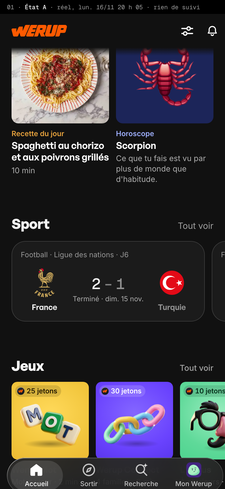
Requête « état A » du 16/11 à 20 h 05 : France 2 – 1 Turquie (rc:f1acd483363efd4c), Nice – Paris SG, Lille – Lyon, France – Argentine (rugby, sam. 21/11 21:10). Chaque carte commence désormais par le sport (« Football · Ligue des nations · J6 », « Rugby à XV · Championnat des nations · J6 »). Sélections : l'emblème de la fédération partout (TheSportsDB, URL déjà en base pour le football). Les chapitres voisins sont une capture de werup.app du 16/11.
01-accueil-chapitre-sport-etat-a.png

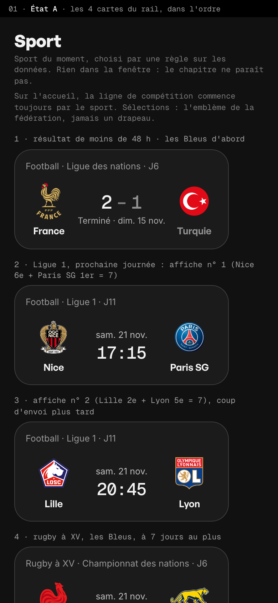
Mêmes 4 rencontres. Rangs tirés de sport_classements. C'est une planche de validation, pas un écran. Elle énonce les deux règles : le sport en tête de ligne, l'emblème de fédération pour les sélections.
01-accueil-chapitre-sport-etat-a-cartes.png

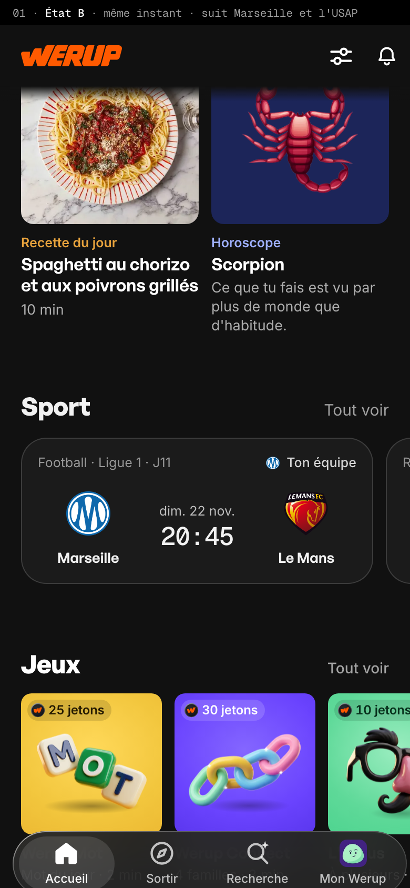
Requête « état B » : Marseille – Le Mans (J11, dim. 22/11 20:45), puis La Rochelle – USAP, puis les 4 cartes de l'état A. Il n'y a plus qu'un signal de suivi : « Ton équipe » avec le petit écusson, en tête de carte. Tous les noms ont la même graisse.
01-accueil-chapitre-sport-etat-b.png

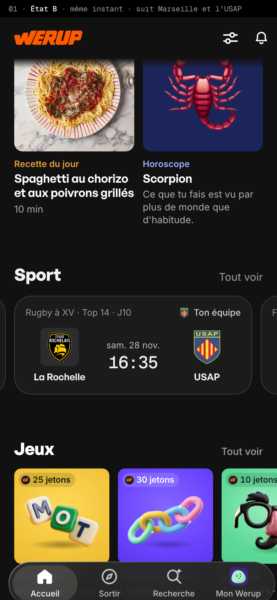
Même page, rail défilé de 347 px. On voit La Rochelle – USAP (sam. 28/11 16:35, horaire confirmé en base) avec « Ton équipe ».
01-accueil-chapitre-sport-etat-b-suite.png

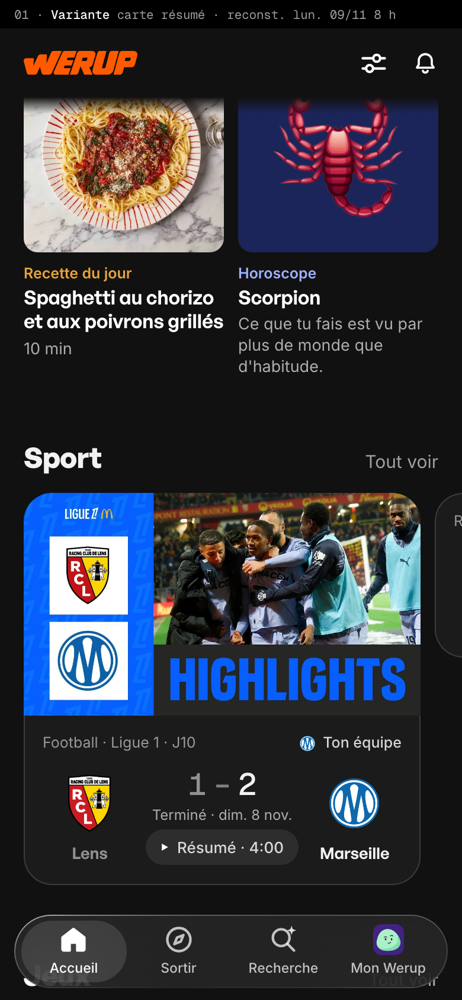
Reconstitution du lun. 09/11 à 8 h, pour un supporter qui suit Marseille et l'USAP. Lens 1 – 2 Marseille porte sa vignette officielle (NGFVd9xwnp4), publiée le 09/11 à 1 h 45 d'après la publishDate YouTube. Pau 63 – 26 USAP reste sans image : son résumé n'est publié qu'à 18 h 47. La carte n'existe que si video_url est renseigné pour un résultat de moins de 48 h. Les chapitres voisins sont ceux de la capture du 16/11.
01-accueil-chapitre-sport-etat-b-carte-resume.png

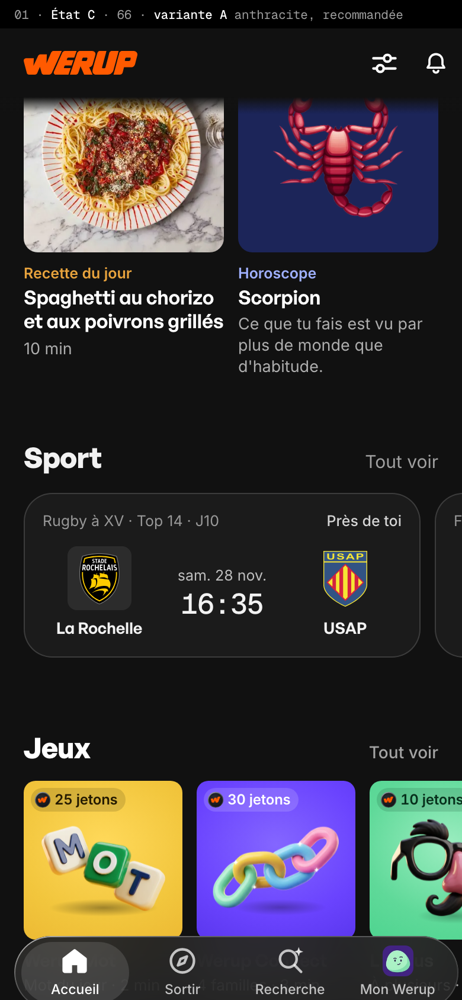
La Rochelle – USAP en premier, avec le signal « Près de toi » qui dit pourquoi elle est là, puis le sport du moment. Aucune carte des Dragons : aucun match en base après le 11/09.
01-accueil-chapitre-sport-etat-c-variante-a.png

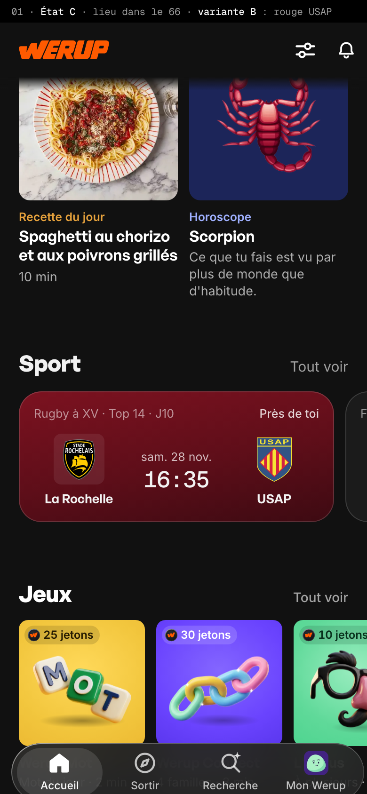
Mêmes données que la variante A. Seul change le fond de la carte de l'USAP (#7c1220). Gardée pour que Geoffrey puisse comparer.
01-accueil-chapitre-sport-etat-c-variante-b.png
7 images · faire glisser · toucher une image l'ouvre en grand
D'où viennent ses données
- Matchs, heures et scores : table
sport_rencontres, lue le 16/11/2026 à 20 h 05 (Ligue 1 et Ligue des nations par API-Football, Championnat des nations par API-Rugby). Exemple : France 2 – 1 Turquie (rc:f1acd483363efd4c). - Choix des deux affiches de Ligue 1 : rangs du classement publié (
sport_classements, mis à jour le 16/11 à 19 h 25). Nice 6e + Paris SG 1er = 7 ; Lille 2e + Lyon 5e = 7. - États B et C : le prochain match de Marseille (dim. 22/11 20:45) et de l'USAP (sam. 28/11 16:35, heure confirmée en base). Aucune carte des Dragons : aucun match en base après le 11/09.
- Écussons : api-sports pour les clubs de Ligue 1 ; emblème de la fédération (TheSportsDB) pour les sélections ; fichiers SVG du dépôt pour l'USAP et La Rochelle.
- Carte résumé : vignette officielle YouTube
NGFVd9xwnp4, publiée le 09/11 vers 1 h 45. Reconstitution du lundi 09/11 à 8 h. - Les chapitres voisins (recette, horoscope, jeux, barre basse) sont une capture de werup.app du 16/11, pas une maquette.
Ses états
- chargement : 2 squelettes aux dimensions finales
- une équipe en erreur : « Calendrier indisponible pour le moment »
- tout en erreur : le chapitre se tait
- équipe suivie sans match : « Aucun match programmé pour l'instant », avec le dernier résultat s'il a moins de 14 jours
- match reporté : la carte passe au match suivant
Ce que l'image a changé par rapport à la spécification
- Chaque carte commence par le sport : « Football · Ligue des nations · J6 ».
- Équipes nationales : l'emblème de la fédération (le coq de la FFF), jamais le drapeau (question G6).
- Un seul signal de suivi, en tête de carte : « Ton équipe » (état B) ou « Près de toi » (état C). Tous les noms ont la même graisse.
- Nouvelle variante à valider : la « carte résumé », avec la vignette officielle au-dessus du score (question G7).
Inspiré de : Apple Sports et ESPN pour les favoris d'abord, puis le reste, avec les logos collés au score. FotMob pour l'essentiel seulement, sans surcharge. Sofascore pour l'onglet Tendances, ici remplacé par une règle de données, sans algorithme opaque. Consigne du fondateur du 16/11 : aucune carte d'invitation, le hero intact.
Spécification d'origine : contenu exact et requêtes SQL
Écrite avant les images. Là où l'image diffère, la liste « Ce que l'image a changé » ci-dessus le dit. Dans ce texte, « question 3 » et « question de couleur » renvoient aux questions G3 et G2 ; « question 4, 6, 8, 11 » aux questions Q de la proposition.
CADRE (inchangé, charte) :
- 4e chapitre par défaut, masquable et ordonnable ; titre « Sport » (TitreChapitre, D-1881) ; sur la même ligne, à droite, la porte « Tout voir », qui mène à /sport.
- ViewportMount, ancre « sport », hauteur réservée ; RailChapitre.
- Cartes BlocMatch au format carte : 86 % de largeur (92 % sous 375 px, 96 % sous 340 px), au moins 132 px de haut, surface-raised sans ombre, rounded-3xl ; grille de 2 colonnes en lg.
- Ici, aucune carte d'invitation, aucune phrase d'explication, aucun bouton « Choisir mes équipes ».
UNE CARTE, DE HAUT EN BAS :
1. Une ligne à 55 % : la compétition et la journée, dites une seule fois (« Ligue 1 · J11 »).
2. La rangée centrale : écusson de 52 à 56 px et nom | bloc central en Geist Mono tabulaire | nom et écusson. Le nom s'enroule, il n'est jamais tronqué.
3. Le bloc central selon l'état :
- à venir : « sam. 21 nov. » et « 17:15 » ;
- jour J : « Aujourd'hui » et l'heure ;
- en cours : PastilleDirect et « En cours », sans score (D-2120) ;
- terminé : le score en 26 px, puis « Terminé · dim. 15 nov. » ; le vainqueur à 100 %, le perdant à 55 % ;
- « Heure à confirmer » quand horaire_confirme est faux.
ÉTAT A (réel, lundi 16/11/2026 à 20 h 05 ; aucune équipe suivie ; lieu hors territoire, ou aucun lieu) : le sport du moment, 4 cartes, dans cet ordre.
1. Ligue des nations · J6 — France 2 – 1 Turquie — Terminé · dim. 15 nov. France à 100 %, Turquie à 55 %.
2. Ligue 1 · J11 — Nice – Paris SG — sam. 21 nov. · 17:15.
3. Ligue 1 · J11 — Lille – Lyon — sam. 21 nov. · 20:45.
4. Championnat des nations · J6 — France – Argentine — sam. 21 nov. · 21:10 (rugby à XV).
RÈGLE DE CHOIX (données seulement, jamais à la main) :
- les moments : en cours, puis aujourd'hui, puis résultat de moins de 48 h, puis prochain match à 7 jours au plus ;
- à moment égal : football, puis XV, puis XIII ; dans un même sport, les Bleus d'abord ;
- Ligue 1 : les matchs du jour ; à défaut, les 2 affiches de la prochaine journée, c'est-à-dire la plus petite somme des rangs du classement publié (Nice 6e + PSG 1er = 7 ; Lille 2e + Lyon 5e = 7) ; à égalité, le coup d'envoi le plus tôt ;
- Top 14 et Super League : seulement les matchs en cours ou du jour ;
- les matchs entre sélections étrangères ne paraissent jamais à l'accueil ;
- 4 cartes au plus. S'il n'y a rien dans la fenêtre, le chapitre ne paraît pas.
SQL (état A) :
with t as (select timestamptz '2026-11-16 20:05:00+01' m), cl as (select (l->>'equipeId') eid, (l->>'rang')::int rang from sport_classements c, jsonb_array_elements(c.lignes) l where c.competition_id='football:ligue-1' and c.saison='2026-2027'), cand as (select r.*, d.nom dom, x.nom ext, case when r.statut in ('en_jeu','mi_temps') then 1 when (r.coup_envoi at time zone 'Europe/Paris')::date=(t.m at time zone 'Europe/Paris')::date and r.statut='programme' then 2 when r.statut='termine' and r.coup_envoi > t.m - interval '48 hours' then 3 when r.statut='programme' and r.coup_envoi > t.m and r.coup_envoi <= t.m + interval '7 days' then 4 end moment, case split_part(r.competition_id,':',1) when 'football' then 1 when 'xv' then 2 else 3 end sport_rang, ('football:france' in (r.domicile_id,r.exterieur_id) or 'xv:france' in (r.domicile_id,r.exterieur_id)) bleus, coalesce(cd.rang,99)+coalesce(cx.rang,99) somme_rangs, r.journee j from sport_rencontres r cross join t join sport_equipes d on d.id=r.domicile_id join sport_equipes x on x.id=r.exterieur_id left join cl cd on cd.eid=r.domicile_id left join cl cx on cx.eid=r.exterieur_id where r.competition_id in ('football:ligue-1','football:ligue-des-nations','xv:top-14','xv:challenge-cup','xv:nations-championship','xiii:super-league') and r.coup_envoi between t.m - interval '48 hours' and t.m + interval '7 days'), l1 as (select min(j) jn from cand where competition_id='football:ligue-1' and moment=4) select moment, competition_id, j, to_char(coup_envoi at time zone 'Europe/Paris','DD/MM HH24:MI') ke, dom, ext, statut, score_domicile, score_exterieur from (select c.*, row_number() over (partition by (c.competition_id='football:ligue-1' and c.moment=4) order by c.somme_rangs, c.coup_envoi) rn from cand c, l1 where c.moment is not null and (c.bleus or (c.competition_id='football:ligue-1' and (c.moment in (1,2) or (c.moment=4 and c.j=l1.jn))) or (c.competition_id in ('xv:top-14','xiii:super-league') and c.moment in (1,2)))) z where not (competition_id='football:ligue-1' and moment=4 and rn>2) order by moment, sport_rang, (not bleus), coup_envoi limit 4
ÉTAT B (même instant ; suit Marseille et l'USAP) : d'abord les équipes suivies, une carte par équipe ; puis le sport du moment, sans doublon ; 8 cartes au plus.
1. Ligue 1 · J11 — Marseille – Le Mans — dim. 22 nov. · 20:45.
2. Top 14 · J10 — La Rochelle – USAP — sam. 28 nov. · 16:35.
3 à 6. Les 4 cartes de l'état A.
SQL (état B, une carte par équipe suivie) :
with t as (select timestamptz '2026-11-16 20:05:00+01' m), suivies(eid) as (values ('football:marseille'),('xv:usap')) select s.eid, x.competition_id, x.journee, to_char(x.coup_envoi at time zone 'Europe/Paris','DD/MM HH24:MI') ke, x.horaire_confirme, x.statut, x.score_domicile, x.score_exterieur, x.domicile_id, x.exterieur_id, x.lieu, x.moment from suivies s cross join t left join lateral (select y.* from (select r.*, case when r.statut in ('en_jeu','mi_temps') then 1 when r.statut='programme' and (r.coup_envoi at time zone 'Europe/Paris')::date=(t.m at time zone 'Europe/Paris')::date then 2 when r.statut='termine' and r.coup_envoi > t.m - interval '48 hours' then 3 when r.statut='programme' and r.coup_envoi > t.m then 4 when r.statut='termine' then 5 end moment from sport_rencontres r where s.eid in (r.domicile_id, r.exterieur_id) and r.competition_id in ('football:ligue-1','football:ligue-des-nations','xv:top-14','xv:challenge-cup','xv:nations-championship','xiii:super-league') and (r.statut in ('en_jeu','mi_temps') or (r.statut='programme' and r.coup_envoi > t.m - interval '3 hours') or (r.statut='termine' and r.coup_envoi > t.m - interval '14 days'))) y order by y.moment, case when y.moment in (1,2,4) then y.coup_envoi end asc, y.coup_envoi desc limit 1) x on true order by x.moment nulls last, x.coup_envoi
(Dans le code, c'est rencontresDesEquipes, puis ordreDesEquipes, D-2125.)
ÉTAT C (lieu dans les Pyrénées-Orientales ; rien de suivi) :
- la carte USAP d'abord (La Rochelle – USAP, prochain match : elle est donc vivante), puis le sport du moment ;
- aucune carte Dragons : leur dernier match date du 11/09 (Wigan 50 – 12 Dragons Catalans) et la Super League 2027 n'est pas en base.
AUTRES ÉTATS :
- chargement : 2 squelettes aux dimensions finales ;
- une équipe en erreur : « Calendrier indisponible pour le moment » ;
- tout en erreur : le chapitre se tait ;
- équipe suivie sans match : « Aucun match programmé pour l'instant », avec le dernier résultat s'il a moins de 14 jours ;
- match reporté : la carte passe au match suivant.
VARIANTES POUR GEOFFREY (question de couleur) :
- A : toutes les cartes en anthracite neutre ;
- B : USAP en #7c1220 et Dragons en #9a6a00, les autres en neutre.
ÉCUSSONS ET NOMS :
- France football : sport_equipes.visuel->>'url' ;
- Ligue 1 : https://media.api-sports.io/football/teams/<id>.png (Nice 84, PSG 85, Lille 79, Lyon 80, Marseille 81, Le Mans 1298) ;
- Turquie : 777 ;
- France XV : https://media.api-sports.io/rugby/teams/387.png ;
- USAP : src/assets/clubs/usap.svg ; La Rochelle : src/assets/clubs/la-rochelle.svg ;
- noms en français : la base dit « Turkey » et « Argentina », la carte dit « Turquie » et « Argentine ».02 /sport : le sommaire, football en direct en tête
À quoi il sert. C'est la page où l'on vérifie tout le sport en cinq secondes. Ce qui bouge d'abord, le football en premier, puis le XV et le XIII, chaque compétition en un bloc court. C'est la destination de « Tout voir » et l'adresse stable à communiquer.

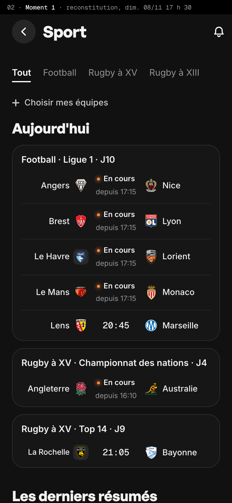
Reconstitution par l'heure du dim. 08/11 à 17 h 30. Aujourd'hui ne garde que les matchs en cours et à venir du jour : 4 matchs de Ligue 1 « En cours depuis 17:15 » puis Lens – Marseille à 20:45, Angleterre – Australie « depuis 16:10 », La Rochelle – Bayonne à 21:05. « Choisir mes équipes » est sur une ligne discrète sous les onglets. Aucun score en cours n'est montré.
02-sport-sommaire-direct-moment-1.png

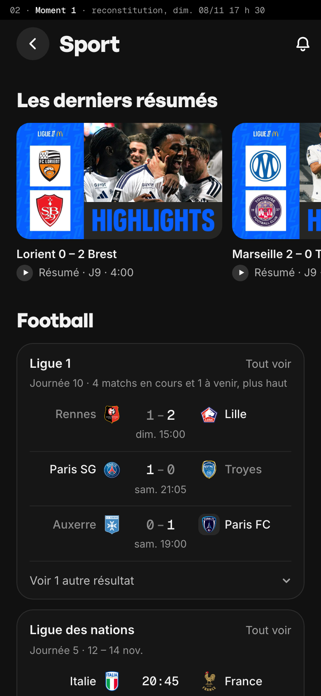
Le rail montre les résumés réellement publiés avant 17 h 30 le 08/11 : ceux de la J9 de Ligue 1 (publiés du 02/11 à 0 h au 03/11 à 1 h 45). Ceux de la J10 ne paraissent que le 09/11 à 0 h. Ligue 1 : « Journée 10 · 4 matchs en cours et 1 à venir, plus haut », 3 résultats et « Voir 1 autre résultat » (4 terminés à 17 h 30).
02-sport-sommaire-direct-moment-1-suite.png

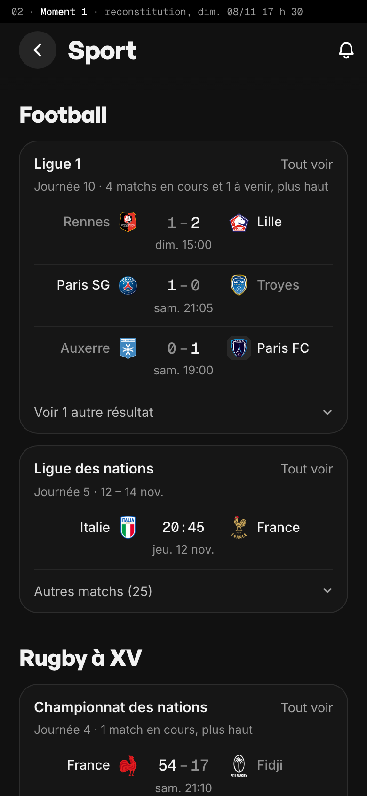
Ligue 1 J10 : Rennes 1 – 2 Lille (dim. 15:00), Paris SG 1 – 0 Troyes, Auxerre 0 – 1 Paris FC, sans puce « Résumé » parce que rien n'était publié. Ligue des nations J5 : Italie – France, jeu. 12/11 20:45. « Autres matchs (25) » = 26 rencontres comptées en base, moins 1.
02-sport-sommaire-direct-moment-1-suite-2.png

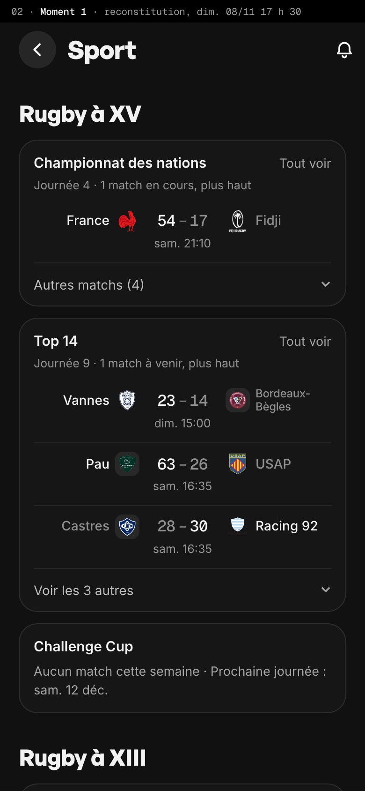
Championnat des nations J4 : France 54 – 17 Fidji (emblème Fiji Rugby, plus le logo Fijian Drua). « Autres matchs (4) » = 6 lignes listées, moins France – Fidji et Angleterre – Australie. Top 14 J9 : 3 résultats et « Voir les 3 autres » (7 lignes listées, dont 1 à venir montrée plus haut). Challenge Cup : prochaine rencontre en base le 12/12 à 14:00. Super League : aucun match après aujourd'hui (0 ligne).
02-sport-sommaire-direct-moment-1-suite-3.png

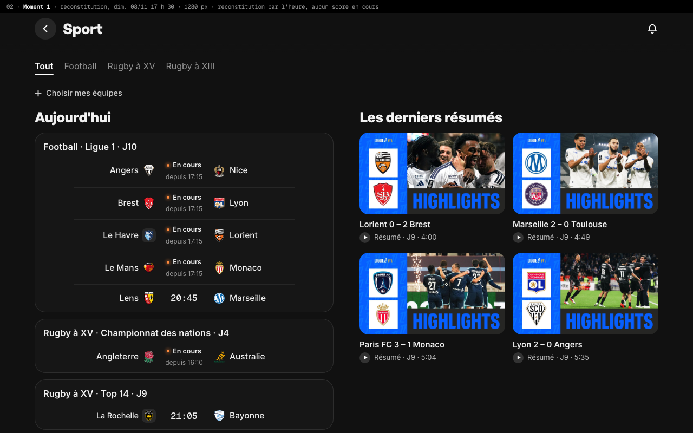
Mêmes données. La colonne de l'en-tête est celle du contenu (max-w-6xl, x = 64 partout). Aujourd'hui et Les derniers résumés partagent la même ligne de base. L'échelle typographique monte d'un cran, et les rangées sont bornées à 440 px.
02-sport-sommaire-direct-moment-1-1280.png

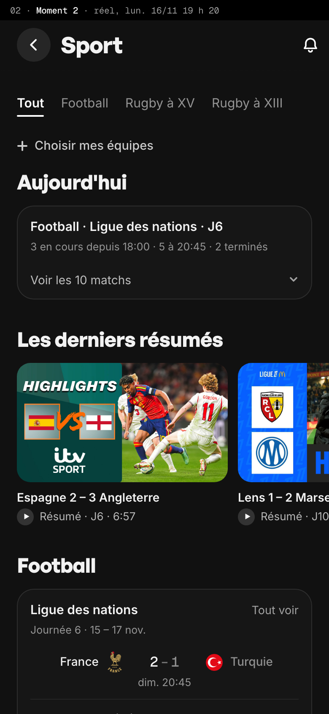
16/11 à 19 h 20, relevés sport_releves de 19:20:06. Aucune équipe de France aujourd'hui : la Ligue des nations est repliée sur une seule ligne, « 3 en cours depuis 18:00 · 5 à 20:45 · 2 terminés », avec « Voir les 10 matchs » (10 lignes listées). Viennent ensuite les derniers résumés (Espagne 2 – 3 Angleterre, seule vidéo de la J6 en base, puis la J10 de Ligue 1). Puis Football, où le bloc de la Ligue des nations passe en tête parce qu'il porte France 2 – 1 Turquie (moins de 48 h). « Autres matchs (15) » = 26 − 10 − 1.
02-sport-sommaire-direct-moment-2.png

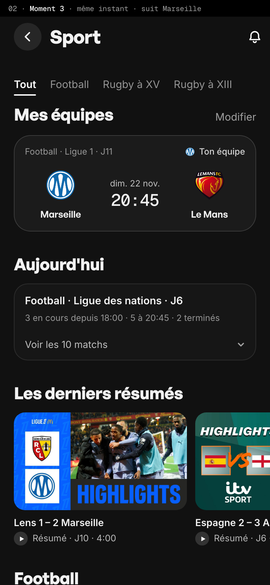
Même instant. « Mes équipes » contient une seule carte, en pleine largeur (Marseille – Le Mans, « Ton équipe »). Le rail des résumés commence par Lens 1 – 2 Marseille.
02-sport-sommaire-direct-moment-3.png
7 images · faire glisser · toucher une image l'ouvre en grand
D'où viennent ses données
- Moment 1 : reconstitution par l'heure du dimanche 08/11 à 17 h 30, avec les rencontres réelles de ce jour relues le 16/11. Aucun score en cours n'est montré.
- Moment 2 : relevés réels du direct (
sport_releves) du 16/11 à 19:20:06. Les scores existent en base mais restent masqués (D-2120). - Rail « Les derniers résumés » :
video_urlet date de publication lue sur YouTube. Seules les vidéos déjà publiées à l'instant montré paraissent (la J9 le 08/11 ; la J10 n'arrive que le 09/11). - Les nombres « Autres matchs (N) » sont comptés en base. Exemple : « Autres matchs (25) » = 26 rencontres de la journée, moins 1.
- Challenge Cup : prochaine rencontre en base le 12/12 à 14:00. Super League : aucun match en base après le 16/11.
Ses états
- squelettes section par section : Mes équipes s'hydrate seul, le reste est rendu côté serveur
- une erreur se dit en une phrase, à l'endroit concerné
- aucune section n'est rendue vide ; Aujourd'hui est absent s'il n'y a aucun match du jour
- intersaison : blocs compacts honnêtes, jamais « Saison terminée » (D-1729)
- onglet Football : le même composant, filtré, sans titre de sport
- en 1280 px : les blocs passent sur 2 colonnes, largeurs bornées
Ce que l'image a changé par rapport à la spécification
- « Aujourd'hui » ne garde que les matchs en cours et à venir du jour. Les matchs terminés vont dans le bloc de leur compétition.
- « Choisir mes équipes » passe sur une ligne discrète sous les onglets.
- Nouveau rail « Les derniers résumés ». Un match de la J10 n'a pas de puce « Résumé » le 08/11 : la vidéo n'existait pas encore (la spécification l'affichait, c'était faux).
- Les matchs en cours disent « En cours depuis 17:15 ».
- Pendant la trêve, les sélections étrangères tiennent sur une ligne : « 3 en cours depuis 18:00 · 5 à 20:45 · 2 terminés ».
- Le bloc qui porte un résultat des Bleus de moins de 48 h passe en tête de son sport (règle ajoutée, point C4).
Inspiré de : Apple Sports : Hier, Aujourd'hui, À venir, sélecteur discret, ligues hors saison réduites. FotMob : « Hide all », qui signale encore les matchs importants (repris ici avec « Voir les N autres » et « Autres matchs »). Sofascore : le direct d'abord, mais sans icônes muettes ni menu « … » (critique IXD@Pratt). Flashscore : tri par compétition.
Spécification d'origine : contenu exact et requêtes SQL
Écrite avant les images. Là où l'image diffère, la liste « Ce que l'image a changé » ci-dessus le dit. Dans ce texte, « question 3 » et « question de couleur » renvoient aux questions G3 et G2 ; « question 4, 6, 8, 11 » aux questions Q de la proposition.
MOMENT 1 (principal) : reconstitution d'un moment réel, dimanche 8/11/2026 à 17 h 30, aucune équipe suivie, onglet « Tout ».
Légende de la maquette : « Reconstitution : aucun relevé en direct n'existe avant le 16/11. En cours = coup d'envoi il y a moins de 95 min ; terminé = coup d'envoi il y a plus de 2 h 10. Aucun match de ce moment ne tombe entre les deux. Aucun score en cours n'est montré. »
1. En-tête « Sport » ; h1 masqué.
2. Onglets OngletsChapitre défilants : « Tout · Football · Rugby à XV · Rugby à XIII ». Casse normale, filet sous l'onglet actif, cible de 44 px, pas collants. Sur la même ligne, le bouton texte « Choisir mes équipes », qui ouvre l'écran 06.
3. « Aujourd'hui » (.titre-section). Les groupes qui ont un match en cours passent d'abord, le football en premier.
- Groupe Ligue 1 · J10 : Angers – Nice · En cours ; Brest – Lyon · En cours ; Le Havre – Lorient · En cours ; Le Mans – Monaco · En cours. Puis « Voir les 2 autres », qui déplie sur place : Lens – Marseille · 20:45 et Rennes 1 – 2 Lille · Terminé · Résumé.
- Groupe Championnat des nations · J4 : Angleterre – Australie · En cours. Un match en cours est toujours montré ; le repli « Autres matchs » ne vise que les matchs de sélections sans la France qui ne sont pas en cours.
- Groupe Top 14 · J9 : Vannes 23 – 14 Bordeaux-Bègles · Terminé ; La Rochelle – Bayonne · 21:05.
4. « Football » (.titre-section).
- Bloc Ligue 1 (surface-flow, filets internes divide-white/[0.07]). Tête : « Ligue 1 », avec « Tout voir » à droite. Ligne d'état à 55 % : « Journée 10 · 6 – 8 nov. ». 3 lignes qui ne sont pas déjà dans Aujourd'hui : Toulouse 3 – 1 Strasbourg · ven. ; Auxerre 0 – 1 Paris FC · sam. ; Paris SG 1 – 0 Troyes · sam. Chacune porte le mot « Résumé ».
- Bloc Ligue des nations : « Journée 5 · 12 – 14 nov. » ; Italie – France · jeu. 12 nov. · 20:45 ; « Autres matchs (N) » replié.
5. « Rugby à XV ».
- Bloc Top 14 : « Journée 9 · 7 – 8 nov. » ; Pau 63 – 26 USAP ; Toulouse 28 – 18 Clermont ; Castres 28 – 30 Racing 92.
- Bloc Championnat des nations : « Journée 4 » ; France 54 – 17 Fidji · sam. 7 nov. ; Autres matchs (N).
- Bloc Challenge Cup, compact, en fin de sport : « Aucun match programmé pour l'instant · Prochain match : sam. 12 déc. ».
6. « Rugby à XIII ». Bloc Super League, compact : « Aucun match programmé pour l'instant ». La saison 2027 n'est pas en base.
7. Pied : « Mis à jour à 17 h 29 », puis « Werup n'est affilié à aucun club ni à aucune ligue. » Aucun nom de fournisseur.
SQL (Aujourd'hui, moment 1) :
with t as (select timestamptz '2026-11-08 17:30:00+01' m) select r.competition_id, r.journee, to_char(r.coup_envoi at time zone 'Europe/Paris','HH24:MI') heure, coalesce(d.nom_court,d.nom) dom, coalesce(x.nom_court,x.nom) ext, case when r.coup_envoi > t.m then 'a-venir' when r.coup_envoi > t.m - interval '95 minutes' then 'en-cours' when r.coup_envoi <= t.m - interval '130 minutes' then 'termine' else 'incertain' end etat_a_t, case when r.coup_envoi <= t.m - interval '130 minutes' then r.score_domicile end sd, case when r.coup_envoi <= t.m - interval '130 minutes' then r.score_exterieur end se, r.video_url from sport_rencontres r cross join t join sport_equipes d on d.id=r.domicile_id join sport_equipes x on x.id=r.exterieur_id where (r.coup_envoi at time zone 'Europe/Paris')::date=(t.m at time zone 'Europe/Paris')::date and r.competition_id in ('football:ligue-1','football:ligue-des-nations','xv:top-14','xv:challenge-cup','xv:nations-championship','xiii:super-league') order by r.competition_id not like 'football:%', r.coup_envoi
SQL (blocs : journée en cours ou à 7 jours, sinon dernière journée jouée il y a 3 jours au plus) :
with t as (select timestamptz '2026-11-08 17:30:00+01' m), j as (select competition_id, saison, journee, min(coup_envoi) debut, max(coup_envoi) fin from sport_rencontres where journee is not null and (competition_id, saison) in (('football:ligue-1','2026-2027'),('football:ligue-des-nations','2026-2027'),('xv:top-14','2026-2027'),('xv:challenge-cup','2026-2027'),('xv:nations-championship','2026'),('xiii:super-league','2026')) group by 1,2,3) select j.competition_id, j.journee, to_char(j.debut at time zone 'Europe/Paris','DD/MM') du, to_char(j.fin at time zone 'Europe/Paris','DD/MM') au from j, t where t.m between j.debut - interval '7 days' and j.fin + interval '3 days' order by j.competition_id, j.journee
(La sélection exacte des lignes vient de resumeDuSommaire, dans lecture.server.ts, D-2125.)
MOMENT 2 (réel, lundi 16/11/2026 à 19 h 20, trêve internationale, à partir de sport_releves) :
- Aujourd'hui › Ligue des nations · J6 : Islande – Luxembourg · En cours ; Estonie – Bulgarie · En cours ; Lituanie – Liechtenstein · En cours. Les relevés datent de 19:20:06 ; leurs scores existent en base mais restent masqués. Puis « Autres matchs (7) » : 5 matchs à 20:45 (Macédoine du Nord – Slovénie, Allemagne – Pays-Bas, Grèce – Serbie, Suisse – Écosse, Gibraltar – Malte) et 2 terminés, lancés à 16:00 (Îles Féroé 1 – 0 Moldavie, Kazakhstan 2 – 2 Slovaquie).
- Football › Ligue 1 : « Journée 11 · 20 – 22 nov. » ; Troyes – Le Havre · ven. 20:45 ; Nice – Paris SG · sam. 17:15 ; Lille – Lyon · sam. 20:45.
- Variante « flux qualifié » (future) : Estonie 2 – 1 Bulgarie, avec « relevé à 19 h 20 », qui est la vraie valeur du relevé de 19:20:06.
SQL (moment 2) :
with t as (select timestamptz '2026-11-16 19:20:30+01' m) select r.competition_id, to_char(r.coup_envoi at time zone 'Europe/Paris','HH24:MI') ke, d.nom dom, x.nom ext, coalesce(s.statut, r.statut) statut_a_t, s.statut_source, s.progression, to_char(s.releve_le at time zone 'Europe/Paris','HH24:MI:SS') releve, s.score_domicile sd_masque, s.score_exterieur se_masque from sport_rencontres r cross join t join sport_equipes d on d.id=r.domicile_id join sport_equipes x on x.id=r.exterieur_id left join lateral (select * from sport_releves s where s.rencontre_id=r.id and s.releve_le<=t.m order by s.releve_le desc limit 1) s on true where (r.coup_envoi at time zone 'Europe/Paris')::date=(t.m at time zone 'Europe/Paris')::date order by case coalesce(s.statut,r.statut) when 'en_jeu' then 0 when 'mi_temps' then 0 when 'programme' then 1 else 2 end, r.coup_envoi
MOMENT 3 (la même page pour une personne qui suit Marseille) : la section « Mes équipes » paraît en tête, avec « Modifier » sur la ligne de titre ; le rail reprend les cartes de l'accueil (Marseille – Le Mans, dim. 22 nov. · 20:45). Le football passe devant, puisque c'est le sport de ses équipes.
ÉTATS :
- squelettes section par section : Mes équipes s'hydrate seul, le reste est rendu côté serveur ;
- une erreur se dit en une phrase, à l'endroit concerné ;
- aucune section n'est rendue vide ; Aujourd'hui est absent s'il n'y a aucun match du jour ;
- intersaison : blocs compacts honnêtes, jamais « Saison terminée » (D-1729) ;
- onglet Football : le même composant, filtré, sans titre de sport ;
- en 1280 px : les blocs passent sur 2 colonnes, largeurs bornées.03 Feuille de match de football : avant, pendant (sans score), après (résumé vidéo)
À quoi il sert. C'est le cœur du produit. Un seul objet qui change d'état et ne montre que les sections qui ont du contenu. On y trouve le résultat juste, l'image vraie du match, la version courte de Werup et le geste « Suivre ».

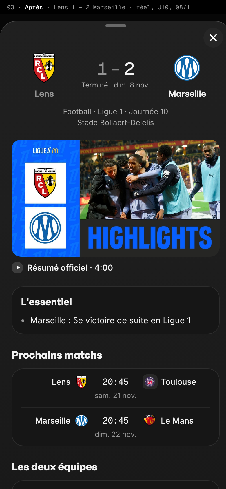
Le BlocMatch vient en tête, puis la vignette officielle intacte avec une seule ligne Werup : « Résumé officiel · 4:00 ». Ni titre YouTube, ni nom de chaîne. L'essentiel ne garde que la série de 5 victoires. Les prochains matchs sont deux LigneMatch triées par date : Lens – Toulouse sam. 21, Marseille – Le Mans dim. 22.
03-feuille-match-football-apres.png

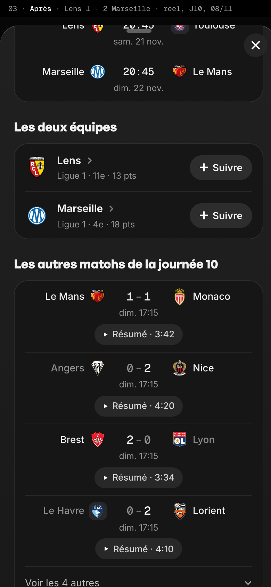
Les rangs et les points sont dits une seule fois, dans « Les deux équipes ». Toute la rangée mène à la page, avec un seul bouton « Suivre ». Il y a 4 des 8 autres matchs, avec l'heure et la puce « Résumé · durée » (13 px, cible de 44 px). Plus de « Mis à jour » : le match est terminé depuis plus de 24 h.
03-feuille-match-football-apres-suite.png

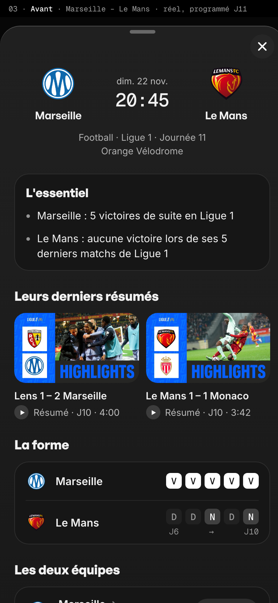
L'essentiel : 5 victoires de suite pour Marseille, et Le Mans sans victoire sur ses 5 derniers matchs (D D N D N, J6 à J10, recompté). « Leurs derniers résumés » montre deux vignettes réelles, Lens 1 – 2 Marseille et Le Mans 1 – 1 Monaco. La forme suit, avec le repère « J6 → J10 » et V, N, D distingués par le fond.
03-feuille-match-football-avant.png

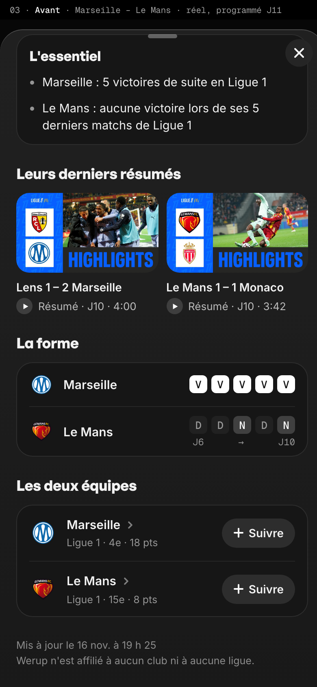
Même feuille, défilée. Rang et points dans « Les deux équipes » seulement (4e, 18 pts ; 15e, 8 pts).
03-feuille-match-football-avant-suite.png

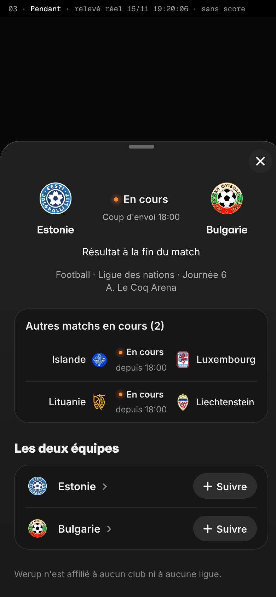
Relevé réel de 19:20:06. La feuille prend la hauteur de son contenu. On lit « En cours » et « Coup d'envoi 18:00 », une donnée sûre. Les 2 autres matchs en cours sont dépliés. Le « Mis à jour » a été retiré, puisque rien n'est affiché.
03-feuille-match-football-pendant.png

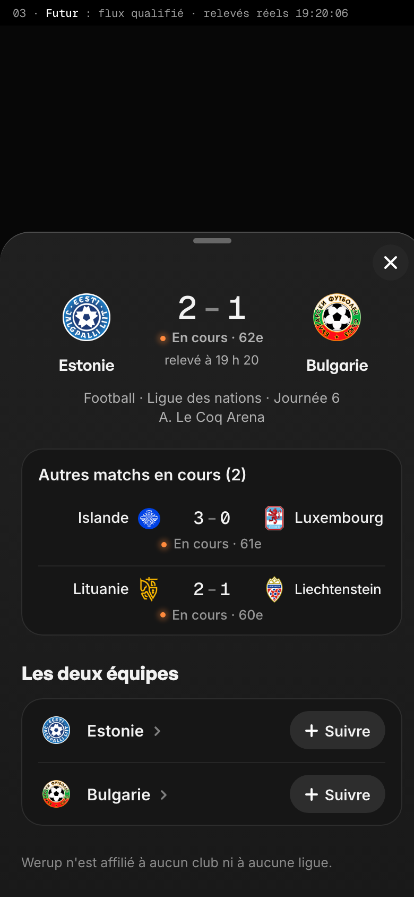
Mêmes relevés de 19:20:06, cette fois affichés : 2 – 1 « En cours · 62e », Islande 3 – 0 (61e), Lituanie 2 – 1 (60e). C'est un état futur.
03-feuille-match-football-pendant-flux-qualifie.png

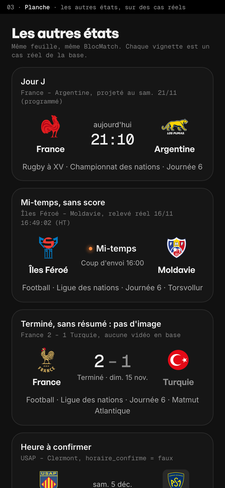
Jour J : France – Argentine, sous « Rugby à XV · Championnat des nations ». Mi-temps : Îles Féroé – Moldavie (relevé HT de 16:49:02). Terminé sans résumé : France 2 – 1 Turquie.
03-feuille-match-football-autres-etats.png

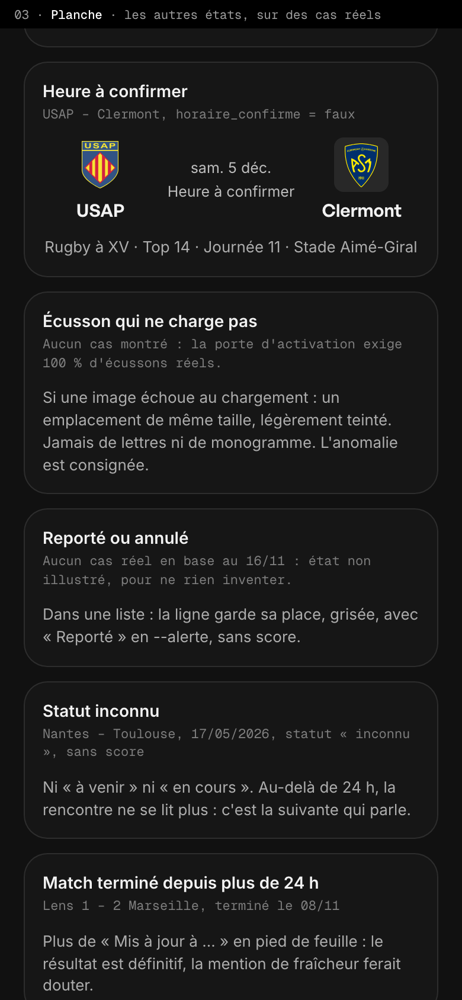
Heure à confirmer : USAP – Clermont (horaire_confirme faux). L'état « écusson absent » n'est plus illustré : seule une règle écrite le décrit (même taille, légèrement teinté, jamais de lettres). Reporté : aucun cas réel. Statut inconnu : Nantes – Toulouse. Nouvelle règle : plus de fraîcheur affichée au-delà de 24 h.
03-feuille-match-football-autres-etats-suite.png
8 images · faire glisser · toucher une image l'ouvre en grand
D'où viennent ses données
- Après : Lens 1 – 2 Marseille (
rc:929331b2ae44e15a), Ligue 1 J10, dim. 08/11 20:45, Stade Bollaert-Delelis. Vignette officielleNGFVd9xwnp4, durée 4:00 lue sur YouTube le 16/11. - Avant : Marseille – Le Mans, J11, dim. 22/11 20:45, Orange Vélodrome. Forme recalculée sur les 5 derniers matchs terminés en base (Le Mans : D D N D N, J6 à J10). Rangs et points :
sport_classements. - Pendant : Estonie – Bulgarie, relevé réel de 19:20:06 (statut en jeu, 62e minute). Le score relevé n'est montré que dans l'état futur « flux qualifié ».
- Autres états : Îles Féroé – Moldavie (relevé mi-temps de 16:49:02), France 2 – 1 Turquie (terminé sans résumé), USAP – Clermont (heure non confirmée en base), Nantes – Toulouse (statut « inconnu » depuis le 17/05/2026).
Ses états
- jour J : « Aujourd'hui » et l'heure
- mi-temps : « Mi-temps », sans score
- résultat attendu : l'heure est passée, aucun score supposé ; au-delà de 24 h, plus de lecture
- terminé sans résumé : pas d'image de tête, écussons seuls
- reporté ou annulé : « Reporté » en --alerte, sans score
- heure à confirmer
- écusson en échec : emplacement vide à la même taille
- statut « inconnu » (cas réel : Nantes – Toulouse, 17/05/2026) : la feuille n'affiche ni « à venir » ni « en cours »
- Interdits : cote, pari, publicité, bouton de partage, initiales, vert ou rouge pour le résultat
Ce que l'image a changé par rapport à la spécification
- Le score vient en premier, la vignette ensuite (la spécification mettait la vignette en tête).
- Sous la vignette, une seule ligne : « Résumé officiel · 4:00 ». Ni titre YouTube, ni nom de chaîne, ni bouton posé sur l'image (points C1 et C2).
- « L'essentiel » ne garde qu'une ligne, la série. Rangs et points sont dits une seule fois, dans « Les deux équipes ».
- Les prochains matchs sont deux lignes de match, triées par date.
- Avant le match : « Leurs derniers résumés », deux vignettes réelles.
- Pendant : « Coup d'envoi 18:00 » ; les 2 autres matchs en cours sont dépliés ; aucun « Mis à jour », puisque rien n'est affiché.
- Plus de « Mis à jour » plus de 24 h après la fin du match.
Inspiré de : The Guardian (tableau qui passe d'avant-match à direct puis à fin de match, onglets qui paraissent quand ils ont du contenu). FotMob (Facts en tête, forme). Apple Sports (score condensé et tabulaire, la vitesse avant la densité). Principe 3 de Sofascore, inversé : on n'affiche pas avant la confirmation. Doctrine TheSports : le score vient du champ score, les incidents ne servent qu'à l'affichage.
Spécification d'origine : contenu exact et requêtes SQL
Écrite avant les images. Là où l'image diffère, la liste « Ce que l'image a changé » ci-dessus le dit. Dans ce texte, « question 3 » et « question de couleur » renvoient aux questions G3 et G2 ; « question 4, 6, 8, 11 » aux questions Q de la proposition.
CONTENANT : PulseModal de nature « lire ». Panneau opaque, croix et glissement pour fermer, sans pied, une seule couche visible. Ouverte depuis une page, elle la couvre sans la fermer.
ÉTAT 1 — AVANT : Marseille – Le Mans, Ligue 1, J11, dim. 22 nov. 2026 à 20:45, Orange Vélodrome (réel, programme).
1. Pas d'image de tête : aucune photo de ce match n'existe encore.
2. BlocMatch au format fiche : écussons de 52 à 56 px (api-sports 81 et 1298), noms entiers « Marseille » et « Le Mans », et au centre « dim. 22 nov. » et « 20:45 » en Geist Mono.
3. LigneMeta : « Ligue 1 · Journée 11 · Orange Vélodrome ».
4. L'essentiel (3 lignes au plus) :
- « Marseille : 5 victoires de suite en Ligue 1 » ;
- « Marseille 4e (18 pts), Le Mans 15e (8 pts), après 10 journées ».
5. La forme, en lettres et par la graisse, jamais en couleur :
- Marseille : V V V V V (J6 à J10) ;
- Le Mans : D D N D N.
6. Les deux équipes, une rangée chacune : écusson, nom, « 4e · 18 pts », puis « Voir la page » et « Suivre » (après un suivi : la cloche, voir l'écran 06).
7. Aucune section « Dernière confrontation » : il n'y a aucun match Marseille – Le Mans en base. On n'écrit pas non plus « première confrontation », ce serait faux.
ÉTAT 2 — PENDANT : Estonie – Bulgarie, Ligue des nations, J6, lundi 16/11/2026, coup d'envoi 18:00, A. Le Coq Arena. Instantané réel du relevé de 19:20:06 : statut en_jeu, source 2H, 62e minute.
1. Pas d'image de tête.
2. BlocMatch au format fiche : écussons ; au centre, PastilleDirect et « En cours ». AUCUN score, et jamais « 0 – 0 » (D-2120 : flux non qualifié).
3. Sous le bloc, une seule ligne : « Résultat à la fin du match ».
4. LigneMeta : « Ligue des nations · Journée 6 · A. Le Coq Arena ».
5. Les deux équipes, avec « Suivre ».
6. « Autres matchs en cours (2) », replié : Islande – Luxembourg, Lituanie – Liechtenstein.
7. Variante future, une fois le flux qualifié : « 2 – 1 » et « relevé à 19 h 20 ». Si le score recule : « But annulé » pendant quelques minutes. Si la fraîcheur se perd : retour aussitôt à l'affichage sans score.
ÉTAT 3 — APRÈS : Lens 1 – 2 Marseille, Ligue 1, J10, dim. 8 nov. 2026 à 20:45, Stade Bollaert-Delelis (réel, terminé).
1. Image de tête : la vignette officielle intacte, https://i.ytimg.com/vi/NGFVd9xwnp4/maxresdefault.jpg. C'est une vraie photo du match, publiée par la chaîne Ligue 1 McDonald's. Dessus : un bouton de lecture et « Résumé · 4:00 ». Le titre est intact : « RC LENS - OLYMPIQUE DE MARSEILLE (1-2) | Week 10 - Ligue 1 McDonald's 26/27 ». Au toucher, le lecteur se monte sur place en 16:9, au moins 480 × 270. Si la lecture échoue : « Vidéo lisible en France seulement ».
2. BlocMatch au format fiche : Lens 1 – 2 Marseille, score en 26 px tabulaire, Marseille à 100 %, Lens à 55 %, puis « Terminé · dim. 8 nov. ».
3. LigneMeta : « Ligue 1 · Journée 10 · Stade Bollaert-Delelis ».
4. L'essentiel :
- « Marseille : 5e victoire de suite en Ligue 1 » ;
- « Marseille 4e (18 pts) · Lens 11e (13 pts) » ;
- « Prochains matchs : Marseille – Le Mans, dim. 22 nov. 20:45 · Lens – Toulouse, sam. 21 nov. 20:45 ».
5. Les deux équipes, avec « Voir la page » et « Suivre ».
6. Aucune section « Articles » : le football n'a aucune source branchée.
7. « Les autres matchs de la journée 10 », 8 lignes, repliées après 4. Chacune porte « Résumé ».
8. Pied : « Mis à jour à … » (releve_le), puis la mention de non-affiliation.
SQL :
-- après
select r.id, r.journee, r.coup_envoi at time zone 'Europe/Paris' ke, r.lieu, r.statut, r.score_domicile, r.score_exterieur, r.video_url, 'https://i.ytimg.com/vi/'||substring(r.video_url from 'v=([^&]+)')||'/maxresdefault.jpg' vignette_officielle, r.releve_le from sport_rencontres r where r.id='rc:929331b2ae44e15a'
-- avant
select r.* from sport_rencontres r where r.competition_id='football:ligue-1' and r.saison='2026-2027' and r.journee=11 and r.domicile_id='football:marseille'
-- rang et points des deux équipes
select l->>'equipeId' eid, (l->>'rang')::int rang, (l->>'points')::int pts, (l->>'joues')::int j from sport_classements c, jsonb_array_elements(c.lignes) l where c.competition_id='football:ligue-1' and c.saison='2026-2027' and l->>'equipeId' in ('football:lens','football:marseille','football:le-mans')
-- forme (5 derniers résultats)
select e.id, string_agg(case when (r.domicile_id=e.id and r.score_domicile>r.score_exterieur) or (r.exterieur_id=e.id and r.score_exterieur>r.score_domicile) then 'V' when r.score_domicile=r.score_exterieur then 'N' else 'D' end, ' ' order by r.coup_envoi) forme from (values ('football:marseille'),('football:le-mans'),('football:lens')) e(id) join lateral (select * from sport_rencontres r where r.competition_id='football:ligue-1' and r.saison='2026-2027' and r.statut='termine' and e.id in (r.domicile_id,r.exterieur_id) order by r.coup_envoi desc limit 5) r on true group by e.id
-- dernière confrontation (0 ligne : section absente)
select * from sport_rencontres where statut='termine' and domicile_id in ('football:marseille','football:le-mans') and exterieur_id in ('football:marseille','football:le-mans') order by coup_envoi desc limit 1
-- pendant : le relevé de 19:20:06
select s.* from sport_releves s join sport_rencontres r on r.id=s.rencontre_id join sport_equipes d on d.id=r.domicile_id where d.nom='Estonia' and s.releve_le <= timestamptz '2026-11-16 19:20:30+01' order by s.releve_le desc limit 1
AUTRES ÉTATS (les maquettes en montrent 4 en vignette) :
- jour J : « Aujourd'hui » et l'heure ;
- mi-temps : « Mi-temps », sans score ;
- résultat attendu : l'heure est passée, aucun score supposé ; au-delà de 24 h, plus de lecture ;
- terminé sans résumé : pas d'image de tête, écussons seuls ;
- reporté ou annulé : « Reporté » en --alerte, sans score ;
- heure à confirmer ;
- écusson en échec : emplacement vide à la même taille ;
- statut « inconnu » (cas réel : Nantes – Toulouse, 17/05/2026) : la feuille n'affiche ni « à venir » ni « en cours ».
Interdits : cote, pari, publicité, bouton de partage, initiales, vert ou rouge pour le résultat.04 Page de compétition : Ligue 1, avec son classement réel
À quoi il sert. La page de référence du championnat le plus suivi : la journée en cours, les résultats avec leurs résumés, le classement publié et les 18 équipes à suivre. Elle sert de gabarit à toutes les compétitions.

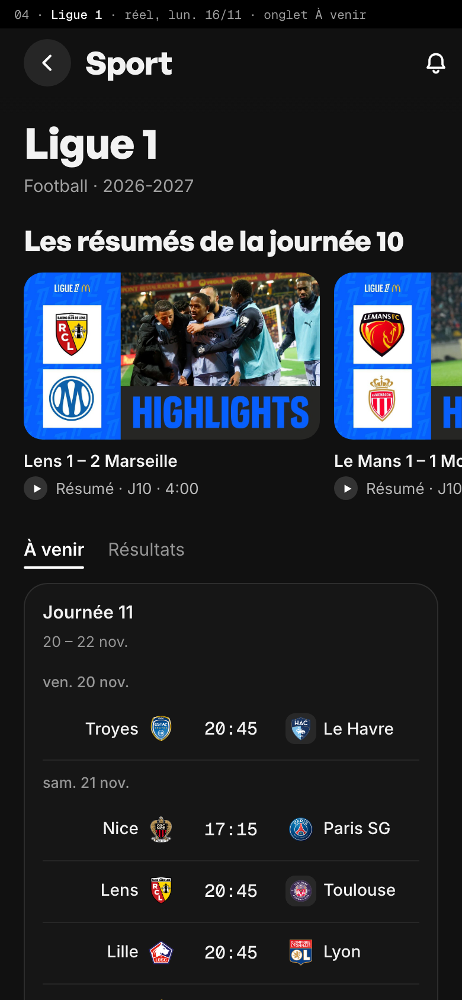
Le rail des 9 vignettes officielles de la J10 est placé au-dessus des onglets, pour que les onglets restent collés à ce qu'ils commandent. Chaque vignette porte une légende Werup « Lens 1 – 2 Marseille » puis « Résumé · J10 · 4:00 ». J11 : 9 rencontres, groupées par jour, en minuscule (« ven. 20 nov. »).
04-competition-ligue-1.png

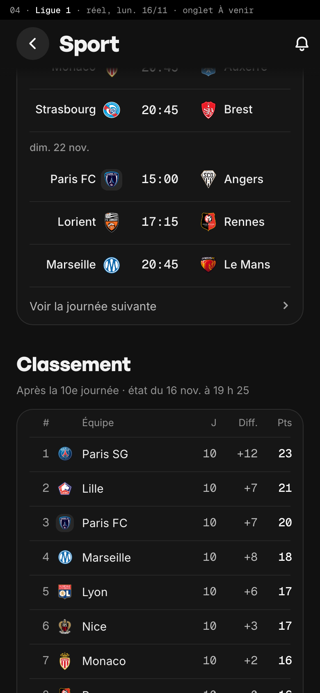
Une seule mention de fraîcheur, au-dessus du tableau : « Après la 10e journée · état du 16 nov. à 19 h 25 » (calcule_le de sport_classements). L'en-tête du tableau est tout en Inter 12 px.
04-competition-ligue-1-suite.png

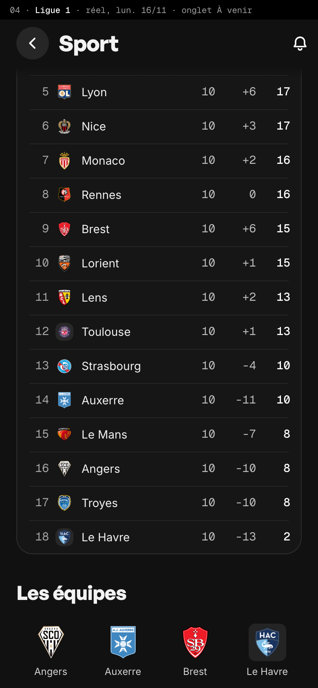
Les 18 lignes réelles. Pts en Geist Mono 500 blanc. Les écussons sombres (Paris FC, Toulouse, Le Havre) ont un fond à 8 % de blanc, sur une liste mesurée. Aucune zone : il n'y a pas de règlement sourcé.
04-competition-ligue-1-suite-2.png

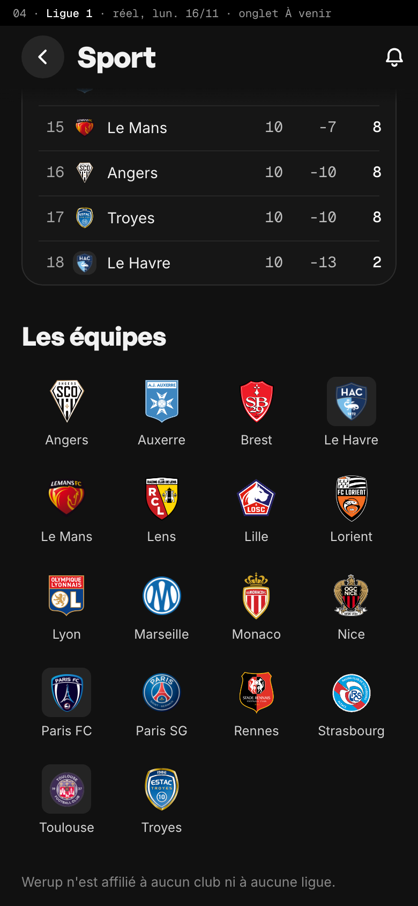
La grille des 18 écussons sert à la navigation, sans « Suivre ». La mention MentionClassement a été fondue dans la ligne de fraîcheur.
04-competition-ligue-1-suite-3.png

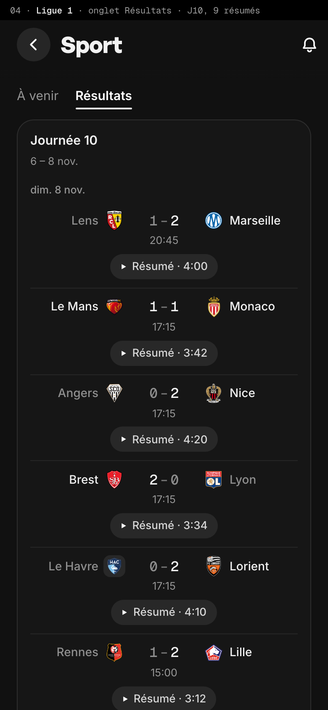
Les 9 scores réels de la J10, groupés par jour, du plus récent au plus ancien. L'heure est sous chaque score pour que l'ordre se lise. Chaque ligne porte une puce « Résumé · durée » (durées lues sur YouTube).
04-competition-ligue-1-resultats.png

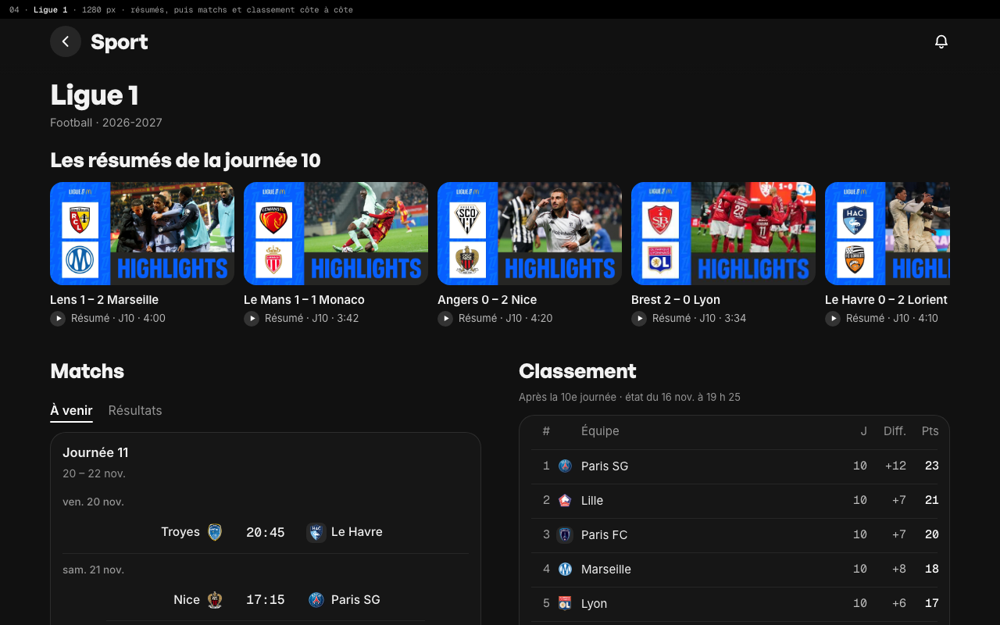
Mêmes données. L'en-tête et la colonne sont alignés (x = 64). Le rail des résumés vient en tête, puis Matchs et Classement sur la même ligne de base.
04-competition-ligue-1-1280.png
6 images · faire glisser · toucher une image l'ouvre en grand
D'où viennent ses données
- Matchs des journées 10 et 11 :
sport_rencontres(heures, scores,video_url). - Classement :
sport_classements, 18 lignes, « état du 16 nov. à 19 h 25 ». La source n'est jamais nommée à l'écran (D-2122). - Durées des résumés : lues sur YouTube le 16/11.
- Écussons : api-sports. Les écussons sombres ont un fond à 8 % de blanc, sur une liste mesurée pixel par pixel.
Ses états
- squelettes de journée et de tableau
- « Aucun match programmé pour l'instant »
- une erreur, en une phrase, par section
- hors saison (aucun match à 7 jours) : le classement passe devant et l'onglet « Résultats » s'ouvre par défaut
- compétition inactive : 404 propre
- même gabarit pour la Ligue des nations : pas de classement, et le repli « Autres matchs (N) » en dehors de la France
- en 1280 px : matchs et classement côte à côte
Ce que l'image a changé par rapport à la spécification
- Le rail des 9 résumés de la J10 passe au-dessus des onglets, avec une légende Werup : « Lens 1 – 2 Marseille · Résumé · J10 · 4:00 ».
- La journée est groupée par jour (« ven. 20 nov. »).
- Une seule mention de fraîcheur, au-dessus du tableau.
- La grille des 18 équipes sert à naviguer, sans bouton « Suivre ».
Inspiré de : Application NRL (Draw, Ladder, Match Centre, et la recherche que ses avis réclament). LNR (Calendrier et résultats, Classement, Vidéos). OneFootball (onglets et bloc « Dernières vidéos » avec la durée sur chaque carte). FotMob (tableau dense et lisible).
Spécification d'origine : contenu exact et requêtes SQL
Écrite avant les images. Là où l'image diffère, la liste « Ce que l'image a changé » ci-dessus le dit. Dans ce texte, « question 3 » et « question de couleur » renvoient aux questions G3 et G2 ; « question 4, 6, 8, 11 » aux questions Q de la proposition.
ADRESSE : /sport/football/ligue-1. 1. Ouverture : titre « Ligue 1 » d'une seule encre, ligne utile « Football · 2026-2027 ». Pas de logo de compétition (texte seul). 2. Matchs, avec OngletsChapitre « À venir · Résultats ». Par défaut « À venir », puisqu'un match a lieu dans les 7 jours. - À venir : « Journée 11 · 20 – 22 nov. », 9 lignes denses (LigneMatch, écussons de 24 à 28 px) : · ven. 20:45 Troyes – Le Havre · sam. 17:15 Nice – Paris SG · sam. 20:45 Lille – Lyon, Monaco – Auxerre, Strasbourg – Brest, Lens – Toulouse · dim. 15:00 Paris FC – Angers · dim. 17:15 Lorient – Rennes · dim. 20:45 Marseille – Le Mans Puis « Voir la journée suivante ». - Résultats : « Journée 10 · 6 – 8 nov. », 9 lignes, chacune avec « Résumé » : · Toulouse 3 – 1 Strasbourg · Auxerre 0 – 1 Paris FC · Paris SG 1 – 0 Troyes · Rennes 1 – 2 Lille · Angers 0 – 2 Nice · Brest 2 – 0 Lyon · Le Havre 0 – 2 Lorient · Le Mans 1 – 1 Monaco · Lens 1 – 2 Marseille - Les équipes suivies sont repérées par la graisse, jamais par la couleur. 3. « Les résumés de la journée 10 » : un rail (RailChapitre) de 9 vignettes officielles intactes, la durée sur chacune quand elle est connue (Lens – Marseille 4:00 ; Toulouse – Strasbourg 3:22). Le lecteur se monte au toucher. Le rail n'existe que si la journée a des résumés. 4. Classement, en tableau commun : rang en Geist Mono, écusson de 24 px, nom, J, diff., Pts. Au-dessus : « Après la 10e journée · mis à jour le 16 nov. à 19 h 25 ». Aucune zone de qualification, faute de règlement sourcé. Les 18 lignes réelles : 1 Paris SG 10 +12 23 · 2 Lille 10 +7 21 · 3 Paris FC 10 +7 20 · 4 Marseille 10 +8 18 · 5 Lyon 10 +6 17 · 6 Nice 10 +3 17 · 7 Monaco 10 +2 16 · 8 Rennes 10 0 16 · 9 Brest 10 +6 15 · 10 Lorient 10 +1 15 · 11 Lens 10 +2 13 · 12 Toulouse 10 +1 13 · 13 Strasbourg 10 -4 10 · 14 Auxerre 10 -11 10 · 15 Le Mans 10 -7 8 · 16 Angers 10 -10 8 · 17 Troyes 10 -10 8 · 18 Le Havre 10 -13 2. Puis MentionClassement. 5. « Les équipes » : grille de 18 écussons réels (BlasonEquipe, aire égalisée, sans disque), le nom dessous, cible de 44 px au moins. Les équipes suivies d'abord, puis l'ordre alphabétique. Toucher mène à la page de l'équipe. 6. Mentions : fraîcheur et non-affiliation. Aucun nom de fournisseur, alors que le classement vient de TheSportsDB (D-2122). SQL : -- matchs de la journée 11 (à venir) et 10 (résultats) select r.journee, to_char(r.coup_envoi at time zone 'Europe/Paris','Dy DD/MM HH24:MI') ke, r.horaire_confirme, d.nom dom, x.nom ext, r.statut, r.score_domicile, r.score_exterieur, r.video_url from sport_rencontres r join sport_equipes d on d.id=r.domicile_id join sport_equipes x on x.id=r.exterieur_id where r.competition_id='football:ligue-1' and r.saison='2026-2027' and r.journee in (10,11) order by r.journee, r.coup_envoi -- classement select (l->>'rang')::int rang, l->>'equipeId' eid, l->>'nom' nom, (l->>'joues')::int j, (l->>'difference')::int diff, (l->>'points')::int pts, c.calcule_le at time zone 'Europe/Paris' maj from sport_classements c, jsonb_array_elements(c.lignes) l where c.competition_id='football:ligue-1' and c.saison='2026-2027' order by 1 -- équipes et écussons select distinct e.id, e.nom, e.visuel->>'url' tsdb, 'https://media.api-sports.io/football/teams/'||co.id_fournisseur||'.png' api_football from sport_rencontres r join sport_equipes e on e.id in (r.domicile_id, r.exterieur_id) left join sport_correspondances co on co.id_interne=e.id and co.fournisseur='api-football' and co.type_entite='equipe' where r.competition_id='football:ligue-1' and r.saison='2026-2027' order by e.nom ÉTATS : - squelettes de journée et de tableau ; - « Aucun match programmé pour l'instant » ; - une erreur, en une phrase, par section ; - hors saison (aucun match à 7 jours) : le classement passe devant et l'onglet « Résultats » s'ouvre par défaut ; - compétition inactive : 404 propre ; - même gabarit pour la Ligue des nations : pas de classement, et le repli « Autres matchs (N) » en dehors de la France ; - en 1280 px : matchs et classement côte à côte.
05 Page d'équipe de football : Marseille
À quoi il sert. La page du club que l'on suit, lue comme un parcours : où en est l'équipe, quel est son prochain match, ce qui s'est passé, avec les images. C'est le gabarit commun à toutes les équipes : l'USAP et les Dragons s'y coulent aussi (écran 07).

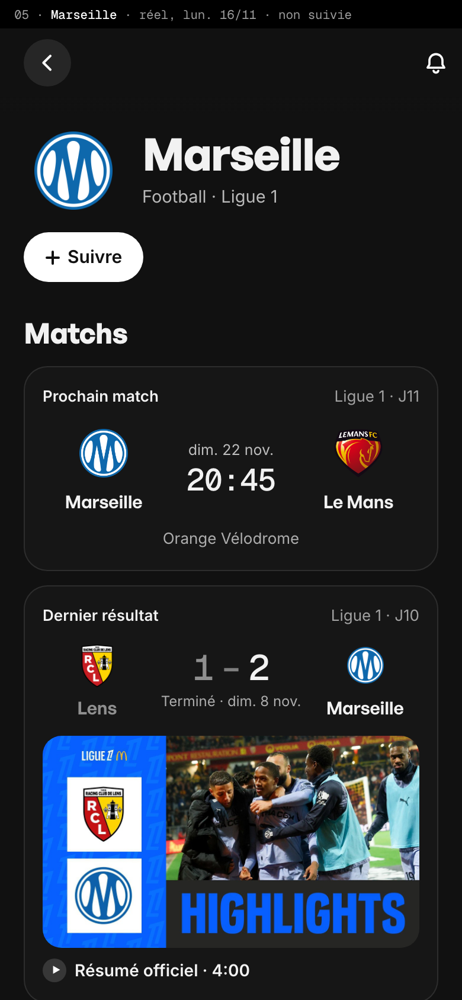
La tête est pleine largeur, sans carte : écusson, nom, « Football · Ligue 1 », bouton blanc « Suivre ». La section « Matchs » montre le prochain match (Marseille – Le Mans), puis le dernier résultat (Lens 1 – 2 Marseille) avec sa vignette officielle. L'essentiel ne répète plus le prochain match.
05-equipe-football-marseille.png

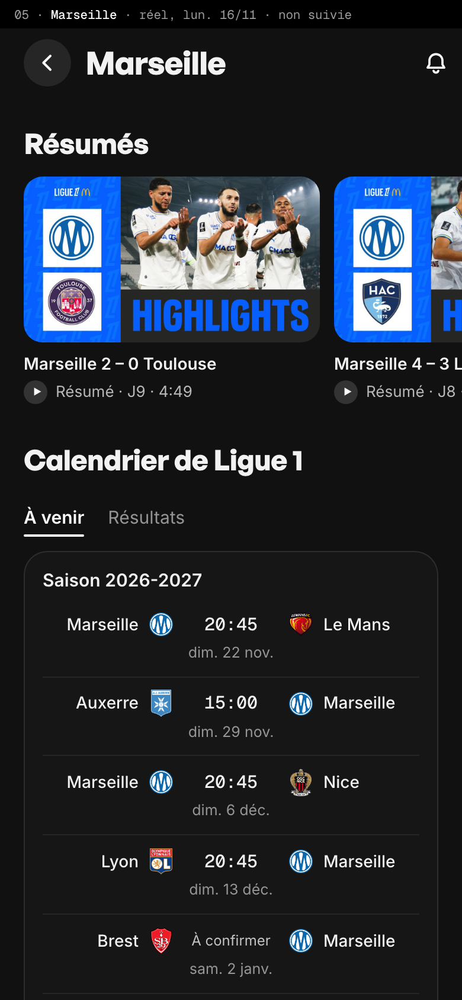
Le nom « Marseille » passe dans l'en-tête au défilement. Résumés J9 à J6, avec la légende Werup (« Marseille 2 – 0 Toulouse »). Le calendrier s'intitule « Calendrier de Ligue 1 », seule compétition en base. Au-delà de 4 semaines, l'heure api-football devient « À confirmer » (Brest – Marseille du 2 janv., Marseille – Lille du 15 janv.).
05-equipe-football-marseille-suite.png

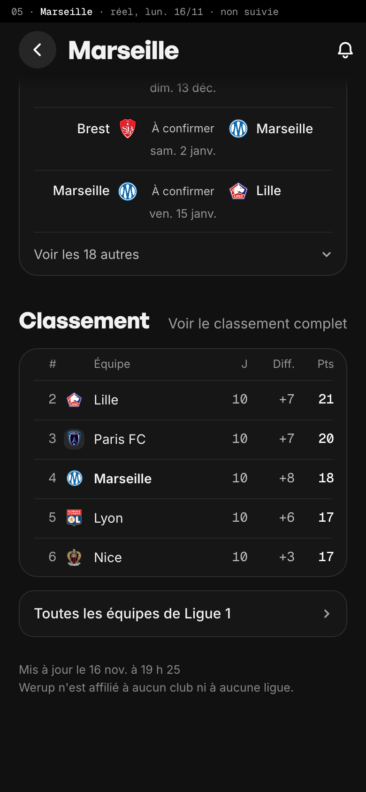
Rangs 2 à 6 réels, Marseille en Inter 600. La grille des 17 clubs, avec ses 17 « Suivre », est remplacée par une seule porte : « Toutes les équipes de Ligue 1 ».
05-equipe-football-marseille-suite-2.png
3 images · faire glisser · toucher une image l'ouvre en grand
D'où viennent ses données
- Calendrier de Marseille en Ligue 1 2026-2027 :
sport_rencontres(24 matchs à venir, 10 résultats). - Extrait du classement (rangs 2 à 6) :
sport_classements. - Résumés J6 à J10 :
video_urlen base, durées lues sur YouTube le 16/11. - Écusson : api-sports 81.
Ses états
- « Aucun match programmé pour l'instant », avec le dernier résultat et sa date
- « Calendrier indisponible pour le moment »
- équipe inconnue ou seulement en compétitions inactives : 404
- sélection hors fenêtre (France football après le 15/11) : même texte, sans rien inventer sur la suite
- une vidéo sans durée connue s'affiche sans durée
- suivie : le bouton devient « Suivie », et la cloche paraît dessous (écran 06)
Ce que l'image a changé par rapport à la spécification
- Tête pleine largeur, sans carte : écusson, nom, « Football · Ligue 1 », bouton blanc « Suivre ».
- Une section « Matchs » : le prochain match, puis le dernier résultat avec sa vignette. « L'essentiel » ne répète plus le prochain match.
- « Calendrier de Ligue 1 » (seule compétition de Marseille en base).
- Au-delà de 4 semaines, l'heure devient « À confirmer » (règle de prudence, point C5).
- La grille de 17 clubs avec « Suivre » devient une seule porte : « Toutes les équipes de Ligue 1 ».
Inspiré de : FotMob (page équipe : vue d'ensemble, matchs, classement). Apple Sports (prochain match et dernier résultat en tête). WSJ (trois points en tête, ici appliqués à nos propres données). OneFootball (« Dernières vidéos » avec la durée). The Guardian (un parcours avant, pendant et après le match).
Spécification d'origine : contenu exact et requêtes SQL
Écrite avant les images. Là où l'image diffère, la liste « Ce que l'image a changé » ci-dessus le dit. Dans ce texte, « question 3 » et « question de couleur » renvoient aux questions G3 et G2 ; « question 4, 6, 8, 11 » aux questions Q de la proposition.
ADRESSE : /sport/football/equipe/marseille. 1. La tête : - aucune photo sous licence : un grand écusson égalisé sur l'obsidienne (api-sports 81, ou sport_equipes.visuel->>'url'), sans fond flouté ; - le nom « Marseille », tel qu'en base. Le nom complet « Olympique de Marseille » reste à poser après vérification ; - la ligne utile « Football · Ligue 1 », déduite des rencontres de la saison ; - le bouton « Suivre » (ou « Suivie »), blanc à texte sombre, visible au premier écran à 390 × 844. 2. L'essentiel : - « 5 victoires de suite en Ligue 1 » ; - « 4e de Ligue 1 · 18 points après 10 journées » ; - « Prochain match : contre Le Mans, dim. 22 nov. à 20:45, Orange Vélodrome ». 3. Le match : BlocMatch au format page. Marseille – Le Mans · dim. 22 nov. · 20:45, puis le dernier résultat, Lens 1 – 2 Marseille · Terminé · dim. 8 nov. · Résumé. Le toucher ouvre la feuille (écran 03). 4. « Résumés » : un rail de 5 vignettes officielles intactes, avec titre et durée : - J10 Lens – Marseille 4:00 (NGFVd9xwnp4) ; - J9 Marseille – Toulouse 4:49 (IOb2PTLG_28) ; - J8 Marseille – Le Havre 5:56 (qqHJqKf9JtE) ; - J7 Angers – Marseille 5:24 (ka8ZwaoLycs) ; - J6 Troyes – Marseille 3:50 (NeMRpHZVRx0). 5. Calendrier, avec OngletsChapitre « À venir · Résultats », 6 lignes puis « Voir les N autres ». - À venir : · Marseille – Le Mans · dim. 22 nov. 20:45 · Auxerre – Marseille · dim. 29 nov. 15:00 · Marseille – Nice · dim. 6 déc. 20:45 · Lyon – Marseille · dim. 13 déc. 20:45 · Brest – Marseille · sam. 2 janv. 17:00 · Marseille – Lille · ven. 15 janv. 20:45 · Voir les 18 autres - Résultats : · Lens 1 – 2 Marseille · Marseille 2 – 0 Toulouse · Marseille 4 – 3 Le Havre · Angers 2 – 5 Marseille · Troyes 0 – 2 Marseille · Marseille 1 – 2 Paris SG · Voir les 4 autres - Une ligne ne nomme sa compétition que si ce n'est pas la Ligue 1. 6. Classement : un extrait de 5 lignes centré sur l'équipe, sa ligne en graisse : 2 Lille 21 · 3 Paris FC 20 · 4 Marseille 18 · 5 Lyon 17 · 6 Nice 17 Puis la porte « Voir le classement complet ». 7. Pas de section « Actualités » : aucune source d'articles football n'est branchée. 8. « Dans la même compétition » : la grille des 17 autres écussons de Ligue 1, chacun avec Suivre. 9. Mentions : fraîcheur et non-affiliation. SQL : -- compétitions de l'équipe select distinct competition_id from sport_rencontres where 'football:marseille' in (domicile_id, exterieur_id) and saison='2026-2027' -- calendrier complet select r.journee, to_char(r.coup_envoi at time zone 'Europe/Paris','Dy DD/MM HH24:MI') ke, r.horaire_confirme, d.nom dom, x.nom ext, r.statut, r.score_domicile, r.score_exterieur, r.lieu, r.video_url from sport_rencontres r join sport_equipes d on d.id=r.domicile_id join sport_equipes x on x.id=r.exterieur_id where r.competition_id='football:ligue-1' and r.saison='2026-2027' and 'football:marseille' in (r.domicile_id, r.exterieur_id) order by r.coup_envoi -- extrait du classement select (l->>'rang')::int rang, l->>'nom' nom, (l->>'points')::int pts from sport_classements c, jsonb_array_elements(c.lignes) l where c.competition_id='football:ligue-1' and c.saison='2026-2027' and (l->>'rang')::int between 2 and 6 order by 1 -- résumés select journee, substring(video_url from 'v=([^&]+)') youtube_id from sport_rencontres where competition_id='football:ligue-1' and saison='2026-2027' and statut='termine' and video_url is not null and 'football:marseille' in (domicile_id, exterieur_id) order by coup_envoi desc limit 5 Les durées et les titres se lisent par l'API YouTube videos.list (SPT-09). Celles écrites ci-dessus ont été lues le 16/11 sur la page de chaque vidéo. ÉTATS : - « Aucun match programmé pour l'instant », avec le dernier résultat et sa date ; - « Calendrier indisponible pour le moment » ; - équipe inconnue ou seulement en compétitions inactives : 404 ; - sélection hors fenêtre (France football après le 15/11) : même texte, sans rien inventer sur la suite ; - une vidéo sans durée connue s'affiche sans durée ; - suivie : le bouton devient « Suivie », et la cloche paraît dessous (écran 06).
06 Choisir ses équipes par écussons, et être prévenu (lié à Mon Werup)
À quoi il sert. Le seul geste de personnalisation : toucher un écusson. Il n'y a pas de questionnaire au démarrage : on ouvre cette feuille depuis /sport (« Choisir mes équipes » ou « Modifier ») et depuis Mon Werup. Le même geste propose la cloche. Les suivis vivent dans Mon Werup.

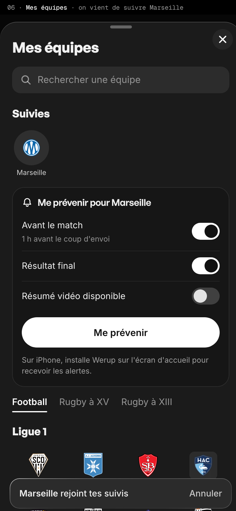
« Me prévenir pour Marseille » monte juste sous « Suivies », sans défiler. Interrupteurs de la charte (avant le match et résultat allumés, résumé éteint). La phrase « Au plus 2 messages par match » est retirée, puisqu'elle contredisait 3 alertes.
06-mes-equipes-choix-ecussons.png

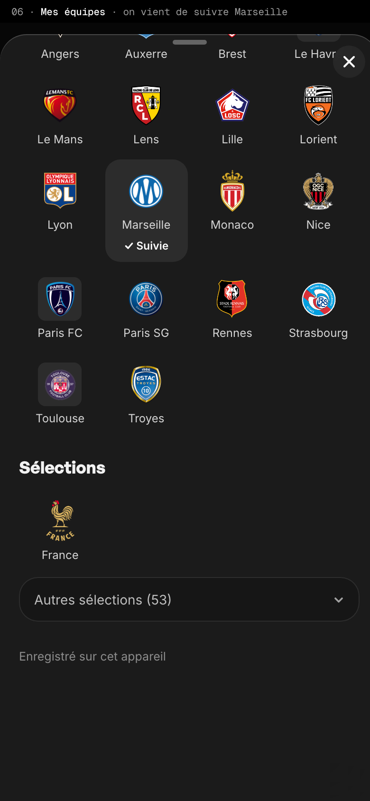
France avec l'emblème de la FFF. « Autres sélections (53) » = 54 sélections distinctes de la Ligue des nations 2026-2027, comptées par requête, moins la France.
06-mes-equipes-choix-ecussons-suite.png

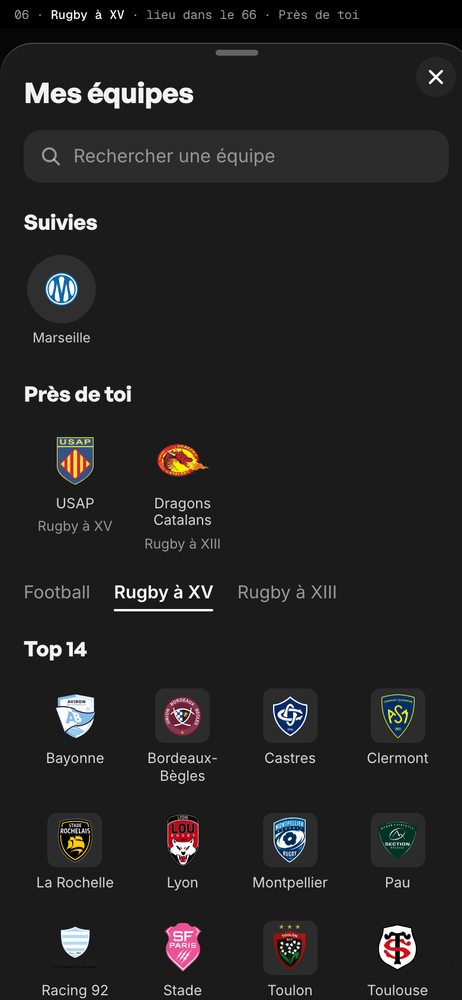
USAP (Rugby à XV) et Dragons Catalans (Rugby à XIII), chacun avec son sport écrit dessous. Les Dragons ne sont plus rangés sous l'onglet XV. Grille du Top 14 à aire égalisée, avec un fond clair pour les écussons sombres mesurés.
06-mes-equipes-choix-ecussons-rugby-a-xv.png

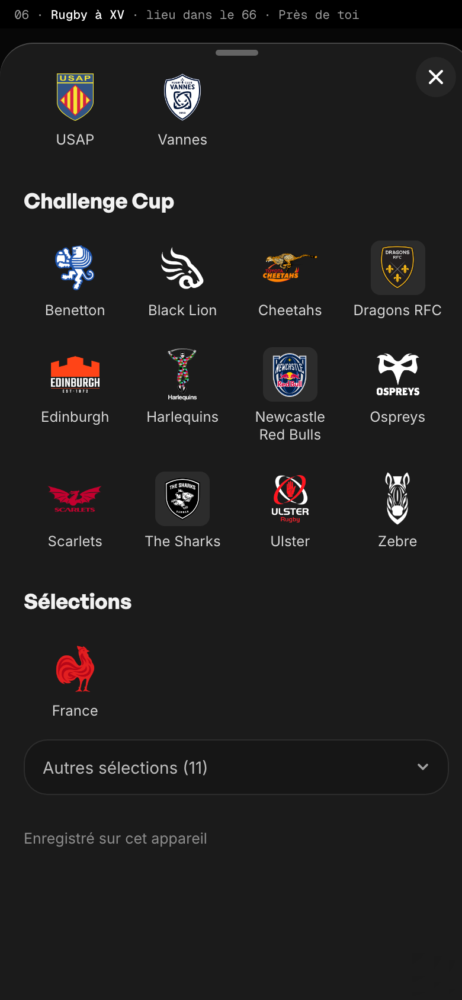
Dragons RFC a maintenant son écusson réel : TheSportsDB 135602, correspondance vérifiée en base, mais l'image n'est pas encore dans sport_equipes.visuel. La note interne est retirée. « Autres sélections (11) » = 12 équipes listées, moins la France.
06-mes-equipes-choix-ecussons-rugby-a-xv-suite.png

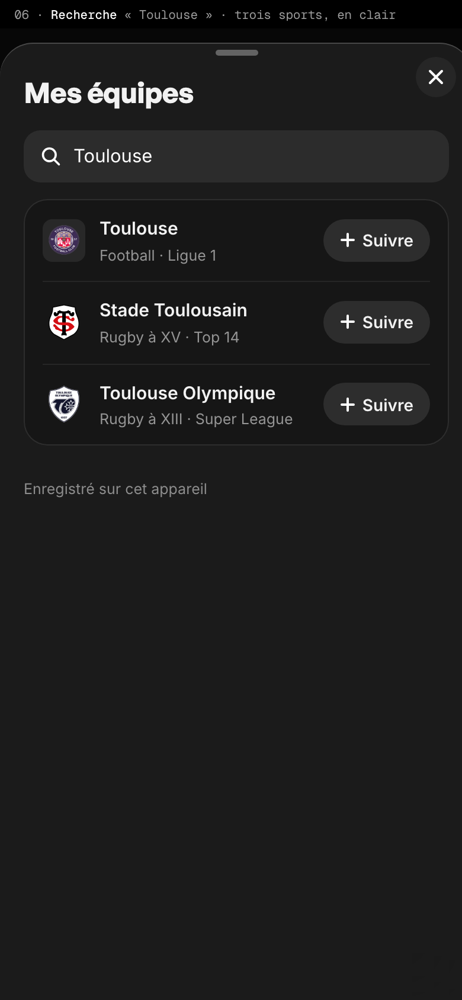
Trois équipes en base. Le sport prend une majuscule, comme les onglets (« Football · Ligue 1 », « Rugby à XV · Top 14 », « Rugby à XIII · Super League »). L'annotation a été retirée de l'écran.
06-mes-equipes-choix-ecussons-recherche.png
5 images · faire glisser · toucher une image l'ouvre en grand
D'où viennent ses données
- Équipes de chaque compétition active, comptées en base : 18 clubs de Ligue 1, 54 sélections de la Ligue des nations, 14 clubs du Top 14, les clubs de la Challenge Cup, 12 sélections de rugby à XV, 14 clubs de Super League.
- Écussons : SVG du dépôt (Top 14), WebP du dépôt (Super League), api-sports (Ligue 1), TheSportsDB (Vannes, sélections, Dragons RFC).
- Recherche « Toulouse » : les 3 équipes présentes en base (football, rugby à XV, rugby à XIII).
- Le cas montré (« on vient de suivre Marseille ») est un exemple de geste, pas une donnée.
Ses états
- vide (rien suivi) : pas de section « Suivies »
- recherche sans résultat : « Aucune équipe trouvée »
- plafond atteint
- permission refusée : la cloche reste visible, avec « Alertes désactivées dans les réglages de l'appareil »
- écusson en échec : emplacement vide
Ce que l'image a changé par rapport à la spécification
- « Me prévenir pour Marseille » monte juste sous « Suivies », visible sans défiler. Les cases deviennent des interrupteurs de la charte.
- La phrase « Au plus 2 messages par match » est retirée : elle contredisait 3 alertes (point C9).
- « Près de toi » passe au-dessus des onglets, avec le sport écrit sous chaque club. Les Dragons ne sont plus rangés sous l'onglet XV.
- Dragons RFC a maintenant son écusson réel (TheSportsDB 135602). La direction (§9) le disait introuvable. L'image n'est pas encore en base.
- Le sport prend une majuscule : « Rugby à XV · Top 14 ».
Inspiré de : Apple Sports (choix par ligue, avec un bouton +). OneFootball (grille de clubs, puis réglages des alertes affichés dès qu'on suit). Flashscore (une cloche par équipe, valable pour tous ses matchs futurs). Sofascore (étoile et cloche séparées). NN/g et WebKit (permission au geste, jamais au chargement). The Guardian (le mot « suivre » rendu explicite).
Spécification d'origine : contenu exact et requêtes SQL
Écrite avant les images. Là où l'image diffère, la liste « Ce que l'image a changé » ci-dessus le dit. Dans ce texte, « question 3 » et « question de couleur » renvoient aux questions G3 et G2 ; « question 4, 6, 8, 11 » aux questions Q de la proposition.
CONTENANT : PulseModal de nature « choisir » : verre fumé, contraste du texte de 4,5:1, croix et glissement pour fermer. Elle ne s'ouvre jamais depuis l'accueil.
1. Une recherche par nom, en tête. « Toulouse » montre le Toulouse FC, le Stade Toulousain et le Toulouse Olympique, chacun avec son sport écrit en toutes lettres (football, rugby à XV, rugby à XIII).
2. « Suivies », s'il y en a au moins une : une rangée de ronds-écussons (le rond veut dire « suivie », D-1714). Toucher retire l'équipe, avec un toast « Annuler ».
3. Les onglets « Football · Rugby à XV · Rugby à XIII », football d'abord.
4. « Près de toi », seulement si le lieu choisi est dans un territoire vérifié. Aujourd'hui, le 66 : USAP et Dragons Catalans. Après la question 4 : les clubs français dont le stade est dans le département du lieu.
5. Une sous-section par compétition active, avec une grille de 4 écussons par rangée à 390 px, le nom dessous et une cible de 44 px au moins. Toucher suit ou ne suit plus, sur place : une coche ET le mot « Suivie », jamais la couleur seule.
- Football › Ligue 1 : 18 clubs. Ce sont les seuls clubs de football à suivre : la Ligue des nations n'en compte aucun.
- Football › Sélections : France en premier, puis « Autres sélections (53) », replié. Noms en français.
- Rugby à XV › Top 14 : 14 clubs, avec les SVG locaux de src/assets/clubs, et Vannes par l'URL du fournisseur, faute de fichier local.
- Rugby à XV › Challenge Cup : 12 clubs hors Top 14 (Benetton, Black Lion, Cheetahs, Dragons RFC, Edinburgh, Harlequins, Newcastle Red Bulls, Ospreys, Scarlets, The Sharks, Ulster, Zebre). Dragons RFC n'a pas d'écusson : la porte d'activation bloque la compétition tant que ce n'est pas réglé.
- Rugby à XV › Sélections : France en premier, puis 11 autres, repliées.
- Rugby à XIII › Super League : 14 clubs, avec les WebP de public/clubs/super-league. Correspondances de noms de fichier : xiii:hull-kr = hull-kingston-rovers.webp ; xiii:york-knights = york-city-knights.webp.
6. Après le premier suivi, une rangée paraît sous la grille. Le cas réel montré : on vient de suivre Marseille.
« Me prévenir pour Marseille »
☑ Avant le match (1 h avant)
☑ Résultat final
☐ Résumé vidéo disponible
Une phrase : « Au plus 2 messages par match. »
Un bouton : « Me prévenir ». Le toucher ouvre la fenêtre NATIVE de l'appareil. Aucune fenêtre maison.
Sur iPhone, hors application installée, une ligne : « Sur iPhone, installe Werup sur l'écran d'accueil pour recevoir les alertes. »
Pas d'interrupteur « Buts » avant la qualification du flux, et pas de « bientôt ».
7. Pied de la feuille : « Enregistré sur cet appareil ». Quand les comptes seront ouverts : « Retrouver mes équipes sur un autre appareil », qui mène à Mon Werup (écran 10). Ni carte ni mur.
RÈGLES :
- aucun ordre manuel ;
- 30 équipes au plus : au-delà, un toast refuse, et rien n'est retiré en silence ;
- ne rien choisir reste valide.
STOCKAGE :
- un repère { type: equipe, id } dans le magasin pulse:mon-pulse:reperes:v1 (src/lib/mon-pulse/reperes.ts) ;
- migration unique depuis l'univers pulse:univers (src/lib/mon-pulse/univers.ts : usap devient xv:usap, dragons devient xiii:catalans-dragons) ;
- test de non-perte sur le vrai magasin ;
- abonnement push par appareil : src/lib/notifications/push-appareil.ts.
SQL (les équipes de chaque compétition active, saison courante, et la source de leur écusson) :
with saisons(competition_id, saison, ordre) as (values ('football:ligue-1','2026-2027',1),('football:ligue-des-nations','2026-2027',2),('xv:top-14','2026-2027',3),('xv:challenge-cup','2026-2027',4),('xv:nations-championship','2026',5),('xiii:super-league','2026',6)), eq as (select distinct s.ordre, s.competition_id, unnest(array[r.domicile_id, r.exterieur_id]) eid from sport_rencontres r join saisons s using (competition_id, saison)) select eq.ordre, eq.competition_id, e.id, coalesce(e.nom_court, e.nom) nom, e.sport, e.type, e.pays, e.visuel->>'url' url_fournisseur, c.id_fournisseur api_football from eq join sport_equipes e on e.id=eq.eid left join sport_correspondances c on c.id_interne=e.id and c.fournisseur='api-football' and c.type_entite='equipe' order by eq.ordre, (e.id in ('football:france','xv:france')) desc, coalesce(e.nom_court, e.nom)
Résolution de l'écusson : fichier local s'il existe, sinon url_fournisseur, sinon https://media.api-sports.io/football/teams/<api_football>.png. Sinon, l'emplacement reste vide et l'anomalie est consignée.
ÉTATS :
- vide (rien suivi) : pas de section « Suivies » ;
- recherche sans résultat : « Aucune équipe trouvée » ;
- plafond atteint ;
- permission refusée : la cloche reste visible, avec « Alertes désactivées dans les réglages de l'appareil » ;
- écusson en échec : emplacement vide.07 Page d'équipe de rugby à XV : l'USAP, sur le gabarit commun
À quoi il sert. Montrer que le gabarit national tient pour un club de rugby, avec ses spécificités : deux compétitions, pas de classement Top 14, une chaîne vidéo du club, des articles de presse locale. L'adresse /rugby/usap est conservée.

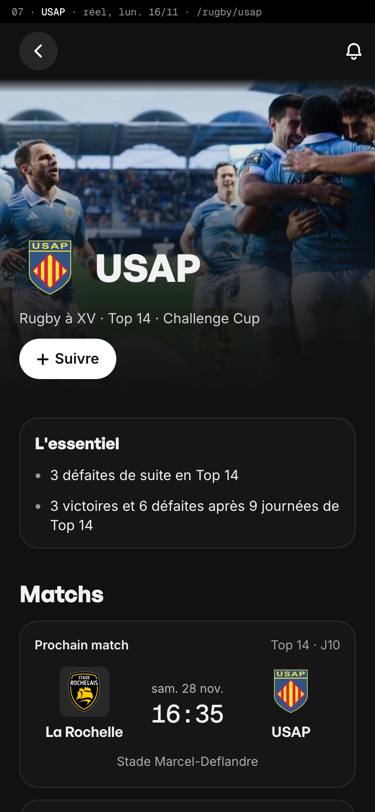
Photo du dépôt (usap-rugby.webp), voile renforcé jusqu'à 92 % sous le texte. L'écusson est à côté du nom, hors des visages. L'essentiel : 3 défaites de suite ; 3 victoires et 6 défaites après 9 journées de Top 14 (recompté J1 à J9). Le prochain match n'est plus répété.
07-equipe-xv-usap.png

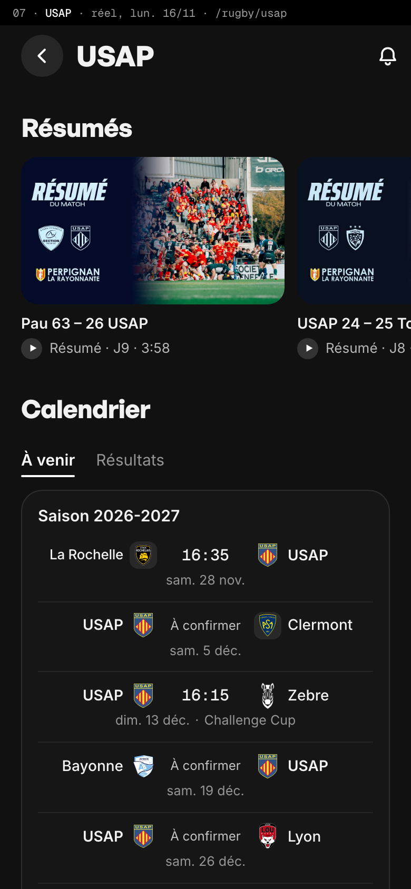
Même carte vidéo que partout : « Pau 63 – 26 USAP · J9 · 3:58 » et « USAP 24 – 25 Toulon · J8 · 4:20 ». Le titre brut du club (« Résume … ») n'est plus montré. « À confirmer » tient sur une ligne. « Voir les 14 autres » = 20 matchs à venir comptés, moins 6.
07-equipe-xv-usap-suite.png

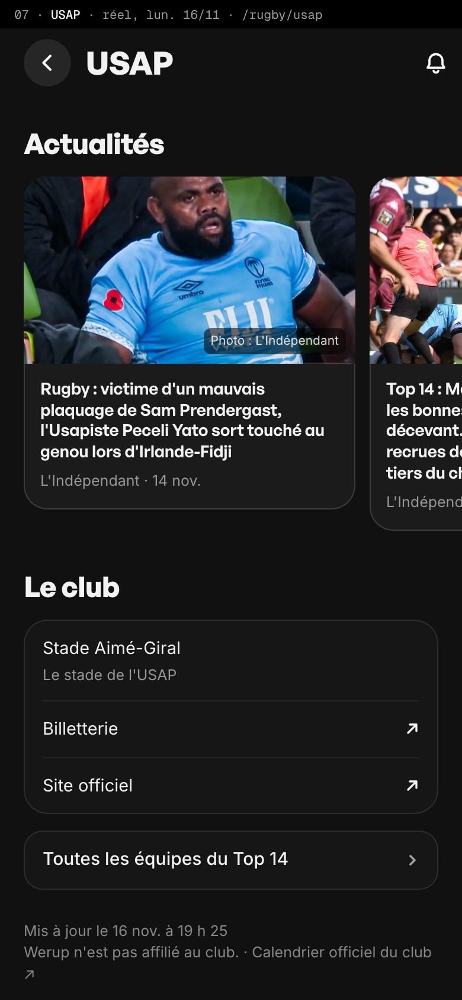
Les 3 derniers articles d'usap_news, avec le titre exact EN ENTIER (plus de line-clamp ; la taille suit la longueur), la source et la date. Pas de chapô sur la carte. Photo de l'éditeur, créditée (sous réserve de la question 3). « Toutes les équipes du Top 14 » remplace la grille avec « Suivre ».
07-equipe-xv-usap-suite-2.png

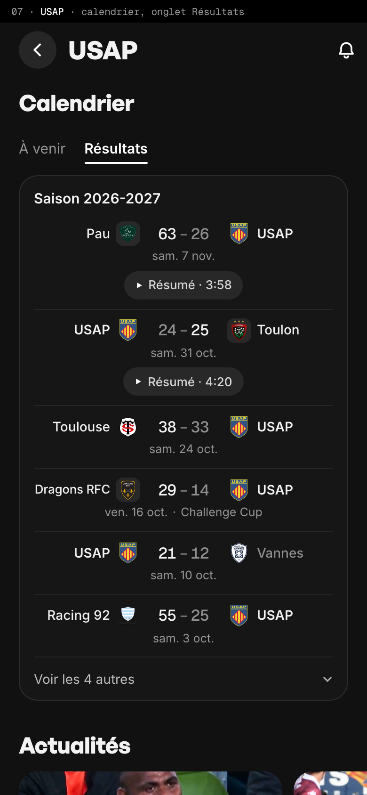
Les 6 derniers résultats réels, dont Dragons RFC 29 – 14 USAP avec son écusson. La puce « Résumé » apparaît seulement sur les 2 résumés du club relus (J8, J9). Le nom de l'USAP reste blanc dans la défaite, seul le score s'atténue. « Voir les 4 autres » = 10 résultats, moins 6.
07-equipe-xv-usap-resultats.png
4 images · faire glisser · toucher une image l'ouvre en grand
D'où viennent ses données
- Matchs de l'USAP 2026-2027 (Top 14 et Challenge Cup) :
sport_rencontres(20 à venir, 10 résultats). « 3 victoires et 6 défaites après 9 journées » est recompté de J1 à J9. - Résumés : table
usap_videos(chaîne officielle du club), durées lues sur YouTube. - Actualités : table
usap_news(L'Indépendant), titre exact, date et image de l'éditeur. - Photo de tête : fichier du dépôt
usap-rugby.webp, déjà utilisé par la page actuelle. Écusson :src/assets/clubs/usap.svg.
Ses états
- source d'actualités en panne : la section se tait
- aucun résumé : le rail est absent
- même gabarit pour /rugby/dragons-catalans : signature « Allez papa d'amour ♥ Alma » intacte dans le complément (question Q6), actualités du site du club filtrées par catégorie (question Q11), « Aucun match programmé pour l'instant » jusqu'à la saison 2027, dernier résultat Wigan 50 – 12 Dragons Catalans (11 sept.), résumé « Highlights | Wigan Warriors v Catalans Dragons » de 11:00
Ce que l'image a changé par rapport à la spécification
- Voile renforcé jusqu'à 92 % sous le texte. L'écusson est à côté du nom, loin des visages.
- Pas de ligne de rang : il n'y a pas de classement Top 14 fiable.
- Les résumés utilisent la carte vidéo commune (« Pau 63 – 26 USAP · J9 · 3:58 »). Le titre brut du club n'est plus montré (point C2).
- Articles : titre exact en entier, sans chapô sur la carte. Le chapô est dans la feuille de lecture (écran 08).
- « Toutes les équipes du Top 14 » remplace la grille avec « Suivre ».
- Dans une défaite, le nom de l'USAP reste blanc ; seul le score s'atténue.
Inspiré de : Rugbyrama et Midi Olympique (le fil réglé sur les clubs suivis, mais sans publicité qui masque et avec des photos qu'on peut agrandir). LNR (Calendrier et résultats). Application NRL (la vue « mon club » que les supporters défendent : /rugby/usap doit survivre à la refonte). FotMob (gabarit d'équipe).
Spécification d'origine : contenu exact et requêtes SQL
Écrite avant les images. Là où l'image diffère, la liste « Ce que l'image a changé » ci-dessus le dit. Dans ce texte, « question 3 » et « question de couleur » renvoient aux questions G3 et G2 ; « question 4, 6, 8, 11 » aux questions Q de la proposition.
ADRESSE : /rugby/usap (canonique). /sport/rugby-a-xv/equipe/usap y redirige en 301. 1. La tête : - la photo réelle du club déjà sous licence, celle qu'utilise la page actuelle, avec voile-texte et data-sous-entete=image. Sinon, l'écusson src/assets/clubs/usap.svg en grand ; - le nom « USAP » ; la ligne utile « Rugby à XV · Top 14 · Challenge Cup européenne » ; - le bouton Suivre. 2. L'essentiel : - « 3 défaites de suite en Top 14 » (J7 Toulouse 38 – 33, J8 USAP 24 – 25 Toulon, J9 Pau 63 – 26). C'est un fait. Aucun adjectif ; - « Prochain match : à La Rochelle, sam. 28 nov. à 16:35, Stade Marcel-Deflandre ». Aucune ligne de rang : il n'y a pas de classement Top 14 (D-2114). 3. Le match : BlocMatch au format page. La Rochelle – USAP · Top 14 · J10 · sam. 28 nov. · 16:35, puis le dernier résultat, Pau 63 – 26 USAP · Terminé · sam. 7 nov. 4. « Résumés » : uniquement des vidéos de la chaîne USAP OFFICIEL dont le titre commence par « Résum ». Titres intacts, faute de frappe d'origine comprise : - « Résume Section Paloise / USAP - J9 TOP 14 » · 3:58 (GkHJiwbS9I0) ; - « Résumé du match USAP / RCT - J8 TOP 14 » · 4:20 (CG5zAArb4lg). Les conférences de presse sont écartées : celle d'après USAP – Toulon dure 14:22. 5. Calendrier, avec « À venir · Résultats ». - À venir : · La Rochelle – USAP · sam. 28 nov. 16:35 · USAP – Clermont · sam. 5 déc. · Heure à confirmer (horaire_confirme faux : cas réel du modificateur D-1716) · USAP – Zebre · Challenge Cup · dim. 13 déc. 16:15 · Bayonne – USAP · sam. 19 déc. · Heure à confirmer · USAP – Lyon · sam. 26 déc. · Heure à confirmer · Bordeaux-Bègles – USAP · sam. 2 janv. · Heure à confirmer · Voir les autres - Résultats : · Pau 63 – 26 USAP · USAP 24 – 25 Toulon · Toulouse 38 – 33 USAP · Dragons RFC 29 – 14 USAP · Challenge Cup · USAP 21 – 12 Vannes · Racing 92 55 – 25 USAP · Voir les 4 autres 6. Pas de section « Classement ». 7. Actualités (source réelle : L'Indépendant, table usap_news). 3 cartes courtes, chacune avec l'image de l'éditeur (sous réserve de la question 3), le titre exact, « L'Indépendant · <âge> » et le chapô (200 caractères au plus) : - « Rugby : victime d'un mauvais plaquage de Sam Prendergast, l'Usapiste Peceli Yato sort touché au genou lors d'Irlande-Fidji » · 14 nov. ; - « Top 14 : Maëlan Rabut et José Madeira les bonnes surprises, Sevu Reece décevant... Quel est le bilan des recrues de l'USAP après le premier tiers du championnat ? » · 12 nov. ; - « Top 14 – USAP : opéré de la cheville, l'ailier Maxim Granell va manquer plusieurs mois de compétition » · 12 nov. Toucher ouvre la feuille de lecture (écran 08). 8. Complément du club, seulement avec des faits vérifiés : Stade Aimé-Giral (champ lieu), la billetterie et le site officiel (jamais en premier geste). 9. « Dans la même compétition » : les 13 autres écussons du Top 14. 10. Mentions : fraîcheur ; « Werup n'est pas affilié au club » ; le lien vers le calendrier officiel du club (D-2122). SQL : select r.competition_id, r.journee, to_char(r.coup_envoi at time zone 'Europe/Paris','Dy DD/MM HH24:MI') ke, r.horaire_confirme, coalesce(d.nom_court,d.nom) dom, coalesce(x.nom_court,x.nom) ext, r.statut, r.score_domicile, r.score_exterieur, r.lieu from sport_rencontres r join sport_equipes d on d.id=r.domicile_id join sport_equipes x on x.id=r.exterieur_id where 'xv:usap' in (r.domicile_id, r.exterieur_id) and r.saison='2026-2027' order by r.coup_envoi select youtube_id, title, pub_date from usap_videos where title ~* '^r[ée]sum' order by pub_date desc limit 4 select title, source, link, pub_date, excerpt, image_url from usap_news order by pub_date desc limit 3 ÉTATS : - source d'actualités en panne : la section se tait ; - aucun résumé : le rail est absent ; - même gabarit pour /rugby/dragons-catalans : signature « Allez papa d'amour ♥ Alma » intacte dans le complément (question 6), actualités du site du club filtrées par catégorie (question 11), « Aucun match programmé pour l'instant » jusqu'à la saison 2027, dernier résultat Wigan 50 – 12 Dragons Catalans (11 sept.), résumé « Highlights | Wigan Warriors v Catalans Dragons » de 11:00.
08 Lire un article : court d'abord dans Werup, puis l'article entier chez l'éditeur (vraie actualité USAP)
À quoi il sert. Répondre à la demande du fondateur, « les meilleurs articles, en version courte d'abord, avec la possibilité d'ouvrir l'article entier », sans réécrire l'article de personne. Le court, c'est le chapô de l'éditeur (D-247) plus le contexte que Werup tient de ses données. L'entier, c'est la page de l'éditeur.

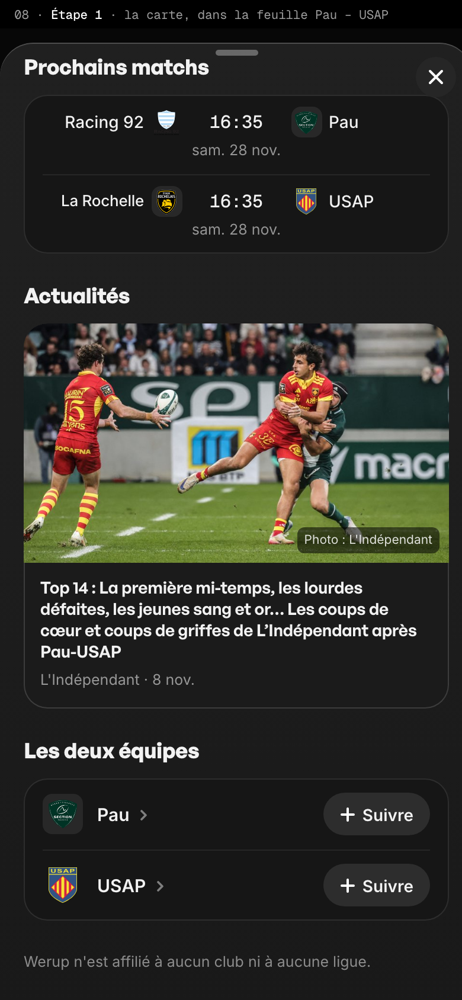
La section s'appelle « Actualités » partout. Le titre exact est entier. Les prochains matchs sont en LigneMatch : Racing 92 – Pau et La Rochelle – USAP, sam. 28/11 16:35, confirmés en base.
08-article-court-puis-complet-etape-1-carte.png

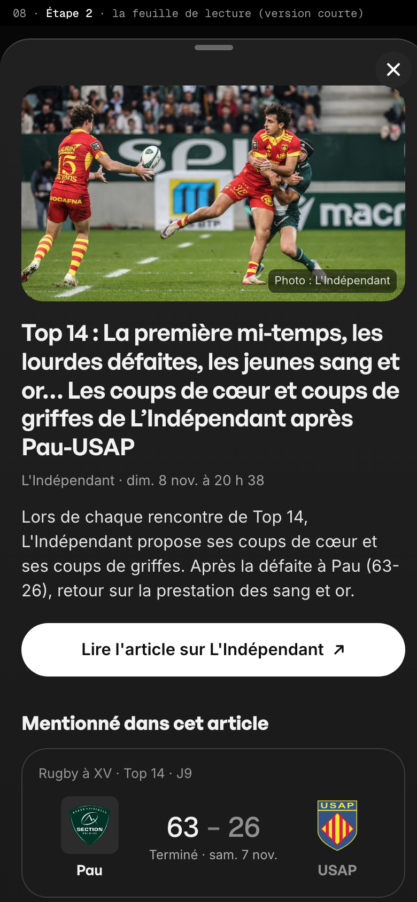
Photo de L'Indépendant créditée, titre exact, source et date, chapô de syndication. Le bouton « Lire l'article sur L'Indépendant ↗ » est placé juste sous le chapô, au premier écran.
08-article-court-puis-complet-etape-2-lecture.png

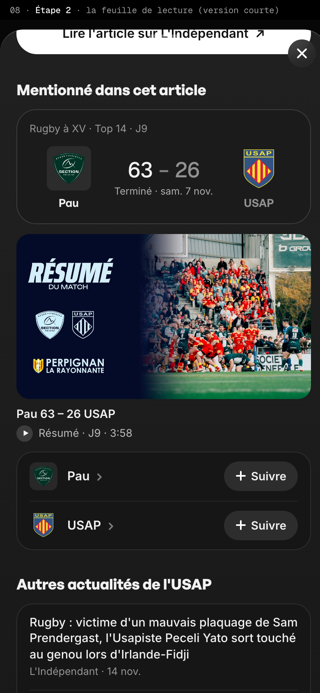
La carte du match (« Rugby à XV · Top 14 · J9 »), le résumé du club (GkHJiwbS9I0) en carte vidéo unique, les deux équipes, puis deux autres actualités d'usap_news.
08-article-court-puis-complet-etape-2-lecture-suite.png

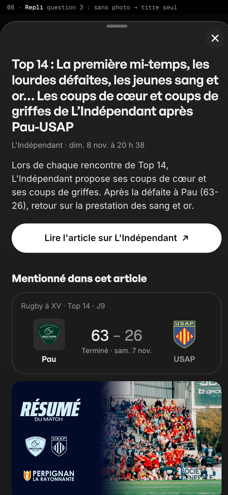
Le fichier garde son nom, mais l'écusson en tenant-lieu est abandonné, comme le demandaient les deux critiques. La feuille s'ouvre sur le titre exact. La seule image est la vignette officielle du résumé, dans « Mentionné ».
08-article-court-puis-complet-variante-ecusson.png
4 images · faire glisser · toucher une image l'ouvre en grand
D'où viennent ses données
- Article réel de
usap_news: L'Indépendant, dim. 08/11 à 20 h 38 (titre, chapô, image et lien de l'éditeur). - Match mentionné : Pau 63 – 26 USAP, Top 14 J9 (
sport_rencontres). Résumé du club :GkHJiwbS9I0, 3:58. - Second exemple réel : « La réserve s'impose face à Albi », site des Dragons Catalans (WordPress REST), 16/11 à 10 h 52.
Ses états
- sans image : la carte ne garde que le titre, sans gabarit à trou
- chapô de moins de 40 caractères utiles : pas de chapô
- aucun match reconnu : pas de section « Mentionné »
- source indisponible : la section Actualités se tait
- article payant signalé par le flux : la mention « Réservé aux abonnés » s'affiche, seulement si le flux le dit
- football : l'écran n'existe pas tant qu'aucune source n'est branchée
- variante de la question G3 : remplacée dans les images par le titre seul, sans photo ni écusson
Ce que l'image a changé par rapport à la spécification
- La section s'appelle « Actualités » partout.
- « Lire l'article sur L'Indépendant ↗ » est juste sous le chapô, au premier écran (la spécification le mettait après « Mentionné »).
- Les prochains matchs sont des lignes de match : Racing 92 – Pau et La Rochelle – USAP (sam. 28/11 16:35).
- Le repli sans droit sur la photo (question G3) montre le titre seul. L'écusson en tenant-lieu est abandonné. Le fichier garde son ancien nom « variante-ecusson ».
Inspiré de : OneFootball (source, logo et âge sur chaque actualité ; « Mentionné dans cet article »). Apple Sports et Apple News (le résultat dans l'application, la lecture chez l'éditeur). Google en France depuis 2019 (titre et lien sans accord). NN/g (pyramide inversée : l'essentiel d'abord). BBC « At a glance » et WSJ (le court relu, ici remplacé par les données de Werup).
Spécification d'origine : contenu exact et requêtes SQL
Écrite avant les images. Là où l'image diffère, la liste « Ce que l'image a changé » ci-dessus le dit. Dans ce texte, « question 3 » et « question de couleur » renvoient aux questions G3 et G2 ; « question 4, 6, 8, 11 » aux questions Q de la proposition.
ARTICLE RÉEL, table usap_news : - titre : « Top 14 : La première mi-temps, les lourdes défaites, les jeunes sang et or… Les coups de cœur et coups de griffes de L'Indépendant après Pau-USAP » ; - source : L'Indépendant ; publié le dim. 8 nov. 2026 à 20 h 38 ; - chapô : « Lors de chaque rencontre de Top 14, L'Indépendant propose ses coups de cœur et ses coups de griffes. Après la défaite à Pau (63-26), retour sur la prestation des sang et or. » ; - image : images.lindependant.fr/…/6af0bf6578e9fd9b5a069eb2/large/image.jpg ; - lien : https://www.lindependant.fr/2026/11/08/top-14-la-premiere-mi-temps-les-lourdes-defaites-les-jeunes-sang-et-or-les-coups-de-coeur-et-coups-de-griffes-de-lindependant-apres-pau-usap-13642828.php ÉTAPE 1, LA CARTE (dans la page USAP, ou dans la feuille du match Pau – USAP) : surface-raised. L'image en 16:9 en haut, avec la mention « Photo : L'Indépendant » ; dessous, le titre exact sur 3 lignes au plus, jamais tronqué au milieu d'un mot ; puis « L'Indépendant · 8 nov. ». ÉTAPE 2, LA FEUILLE DE LECTURE (court), PulseModal de nature « lire » : 1. L'image, plus grande, avec son crédit. Elle s'agrandit au moins deux fois au toucher. 2. Le titre exact. 3. « L'Indépendant · dim. 8 nov. à 20 h 38 ». 4. Le chapô de syndication, tel que l'éditeur le publie, recoupé sur un mot et terminé par une ellipse s'il dépasse 200 caractères (resumerActu, src/lib/resume-actu.ts). 5. « Mentionné dans cet article », déduit des données : le titre contient « Pau » et « USAP », et la publication tombe moins de 72 h après le coup d'envoi. - La carte du match : Pau 63 – 26 USAP · Top 14 · J9 · Terminé · sam. 7 nov. Le toucher ouvre la feuille de match. - Le résumé officiel du club : « Résume Section Paloise / USAP - J9 TOP 14 » · 3:58. La vignette est intacte, le lecteur se monte au toucher. - Les deux équipes, avec Suivre. 6. Le bouton principal, blanc à texte sombre : « Lire l'article sur L'Indépendant ». 7. « Autres actualités de l'USAP » : 2 lignes, titre, source et âge. ÉTAPE 3, L'ARTICLE ENTIER : la page de l'éditeur, ouverte telle quelle, paywall et publicité compris. Dans l'app iPhone, c'est son navigateur intégré (comportement à vérifier avec la session iPhone) ; sur le web, un nouvel onglet. Le retour ramène à la feuille de lecture. Werup n'affiche jamais le corps de l'article : contentHtml reste null partout. SECOND EXEMPLE RÉEL, contenu officiel d'un club, catégorie sportive : « La réserve s'impose face à Albi », catalansdragons.com/actualites/la-reserve-simpose-face-a-albi/, 16 nov. 2026 à 10 h 52 (WordPress REST). Contre-exemple filtré, même jour, catégorie 19 : « Le menu de la semaine à la Brasserie ». SQL : select title, source, link, pub_date at time zone 'Europe/Paris' pub, excerpt, image_url from usap_news where link like '%pau-usap-13642828.php' -- le match mentionné select r.* from sport_rencontres r where r.competition_id='xv:top-14' and r.saison='2026-2027' and r.domicile_id='xv:section-paloise' and r.exterieur_id='xv:usap' -- le résumé du club select youtube_id, title from usap_videos where title ilike '%Paloise%' and title ~* '^r[ée]sum' ÉTATS : - sans image : la carte ne garde que le titre, sans gabarit à trou ; - chapô de moins de 40 caractères utiles : pas de chapô ; - aucun match reconnu : pas de section « Mentionné » ; - source indisponible : la section Actualités se tait ; - article payant signalé par le flux : la mention « Réservé aux abonnés » s'affiche, seulement si le flux le dit ; - football : l'écran n'existe pas tant qu'aucune source n'est branchée ; - variante à montrer à Geoffrey (question 3) : la même carte et la même feuille avec l'écusson de l'USAP à la place de la photo de presse. INTERDITS : résumé par IA, titre réécrit, extrait du corps, autre photo que celle de l'éditeur, photo de joueur hors de l'article.
09 Page de compétition de rugby à XIII : la Super League, hors saison
À quoi il sert. Montrer qu'une compétition en intersaison reste belle et honnête : classement final réel, phases finales avec résumés, équipes à suivre, sans « Saison terminée » ni promesse sur 2027. C'est aussi la page qui accueillera la NRL sur le même gabarit.

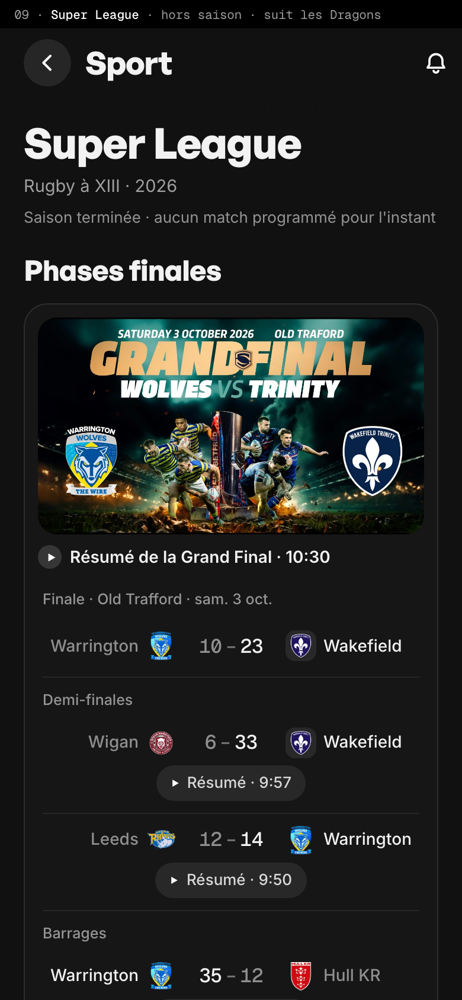
Plus d'onglets hors saison : les sections sont empilées. La vignette de la Grand Final porte une légende unique, « Résumé de la Grand Final · 10:30 ». La ligne de la finale n'a plus de puce de durée. Les durées des barrages sont maintenant lues : 10:34 et 10:42.
09-competition-super-league.png

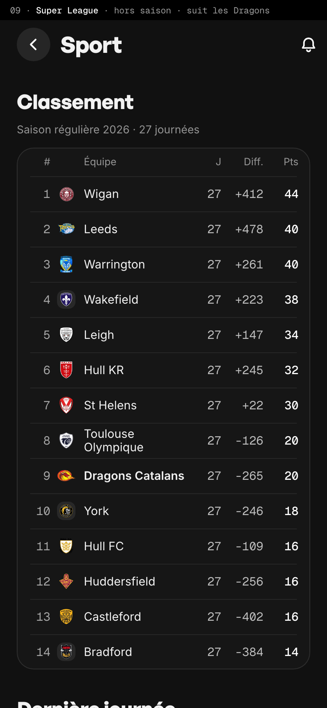
Les 14 lignes de sport_classements. Les Dragons Catalans sont en Inter 600. Le nom s'écrit « Toulouse Olympique » en entier. Aucune zone : pas de règlement sourcé.
09-competition-super-league-suite.png

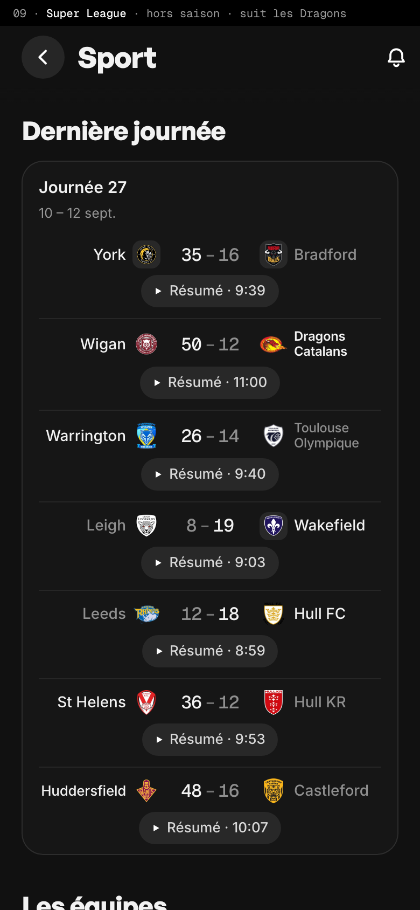
Les 7 rencontres de la J27 avec leurs 7 durées réelles, lues le 16/11 au soir. Dans Wigan 50 – 12 Dragons, le nom des Dragons reste blanc et seul le score s'atténue. La grille ne sert qu'à la navigation.
09-competition-super-league-suite-2.png
3 images · faire glisser · toucher une image l'ouvre en grand
D'où viennent ses données
- Classement 2026 :
sport_classements, calculé, contre-épreuve sans écart avec le classement officiel. - Phases finales et journée 27 :
sport_rencontres. Durées des résumés lues sur YouTube le 16/11 (Grand Final 10:30, barrages 10:34 et 10:42, J27). - Écussons : WebP du dépôt (
public/clubs/super-league). - Saison 2027 : absente en base (la source répondait
events: nullle 16/11).
Ses états
- en saison : « À venir » par défaut et la ligne d'état « Journée N · dates »
- vidéos de plus de 8 min : affichées avec leur durée, sans lecture automatique (les highlights officiels de Super League durent 10 à 11 min ; c'est le seul format officiel vérifié)
- NRL (inactive) : le même gabarit, invisible tant que la saison 2027 n'est pas en base (D-2123) ; ses matchs tombent entre 3 h et 12 h, heure de Paris
- nom sans ambiguïté : « Challenge Cup » de XIII (RFL) distincte de la « Challenge Cup européenne » de XV
Ce que l'image a changé par rapport à la spécification
- Hors saison, plus d'onglets : les sections sont empilées.
- La vignette de la Grand Final porte une légende unique : « Résumé de la Grand Final · 10:30 ».
- « Toulouse Olympique » est écrit en entier (le nom court en base est « Toulouse O. »).
- Dans Wigan 50 – 12 Dragons, le nom des Dragons reste blanc ; seul le score s'atténue.
Inspiré de : Application NRL (Ladder, Draw, Match Centre). Super League avec ECAL (calendrier dans l'agenda, en piste pour plus tard). LNR (classement lisible). Apple Sports (une ligue hors saison se réduit au lieu de mentir).
Spécification d'origine : contenu exact et requêtes SQL
Écrite avant les images. Là où l'image diffère, la liste « Ce que l'image a changé » ci-dessus le dit. Dans ce texte, « question 3 » et « question de couleur » renvoient aux questions G3 et G2 ; « question 4, 6, 8, 11 » aux questions Q de la proposition.
ADRESSE : /sport/rugby-a-xiii/super-league. 1. Ouverture : « Super League », avec la ligne utile « Rugby à XIII · 2026 ». 2. Hors saison, aucun match à 7 jours : le classement passe devant et l'onglet Résultats s'ouvre par défaut. Une ligne d'état : « Aucun match programmé pour l'instant ». La saison 2027 n'est pas en base : TheSportsDB répondait events: null le 16/11. 3. « Phases finales » : un bloc surface-flow, chaque ligne avec « Résumé ». - Finale · Old Trafford · sam. 3 oct. : Warrington 10 – 23 Wakefield · Résumé 10:30 (« Grand Final Highlights | Warrington Wolves v Wakefield Trinity », 32apVF-fk64). - Demi-finales : Wigan 6 – 33 Wakefield · Leeds 12 – 14 Warrington. - Barrages : Warrington 35 – 12 Hull KR · Wakefield 26 – 16 Leigh. 4. Classement de la saison régulière 2026 (méthode : calcul ; contre-épreuve : aucun écart avec le classement officiel). Colonnes : rang, écusson, nom, J, diff., Pts. Les 14 lignes réelles : 1 Wigan 27 +412 44 · 2 Leeds 27 +478 40 · 3 Warrington 27 +261 40 · 4 Wakefield 27 +223 38 · 5 Leigh 27 +147 34 · 6 Hull KR 27 +245 32 · 7 St Helens 27 +22 30 · 8 Toulouse O. 27 -126 20 · 9 Dragons Catalans 27 -265 20 · 10 York 27 -246 18 · 11 Hull FC 27 -109 16 · 12 Huddersfield 27 -256 16 · 13 Castleford 27 -402 16 · 14 Bradford 27 -384 14. Les équipes suivies sont en graisse. Aucune zone : la règle des 6 premiers en play-offs ne vient que d'un article de presse, pas d'un règlement relu. 5. Résultats : « Journée 27 · 10 – 12 sept. » : · York 35 – 16 Bradford · Wigan 50 – 12 Dragons Catalans · Résumé 11:00 · Warrington 26 – 14 Toulouse O. · Leigh 8 – 19 Wakefield · Leeds 12 – 18 Hull FC · St Helens 36 – 12 Hull KR · Huddersfield 48 – 16 Castleford 6. « Les équipes » : grille de 14 écussons locaux (public/clubs/super-league/*.webp). Dragons Catalans et Toulouse O., les deux clubs français, ne passent devant que s'ils sont suivis, ou si le lieu est dans leur territoire. 7. Mentions. SQL : select (l->>'rang')::int rang, coalesce(e.nom_court, l->>'nom') nom, (l->>'joues')::int j, (l->>'difference')::int diff, (l->>'points')::int pts, c.methode, c.controle from sport_classements c, jsonb_array_elements(c.lignes) l left join sport_equipes e on e.id=l->>'equipeId' where c.competition_id='xiii:super-league' and c.saison='2026' order by 1 select r.phase, r.tour, r.journee, to_char(r.coup_envoi at time zone 'Europe/Paris','Dy DD/MM HH24:MI') ke, coalesce(d.nom_court,d.nom) dom, coalesce(x.nom_court,x.nom) ext, r.score_domicile, r.score_exterieur, r.lieu, r.video_url from sport_rencontres r join sport_equipes d on d.id=r.domicile_id join sport_equipes x on x.id=r.exterieur_id where r.competition_id='xiii:super-league' and r.saison='2026' and (r.phase='phases-finales' or r.journee=27) order by r.coup_envoi desc ÉTATS : - en saison : « À venir » par défaut et la ligne d'état « Journée N · dates » ; - vidéos de plus de 8 min : affichées avec leur durée, sans lecture automatique (les highlights officiels de Super League durent 10 à 11 min ; c'est le seul format officiel vérifié) ; - NRL (inactive) : le même gabarit, invisible tant que la saison 2027 n'est pas en base (D-2123) ; ses matchs tombent entre 3 h et 12 h, heure de Paris ; - nom sans ambiguïté : « Challenge Cup » de XIII (RFL) distincte de la « Challenge Cup européenne » de XV.
10 Mon Werup : mes équipes, mes alertes, le compte et l'e-mail du lundi
À quoi il sert. Le lieu où le suivi devient durable : la liste des équipes, les alertes réglées finement, l'interrupteur des nouveaux sports, et le compte proposé au moment où il sert, jamais avant.

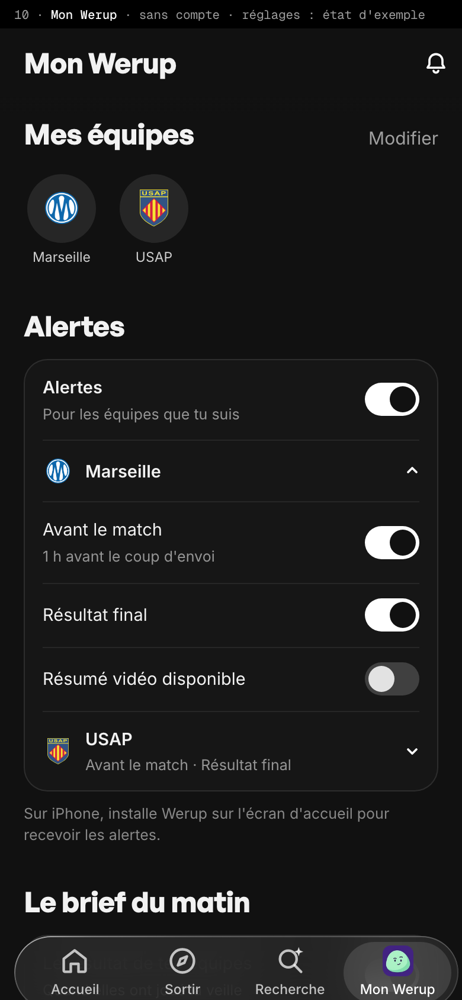
Un interrupteur principal « Alertes » (allumé = elles arrivent) est placé en tête et remplace « Tout couper ». Les réglages sont des états d'exemple, et la légende le dit.
10-mon-werup-equipes-alertes-compte.png

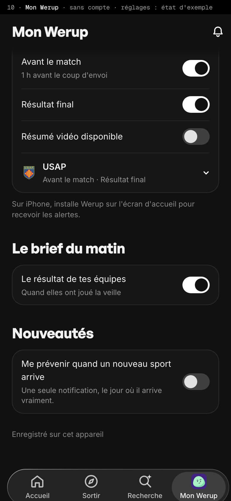
Le titre de section n'est plus répété sur la rangée (« Le résultat de tes équipes · Quand elles ont joué la veille »). L'interrupteur des nouveaux sports est éteint par défaut.
10-mon-werup-equipes-alertes-compte-suite.png

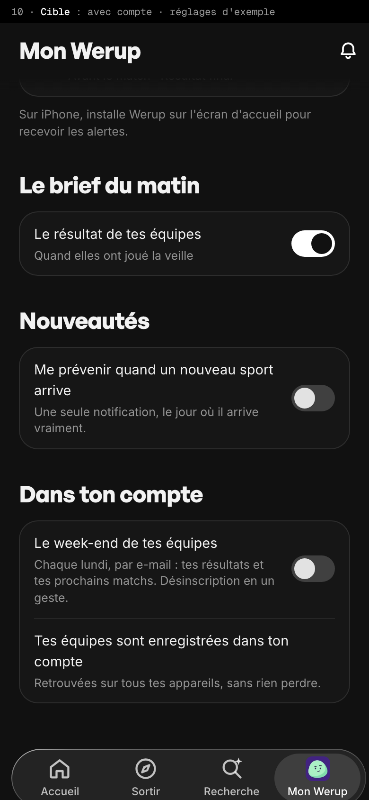
« Le week-end de tes équipes » est un interrupteur ÉTEINT par défaut : un seul contrôle marche-arrêt dans tout le produit. C'est un état cible, qui dépend du chantier des comptes.
10-mon-werup-equipes-alertes-compte-avec-compte.png

Semaine réelle du 2 au 8 nov. Lens 1 – 2 Marseille porte sa vignette officielle 16:9 et le bouton « Voir le résumé · 4:00 » : la vidéo est publiée à 1 h 45, donc elle existe à l'envoi. Pau – USAP renvoie à la feuille de match. Les équipes suivies restent en blanc.
10-mon-werup-email-du-lundi.png

Prochains matchs, pied de l'e-mail. La note de maquette est sortie du cadre de l'e-mail : elle est posée en dessous, hors e-mail.
10-mon-werup-email-du-lundi-suite.png
5 images · faire glisser · toucher une image l'ouvre en grand
D'où viennent ses données
- Suivis : magasin local de l'appareil
pulse:mon-pulse:reperes:v1. Notifications :push-appareil.ts. Brief du matin :push-daily-brief.ts, déjà en place. - Comptes : aucun compte particulier n'existe au 16/11 (
docs/MON-WERUP-COMPTES.md§1). L'état « avec compte » est une cible. - E-mail du lundi : résultats réels de la semaine du 2 au 8 nov. (Lens 1 – 2 Marseille, Pau 63 – 26 USAP) et prochains matchs réels.
- Les réglages montrés sont des états d'exemple, et la légende de l'image le dit.
Ses états
- aucune équipe suivie : la section suit la règle actuelle, sans invitation
- permission refusée par l'appareil : « Alertes désactivées dans les réglages de l'appareil »
- identifiant inconnu : écarté à la lecture
- application installée sur iOS : la ligne d'installation disparaît
Ce que l'image a changé par rapport à la spécification
- Un interrupteur principal « Alertes » en tête remplace « Tout couper ».
- « Le week-end de tes équipes » est un interrupteur, éteint par défaut.
- L'e-mail porte la vignette officielle de Lens – Marseille et le bouton « Voir le résumé · 4:00 » : la vidéo est publiée à 1 h 45, donc elle existe à l'envoi.
- La note de maquette est sortie du cadre de l'e-mail.
Inspiré de : L'Équipe (le compte gratuit pour les favoris, les alertes et les lettres d'information, sans le mur). Apple Sports (favoris retrouvés sur tous les appareils sans compte de plus). FotMob et Sofascore (le compte présenté comme une synchronisation). The Athletic (The Pulse, une lettre de rendez-vous). TorAlarm comme contre-exemple : une coupure qui n'est qu'une pause. App Store 4.5.4 et CNIL pour les consentements.
Spécification d'origine : contenu exact et requêtes SQL
Écrite avant les images. Là où l'image diffère, la liste « Ce que l'image a changé » ci-dessus le dit. Dans ce texte, « question 3 » et « question de couleur » renvoient aux questions G3 et G2 ; « question 4, 6, 8, 11 » aux questions Q de la proposition.
SOURCES : les suivis viennent du magasin local pulse:mon-pulse:reperes:v1 (src/lib/mon-pulse/reperes.ts) ; la liste actuelle est rendue par src/components/mon-pulse/section-suivis.tsx ; l'abonnement aux notifications par src/lib/notifications/push-appareil.ts. Aucun compte particulier n'existe au 16/11 (docs/MON-WERUP-COMPTES.md §1, COMPTE_PULSE_OUVERT = false). La maquette montre donc deux états : sans compte (réel) et avec compte (cible). 1. « Mes équipes » : des ronds-écussons dans l'ordre d'ajout, à côté des salles de cinéma suivies. Exemple de maquette : Marseille (api-sports 81), USAP (usap.svg). Chaque rond mène à la page de l'équipe. « Modifier » ouvre la feuille de l'écran 06. 2. « Alertes » : une ligne par équipe suivie ; toucher déplie ses interrupteurs. - Marseille : ☑ Avant le match · ☑ Résultat final · ☐ Résumé vidéo disponible. - USAP : mêmes réglages par défaut. - Puis « Tout couper », qui coupe vraiment, aussitôt et sans pause imposée. - Sur iPhone sans application installée, la ligne : « Sur iPhone, installe Werup sur l'écran d'accueil pour recevoir les alertes. » 3. « Le brief du matin » : la ligne existante, plus une mention discrète : « Inclut le résultat de tes équipes quand elles ont joué la veille ». C'est le push quotidien déjà en place (src/routes/api/public/cron/push-daily-brief.ts). 4. « Nouveautés » : ☐ « Me prévenir quand un nouveau sport arrive », éteint par défaut. Aucun nom de sport annoncé. 5. Le compte. - Sans compte (aujourd'hui) : « Enregistré sur cet appareil ». Une seule ligne d'action, et seulement après au moins une équipe suivie : « Retrouver mes équipes sur un autre appareil ». Elle ouvre l'écran de code e-mail du chantier des comptes, qui reste à construire. Tant que les comptes ne sont pas ouverts, cette ligne n'existe pas : jamais de « bientôt ». - Avec compte (cible) : « Dans ton compte » ; « ☐ Le week-end de tes équipes, chaque lundi, par e-mail ». La case n'est jamais cochée d'avance (CNIL) ; désinscription en un geste. 6. Maquette de l'e-mail du lundi, construite uniquement à partir de résultats réels. Exemple avec les données réelles de la semaine du 2 au 8 nov. pour Marseille et l'USAP : - sujet : « Le week-end de tes équipes » ; - Lens 1 – 2 Marseille · Ligue 1 · J10 · lien « Voir le résumé » vers la feuille de match ; - Pau 63 – 26 USAP · Top 14 · J9 ; - « Prochains matchs » : Marseille – Le Mans, dim. 22 nov. 20:45 · La Rochelle – USAP, sam. 28 nov. 16:35 ; - pied : la raison de l'envoi et le lien de désinscription. RÈGLES : - l'invitation au compte ne paraît que dans Mon Werup, jamais en carte sur l'accueil ni sur /sport ; - une invitation refusée se tait ; - créer un compte n'efface rien : les équipes rejoignent le compte sans perte. ÉTATS : - aucune équipe suivie : la section suit la règle actuelle, sans invitation ; - permission refusée par l'appareil : « Alertes désactivées dans les réglages de l'appareil » ; - identifiant inconnu : écarté à la lecture ; - application installée sur iOS : la ligne d'installation disparaît.
11 Annonce d'un nouveau sport ou d'une nouvelle compétition (concept, sans données inventées)
À quoi il sert. Prévenir les volontaires le jour où un sport ou une compétition est réellement alimenté. Dans l'app sans bruit, hors de l'app seulement avec consentement. C'est le dernier maillon du parcours, et le seul endroit où la tentation de promettre est la plus forte : la maquette montre un gabarit, jamais un sport inventé.

Gabarit seulement : au 16/11, la NRL 2027 ne rend rien en base. Notification : « La NRL, le rugby à XIII australien, arrive dans Werup » / « Premier match le [jour] à [heure], heure de Paris. » Tout le reste est fait d'emplacements nommés.
11-annonce-nouveau-sport.png

Emplacement nommé pour la vignette officielle d'un résumé de la saison précédente, sinon la grille des écussons réels. Le corps ne répète pas le titre. Bouton « Choisis tes équipes ». Envoi : aux personnes qui suivent une équipe de rugby à XIII, et non à l'interrupteur « nouveau sport ».
11-annonce-nouveau-sport-email.png
2 images · faire glisser · toucher une image l'ouvre en grand
D'où viennent ses données
- Aucune donnée de la NRL 2027 en base au 16/11 : la maquette est un gabarit, chaque emplacement porte le nom de la donnée qui le remplira.
- Seul cas réellement préparé : la NRL (
catalogue.ts,xiii:nrl, inactive, D-2123). Ni la F1 ni le MMA ne sont nommés.
Ses états
- personne n'a consenti : rien ne part hors de l'app
- envoi déjà fait pour cette compétition : aucune relance
- désinscription : effet immédiat
Ce que l'image a changé par rapport à la spécification
- Notification : « La NRL, le rugby à XIII australien, arrive dans Werup » / « Premier match le [jour] à [heure], heure de Paris. »
- E-mail : bouton « Choisis tes équipes » ; un emplacement pour la vignette officielle d'un résumé de la saison précédente, sinon la grille des écussons.
- Envoi : aux personnes qui suivent une équipe de rugby à XIII, et non à l'interrupteur « nouveau sport ». Cela contredit la direction (§8) : point C6.
Inspiré de : Apple Sports (« Calling F1 fans! » le jour du Grand Prix d'ouverture, avec un bouton Suivre ; l'UFC ajouté par une simple mise à jour, dans les gabarits existants). Apple TV (un guide pour les nouveaux venus, ici fait de données réelles). OneFootball (messages dans l'application pour annoncer les nouveautés). App Store 4.5.4 et CNIL (consentement à part, case non cochée).
Spécification d'origine : contenu exact et requêtes SQL
Écrite avant les images. Là où l'image diffère, la liste « Ce que l'image a changé » ci-dessus le dit. Dans ce texte, « question 3 » et « question de couleur » renvoient aux questions G3 et G2 ; « question 4, 6, 8, 11 » aux questions Q de la proposition.
PRINCIPE DE LA MAQUETTE : un gabarit à emplacements nommés. Chaque emplacement porte le nom de la donnée qui le remplira, et la requête qui la lira le jour de l'envoi. Aucun nom de sport futur (F1, MMA) n'apparaît. Le seul cas réellement préparé est la NRL (src/lib/sport/catalogue.ts, xiii:nrl, actif: false, D-2123). C'est une compétition et non un sport, et c'est elle que la maquette prend pour titre, avec la mention « gabarit : s'enverra seulement à l'activation ». 1. Dans l'app, le jour J : - un point blanc PastilleNouveaute (src/components/pastille-nouveaute.tsx) sur la tête du bloc NRL dans /sport, et sur sa rangée dans la feuille Mes équipes. Il s'éteint à la première visite de la page, au plus tard après 14 jours. Jamais de badge rouge, d'orange, de bandeau ni de carte d'annonce ; - la page « L'essentiel pour commencer » est simplement la page de compétition (gabarit de l'écran 09), avec en tête « [premier match : date et heure lues en base] » et la grille des « [18 écussons des clubs, lus en base] ». Le classement ne paraît pas avant la première journée. 2. Notification, envoyée seulement à qui a allumé « Me prévenir quand un nouveau sport arrive » : - titre : « La NRL arrive dans Werup » ; - texte : « Premier match : [jour] à [heure]. Suis tes équipes en un geste. » ; - toucher ouvre la page. Une seule notification, jamais de relance. 3. E-mail, envoyé seulement aux comptes qui y ont consenti (case non cochée) : - sujet : « La NRL arrive dans Werup » ; - aperçu : « Calendrier, résultats et résumés officiels » ; - corps : le logo Werup ; le titre ; une phrase, « Suis la NRL dans Werup : calendrier, résultats et résumés officiels. » ; le bloc « Le premier rendez-vous : [rencontre lue en base] » ; la grille « [écussons réels des équipes] » ; le bouton « Découvrir », vers werup.app/sport/rugby-a-xiii/nrl ; - pied : « Tu reçois ce message parce que tu as demandé à être prévenu des nouveaux sports. » et « Se désinscrire ». 4. Mon Werup › Nouveautés : l'interrupteur, éteint par défaut (écran 10). SQL pour remplir les emplacements le jour de l'envoi. Au 16/11, elles ne rendent rien : la maquette montre donc l'état vide prévu. select min(coup_envoi) at time zone 'Europe/Paris' premier_match from sport_rencontres where competition_id='xiii:nrl' and saison='2027' and journee between 1 and 27 select distinct e.id, coalesce(e.nom_court,e.nom) nom, e.visuel->>'url' from sport_rencontres r join sport_equipes e on e.id in (r.domicile_id, r.exterieur_id) where r.competition_id='xiii:nrl' and r.saison='2027' CONDITIONS DE DÉCLENCHEMENT (toutes réunies) : - la compétition est passée par la porte d'activation (D-2125 : identifiants vérifiés, saison en base, 100 % d'écussons, règle de classement, heures, vidéos) ; - un vrai premier match a lieu dans les 14 jours ; - Geoffrey communique ailleurs avec la capture de la vraie section et l'adresse stable. CAS F1 ET MMA : un modèle à part, une course ou une carte de combats, de niveau D. Rien n'est montré ni promis avant qu'une source réelle soit engagée. La maquette ne contient donc, pour eux, que l'interrupteur générique. ÉTATS : - personne n'a consenti : rien ne part hors de l'app ; - envoi déjà fait pour cette compétition : aucune relance ; - désinscription : effet immédiat.
Comment les images ont été fabriquées, et leurs limites (texte intégral)
DONNÉES RELUES (query_database, lecture seule, 16/11 au soir)
- J'ai recompté chaque nombre par une requête qui liste les lignes ou les compte : 26 rencontres par journée de Ligue des nations, avec le détail heure par heure du 16/11 ; 54 sélections ; 12 au Championnat des nations ; 7 au Top 14 J9 ; USAP 20 à venir et 10 résultats ; Marseille 24 à venir ; Challenge Cup le 12/12.
- J'ai lu sur YouTube la date de publication des vidéos utilisées.
- J'en ai tiré une correction de faux contenu que les critiques n'avaient pas vue : l'ancien moment 1 (08/11, 17 h 30) affichait « Résumé » sur la J10 de Ligue 1, alors que ces résumés ne sont publiés que le 09/11 à 0 h. Le moment 1 montre maintenant les résumés de la J9, réellement publiés.
FAUX VISUEL CORRIGÉ
- L'emblème des Fidji était le logo Fijian Drua. La source est en base : correspondance api-rugby 28, non vérifiée.
- Correction faite dans outils/telecharger.py. J'ai ouvert et regardé chaque emblème (planche dans donnees/planche-ecussons.png).
ARBITRAGES ENTRE LES DEUX CRITIQUES, en faveur de la clarté
1. Sélections. J'applique UNE règle, dans tous les sports : l'emblème de la fédération, jamais un drapeau (D-2107 dit « écussons »).
- Football : l'URL TheSportsDB est déjà en base.
- Rugby : TheSportsDB, équipes « France Rugby », « Fiji Rugby », etc.
2. Lecture des vidéos. Aucun bouton n'est posé sur la vignette. Au centre, le bouton couvrait le drapeau anglais sur la vignette d'ITV. La règle « ne jamais couvrir un écusson ni un texte » l'emporte. L'invitation « ▶ Résumé · J10 · 4:00 » passe dans la légende, et la durée n'est plus posée sur « HIGHLIGHTS ».
3. Sélections étrangères en direct. Elles sont repliées sur une ligne, comme le prévoit déjà la PROPOSITION §6.1 (« la France et les équipes suivies d'abord, les autres repliées »). Les matchs de Ligue 1 en cours restent dépliés, avec « depuis 17:15 ».
4. Doublon de journée. Aujourd'hui ne garde que les matchs en cours et à venir. Le bloc de compétition le dit : « Journée 10 · 4 matchs en cours et 1 à venir, plus haut ».
5. « Près de toi » passe au-dessus des onglets, avec le sport écrit sous chaque club.
6. Question 3. Le fichier « variante-ecusson » montre maintenant le repli sans photo (titre seul).
CORRECTIONS TRANSVERSES
- Une seule carte vidéo, avec la légende Werup « score · J · durée ». Plus de titre YouTube brut ni de nom de chaîne.
- Une seule carte d'article : titre entier, plus de line-clamp.
- Un seul signal de suivi sur les cartes : « Ton équipe » ou « Près de toi ».
- Une équipe suivie qui perd garde son nom en blanc ; seul le score s'atténue.
- Le sport est écrit en tête des lignes de compétition sur les surfaces mixtes et dans les feuilles.
- Écussons à aire égalisée, d'après une mesure pixel par pixel (outils/mesurer-ecussons.js). Fond blanc à 8 %, rayon 8, seulement pour les écussons dont au moins 40 % des pixels ont une luminance relative inférieure à 0,05. Cette liste mesurée est dans donnees/ecussons-mesures.json.
- Seules les graisses chargées par la production : Inter 400/500/600, Geist Mono 400/500, General Sans 600/700. J'ai relevé le lien de werup.app.
- Jours en minuscule partout. Puce « Résumé » à 13 px avec une cible de 44 px. Interrupteur partout.
- En 1280, la colonne de l'en-tête est celle du contenu.
RENDU
- playwright-core déjà présent, un seul Chromium, fermé à la fin.
- Aucun fichier écrit dans les deux dépôts : git status est vide dans catalan-heartbeat-hub et dans catalan-heartbeat-hub-sport.
- Les copies de travail dans /tmp ont été supprimées.
- J'ai relu à l'image 27 des 54 vues. Les autres ont été régénérées par le même code, mais je ne les ai pas regardées une à une.
Limites
- À FAIRE TRANCHER PAR GEOFFREY : la règle des sélections. J'ai appliqué l'emblème de fédération partout, d'après D-2107. L'autre option (le drapeau partout) reste ouverte.
- Les emblèmes de rugby (France, Argentine, Angleterre, Australie, Fidji, Afrique du Sud) et l'écusson de Dragons RFC viennent de TheSportsDB mais ne sont PAS encore en base. Aujourd'hui, la production afficherait les images api-sports : des drapeaux, la rose de la RFU, et le logo FIJIAN DRUA pour les Fidji (correspondance api-rugby 28, non vérifiée). C'est une correction de données à faire avant toute mise en ligne.
- Le nom_court en base de Toulouse Olympique est « Toulouse O. ». La maquette écrit le nom complet, qui est aussi en base.
- Horaires de Ligue 1 : toutes les journées J11 à J18 ont exactement le même gabarit de 6 créneaux, et toutes ont horaire_confirme = vrai. Je propose « À confirmer » au-delà de 4 semaines (règle appliquée sur Marseille). C'est une règle de prudence, pas une preuve que ces heures sont fausses.
- Racing 92 : le mot « RACING 92 » est noir dans l'écusson et reste illisible sur fond sombre, même avec le fond à 8 %. Il faudrait la version claire de l'écusson du club. Les écussons bleu marine tuilés restent peu contrastés : la tuile à 8 % ne donne qu'une silhouette.
- Je n'ai pas posé de bouton de lecture sur les vignettes, contrairement à la demande de la critique 1 (« bouton centré »), pour ne couvrir aucun écusson ni aucun texte. La durée est dans la légende, pas sur l'image.
- J'ai gardé la largeur de carte de 86 % (PROPOSITION §5 : dimension de production inchangée). La carte suivante ne dépasse donc toujours que d'environ 22 px. Il faudrait un arbitrage pour passer à 70–75 %.
- Moment 2 : le bloc qui porte un résultat des Bleus de moins de 48 h passe en tête de son sport. C'est une règle ajoutée pour répondre à la critique 2, et elle n'est pas dans la PROPOSITION. Je n'ai pas créé de section « Les Bleus ».
- Les résumés des clubs (usap_videos) ne sont pas rattachés aux rencontres dans sport_rencontres : la J9 du Top 14 n'a aucun video_url. La page de l'USAP et la feuille Pau – USAP les montrent par appariement. Les listes de /sport n'affichent donc pas « Résumé » sur Pau – USAP.
- Le résumé d'Espagne – Angleterre (seule vidéo de la Ligue des nations en base) vient d'ITV Sport, un diffuseur et non la chaîne de l'UEFA. Je l'ai gardé parce qu'il est en base.
- Je n'ai pas vérifié que les vidéos de Ligue 1 se lisent intégrées : le drapeau playableInEmbed est absent de leur page.
- Les noms de pays viennent toujours d'une table écrite dans outils/donnees.js, et non de la table vérifiée demandée par la direction.
- L'e-mail en fond sombre n'a pas été éprouvé dans Gmail, Apple Mail ni Outlook. Je n'ai pas produit de version claire.
- J'ai rendu dans Chromium sans écran, pas sur un vrai iPhone ni dans WebKit. Je n'ai pas pu vérifier sur l'image le verre fumé de la feuille « choisir ».
- 01 carte résumé et 02 moment 1 sont des reconstitutions par l'heure. Les chapitres voisins de l'accueil viennent de la capture du 16/11, même pour la reconstitution du 09/11.
- Absents faute de source réelle : buteurs, chaîne de diffusion, zones de classement (aucun règlement sourcé), classement du Top 14, état « Reporté ». Le chrome bureau (barre basse en 1280) n'est pas vérifié.
- Écran 11 : il reste un gabarit. Le ciblage « nouvelle compétition → personnes qui suivent une équipe de ce sport » est une proposition, à faire valider.
- Je n'ai pas encore envoyé les images à Geoffrey.
4. La direction complète
À lire avec deux précisions.
- Ce texte a été écrit avant les images. Les images l'ont corrigé sur les points listés écran par écran (« Ce que l'image a changé », partie 3). Les écarts qui demandent un choix sont dans la partie 5 C.
- Deux numérotations s'y croisent. « Question N du §11 » renvoie aux questions posées à Geoffrey, notées ici G1 à G5. « Question N » seule renvoie aux questions de la proposition, notées Q1 à Q15. Au §12, « §11, question 8 » désigne Q8.
Werup Sport : la direction
16 novembre 2026, 20 h. Pour ChatGPT, qui organise le projet, et pour qui codera ensuite. Ce texte s'appuie sur trois sources : la proposition du même jour (PROPOSITION-SPORT-UX.md), qui fait foi sauf là où ce texte la tranche autrement (§2) ; l'étude de marché (scores, éditorial, rituel, rugby) ; une lecture seule de la base de production, faite entre 20 h 05 et 20 h 15. Rien n'a été codé. Rien n'a été écrit en base.
0. En une phrase
Werup Sport donne en cinq secondes le résultat juste des équipes qu'on aime, avec une vraie image du match, le résumé officiel et les meilleurs articles. Le football passe en premier, le rugby fait la différence.
Apple Sports, lancé en France en septembre 2025, ne parle pas de rugby dans son annonce. Aucune grande application ne réunit le football, le XV et le XIII en français, avec la même clarté. C'est la place de Werup.
1. Les dix principes qui tranchent tout
- Juste avant rapide.
- Le score affiché est le champ score de la source, jamais un calcul fait à partir des événements.
- « Terminé » ne s'écrit que sur un statut final de la source.
- Pendant le jeu, aucun score tant que le flux n'est pas qualifié (D-2120).
- Une fois le flux qualifié, le score s'affiche avec « relevé à 21 h 04 ».
- Si un score recule, on écrit « But annulé » sur la ligne pendant quelques minutes. Jamais en silence.
- Werup ne gagnera pas la course de la vitesse : FotMob et Apple poussent presque instantanément. Il gagne la confiance.
- Le football d'abord, puis le XV, le XIII et la NRL.
- C'est l'ordre partout où rien n'est personnalisé : onglets, sommaire, accueil, feuille de choix.
- Les sports des équipes suivies passent devant.
- On suit des équipes, jamais des sports. Les compétitions s'en déduisent.
- Un seul dessin pour tous les sports.
- Un match ouvre une feuille ; une équipe ou une compétition ouvre une page.
- Une seule carte de match, une seule ligne, un seul tableau, un seul gabarit d'équipe et un seul de compétition.
- Rien d'inventé.
- Une section sans donnée réelle n'existe pas : pas de « bientôt », pas d'onglet vide, pas d'image décorative.
- Pas de faux exemple non plus, même dans une maquette.
- Le court est fabriqué par Werup, l'entier reste chez l'éditeur.
- La version courte d'un sujet tient en deux éléments : le bloc « L'essentiel », tiré de nos données (score, série, rang, prochain match), et le chapô que l'éditeur publie lui-même dans son flux (D-247).
- L'article entier s'ouvre chez l'éditeur.
- Aucun résumé réécrit, aucun résumé par IA.
- Une image doit informer : de vrais écussons, la vignette officielle du résumé, la photo de l'éditeur. Jamais une affiche générée, jamais une photo de banque d'images.
- Suivre et être prévenu tiennent en un seul geste, sans compte.
- Le compte Mon Werup se propose au moment où il rend un service.
- Il n'est jamais exigé.
- Le rituel vient de rendez-vous fixes (avant le match, résultat final, le matin, le lundi), pas d'un fil sans fin.
- Aucune publicité, aucune cote, aucun pari dans le Sport. C'est ce qui rend Apple Sports « instantanée » face à ESPN. C'est aussi le sens de l'époque : recommandations de l'ANJ, proposition de loi du 23/06/2026.
2. Ce que cette direction change dans la proposition
Tout le reste de la proposition est repris tel quel : hiérarchie, adresses, porte d'activation, BlocMatch commun, feuille Mes équipes, stockage des suivis, NRL invisible, lots A.
| Sujet | Proposition | Direction | Pourquoi |
|---|---|---|---|
| Accueil, sans équipe suivie ni lieu dans un territoire | Chapitre masqué (D-2079 strict) | Le chapitre montre le sport du moment : 4 cartes réelles au plus, football d'abord, choisies par une règle sur les données, avec le même dessin. Rien dans la fenêtre : le chapitre ne paraît pas. | Le parcours du fondateur commence à l'accueil (« on vient pour le carburant ou l'agenda, on découvre le sport »). D-2079 voulait ne plus imposer Perpignan, pas cacher le sport national. Aucune carte d'invitation (refusée le 16/11). |
| Image de tête de la feuille de match | La vignette de la source si elle existe | La vignette officielle du résumé (YouTube, intacte), et seulement une fois le match terminé. Jamais vignette_url. |
vignette_url vient de TheSportsDB. Ce sont des affiches générées, souvent réutilisées : les affiches du Top 14 2026-2027 portent un horodatage du 02/09/2022 (…1662124843.jpg). La vignette officielle, elle, est une vraie photo du match. |
| Vidéo en tête de la feuille | Jamais | Après le match, la vignette officielle sert à la fois d'image de tête et de bouton de lecture. Le lecteur se monte au toucher. | « Une image vaut mille mots ». Les 90 matchs de Ligue 1 2026-2027 déjà joués ont tous leur résumé. |
| Résumés sur la page de compétition | Écartés (§16) | Un rail « Les résumés de la journée », seulement quand la journée en a. | En Ligue 1, la couverture est de 100 %. C'est l'image la plus riche dont Werup dispose sans contestation. |
| Articles | Titre, source, date, sans extrait | D-247 est maintenue : titre exact, chapô de syndication (200 caractères au plus, coupé sur un mot), image, source et âge. « Lire l'article » ouvre l'article chez l'éditeur. Le bloc « L'essentiel » de Werup s'y ajoute. | C'est la « version courte d'abord » que demande le fondateur, et elle est déjà en production. La photo de presse est un risque juridique : la question revient à Geoffrey (§11). |
| Suivre | Un toast « X rejoint tes suivis » | Le même geste montre, à l'endroit même, la cloche « Me prévenir : avant le match · résultat final ». | Modèle OneFootball et Flashscore. Le test du Guardian montre que, sans cela, les gens confondent suivre et être notifié. |
| Territoire | Le 66 seulement | Tous les clubs français des compétitions actives, chacun vérifié par la commune de son stade (le champ lieu est déjà en base). |
Werup est national et sans ville par défaut. Garder seulement le 66 serait le dernier « Perpignan par défaut » du sport. C'est une donnée à poser, pas une plateforme à construire. |
| Rituel par e-mail | Non traité | Un e-mail le lundi, « Le week-end de tes équipes », avec un compte et un consentement. Et une ligne dans le brief du matin, qui existe déjà. | La lettre quotidienne de The Athletic est ouverte par 46 à 50 % de ses lecteurs. Le brief du matin (push-daily-brief.ts) est un rendez-vous qui existe : on s'en sert au lieu d'en créer un. |
| Vidéos | Résumés officiels | Résumés officiels de 3 à 6 minutes, durée affichée. Conférences de presse écartées. | « Pas trop longues » : la conférence de presse de l'USAP après Toulon dure 14 min 22 s ; les résumés Ligue 1 de Marseille durent de 3 min 50 s à 5 min 56 s. |
| Numéros de décision | D-2121 à D-2129 | Renuméroter au moment d'écrire. | D-2122 à D-2125 ont déjà été pris le 16/11 par d'autres sujets : nom du fournisseur, NRL, direct à 30 s, socle de lecture. |
3. Ce qu'on copie, et chez qui
| Emprunt | Chez qui | Chez Werup |
|---|---|---|
| Trois temps : hier, aujourd'hui, à venir ; les favoris en tête ; chiffres condensés, gras et tabulaires | Apple Sports | Mes équipes, puis Aujourd'hui (direct d'abord), puis compétitions ; score en Geist Mono tabulaire. |
| La page de match qui change d'état, et des sections qui n'existent que si elles ont du contenu | The Guardian, FotMob | La feuille de match : avant, pendant, après. |
| L'essentiel par défaut, le détail à un toucher | FotMob (« not overwhelming ») | Quatre lignes par groupe, puis « Voir les N autres » ; « Autres matchs (N) » pour les sélections. |
| La cloche à côté de l'équipe, réglée une fois pour tous ses matchs futurs | Flashscore, OneFootball | La cloche dans la feuille de match, la page d'équipe et Mes équipes. |
| « Mentionné dans cet article » : l'article relié au match et aux équipes | OneFootball | La feuille de lecture d'un article montre le match dont il parle. |
| Le compte gratuit pour les alertes et les lettres d'information, jamais pour lire | L'Équipe (sans le mur), Apple | Mon Werup, après la valeur. |
| Le rendez-vous par e-mail | The Athletic (The Pulse) | « Le week-end de tes équipes », le lundi. |
| Les zones de classement écrites en mots, jamais une couleur seule | LNR | Seulement avec un règlement sourcé ; aucune zone aujourd'hui. |
| Matchs, classement, équipes, et une vraie recherche | Application NRL (critiquée pour son absence de recherche) | Page de compétition ; index de recherche généré depuis sport_equipes. |
| Un nouveau sport annoncé le jour de son premier vrai événement, avec « Suivre » | Apple Sports (la F1, mars 2025) | Point blanc, une page pour commencer, et une alerte aux seuls volontaires. |
Ce qu'on ne copie pas :
- la densité de FotMob et de Sofascore (xG, notes, momentum) sans données ;
- le fil « Pour vous » algorithmique de OneFootball ;
- les cotes d'Apple Sports ;
- le glissement latéral d'un match à l'autre (il entre en conflit avec le geste de fermeture des feuilles et le retour d'iOS) ;
- les stories éphémères.
4. Architecture
Elle reprend la proposition, §4.
- Hiérarchie : Sport → sport (Football, Rugby à XV, Rugby à XIII) → compétition (une page) → équipe (une page). Un match s'ouvre dans une feuille (
PulseModalde nature « lire »). - Adresses :
/sport, puis/sport/football,/sport/rugby-a-xv,/sport/rugby-a-xiii(même composant, filtré) ;/sport/{sport}/{competition}et/sport/{sport}/equipe/{slug};/rugby/usapet/rugby/dragons-catalansrestent canoniques, avec une redirection 301 depuis leur adresse/sport/….
- Entrées :
- le chapitre Sport de l'accueil, avec sa porte « Tout voir » ;
- la Recherche ;
- Mon Werup › Suivis ;
- le menu « Explorer Werup » du pied de page ;
- les raccourcis existants. La barre basse ne change pas : c'est une ligne rouge.
- Ordre des sports, sans équipe suivie : Football, Rugby à XV, Rugby à XIII. La NRL vient en dernier, dans le XIII, après la Super League.
- En-tête : « Sport » sur
/sport/**et sur/rugby/**. Les replis sont déclarés danslib/navigation/repli.ts.
5. Le parcours, de la découverte à l'annonce d'un nouveau sport
Le détail de chaque étape est dans le champ parcours. L'essentiel :
- Accueil. On vient pour le carburant ou l'agenda. Le chapitre Sport montre ses équipes, sinon le sport du moment.
- Feuille de match. Score juste, résumé officiel, « L'essentiel », les deux équipes avec « Suivre ».
- Exploration.
/sport, la page Ligue 1 avec son classement réel, les pages d'équipe. - Suivre. Un toucher sur l'écusson. La cloche paraît au même endroit. « Me prévenir » ouvre la fenêtre native de l'appareil.
- Rituel. Rappel avant le match, résultat final, ligne dans le brief du matin, résumé vidéo,
/sportqui s'ouvre sur Mes équipes. - Compte Mon Werup. Il est proposé quand il sert : un deuxième appareil, l'e-mail du lundi. Aucun compte particulier n'existe au 16/11 (
COMPTE_PULSE_OUVERTest àfalse,docs/MON-WERUP-COMPTES.md§1). Cette étape dépend donc du chantier des comptes. - Découverte. « Dans la même compétition », les autres sports du jour, la Recherche, la feuille Mes équipes.
- Nouveau sport. Un interrupteur « Nouveaux sports », éteint par défaut. L'annonce part le jour où une source réelle alimente le sport : point blanc, page, notification aux volontaires, e-mail aux comptes consentants.
6. Le modèle de contenu
6.1 Résultats : stables, frais, sans erreur, sans doublon
- Une rencontre, une ligne canonique, tous fournisseurs confondus.
- L'identifiant interne
rc:…existe ; les fournisseurs n'ont que des correspondances (D-2111). - Contrôlé le 16/11 : 0 doublon (même affiche, même jour) et 0 match « terminé » sans score. Un test de garde doit l'empêcher à chaque nouvelle source.
- L'identifiant interne
- Les états lisibles sont ceux d'
etat-match.ts: à venir, jour J, en cours, résultat attendu, terminé, intersaison. S'y ajoutent deux éléments :- le modificateur « Heure à confirmer » (D-1716) ;
- l'extension « Reporté » ou « Annulé » dans une liste, encore à écrire.
- Un statut inconnu ne se montre jamais comme « à venir » ni « en cours ». Cas réel en base : Nantes – Toulouse du 17/05/2026, statut
inconnu, sans score. Au-delà de 24 h, une telle rencontre ne se lit plus. - Direct.
- Relevé toutes les 30 s (D-2124).
- Pendant le jeu :
PastilleDirectet « En cours » (ou « Mi-temps »), sans score tant que le flux n'est pas qualifié (D-2120). Le football est le premier en cours de qualification : des relevés réels existent depuis le 16/11 à 16 h 09, sur 5 matchs de Ligue des nations. - Dans la feuille d'un match en cours, une seule ligne honnête : « Résultat à la fin du match ».
- Une fois le flux qualifié : « 2 – 1 · relevé à 19 h 20 ».
- Résultat final notifié seulement après deux lectures concordantes, à 30 s d'écart.
- Fraîcheur visible : « Mis à jour à 21 h 04 ». Jamais le nom d'un fournisseur à l'écran (D-2122).
- Noms français obligatoires. La base porte en anglais les noms des sélections (« Turkey », « N.Ireland », « Czech Republic », « Argentina », « South Africa », « Fiji »), et
nom_courtest vide pour tout le football et pour les sélections du XV. Il faut une table de noms français vérifiés avant tout affichage. Traduire le nom d'un pays n'est pas inventer.
6.2 « L'essentiel » : la version courte fabriquée par Werup
Trois lignes au plus, en tête de la feuille de match et de la page d'équipe. Chaque ligne vient de la base. Si la donnée manque, la ligne disparaît.
- Une série, seulement à partir de 3 résultats identiques de suite dans une même compétition. Exemple réel : Marseille, 5 victoires de suite en Ligue 1 (J6 à J10). Exemple réel aussi : USAP, 3 défaites de suite en Top 14 (J7 à J9).
- Le rang et les points, si le classement est publié. Exemple : « 4e de Ligue 1 · 18 points après 10 journées ».
- Le prochain match. Exemple : « Prochain match : Marseille – Le Mans, dim. 22 nov. à 20:45, Orange Vélodrome ».
C'est le format « trois points » du WSJ, appliqué à des faits qui appartiennent à Werup. Jamais de phrase générée par IA. Jamais d'adjectif. « Lourde défaite » est un jugement : on écrit le score.
6.3 Articles : courts d'abord, entiers chez l'éditeur
- La carte (court) : l'image de l'éditeur (sous réserve de la question 3 du §11), le titre exact, la source et l'âge (« L'Indépendant · il y a 2 h »), puis le chapô de syndication (D-247,
resume-actu.ts: 200 caractères au plus, coupé sur un mot, absent sous 40 caractères). - La feuille de lecture (court, avec contexte) :
- la même chose en plus grand ;
- puis « Mentionné dans cet article » : la carte du match et ses équipes, déduites des données (le titre contient les deux équipes, publication dans les 72 h après le coup d'envoi) ;
- puis le résumé officiel du match s'il existe ;
- puis le bouton principal « Lire l'article sur L'Indépendant ».
- L'article entier s'ouvre chez l'éditeur, paywall et publicité compris. Dans l'app iPhone, c'est son navigateur intégré (comportement à vérifier avec la session iPhone) ; sur le web, un nouvel onglet.
- L'article entier dans Werup passe uniquement par un accord écrit (le modèle de OneFootball) :
- d'abord les clubs : l'USAP, les Dragons Catalans, dont le site officiel publie déjà par WordPress REST ;
- puis le Groupe Dépêche, qui édite L'Indépendant, Midi Olympique et Rugbyrama, et diffuse les Dragons ;
- à l'échelle nationale, l'organisme collectif DVP.
- Jamais :
- de résumé réécrit ou produit par IA. Apple en janvier 2025 et ESPN en septembre 2024 l'ont payé, et c'est hors de l'exception légale (CPI L.211-3-1) ;
- de titre modifié (CPI L.112-4) ;
- de site de mercato pour combler un vide.
- Football : aucune source d'articles n'est branchée. La section n'existe pas. La page Football vit de ses résultats, de son classement et de ses résumés. La première piste à sourcer : les sites officiels des clubs de Ligue 1, avec leur accord.
- Dragons : le flux du club mêle la brasserie et le sport. Observé le 16/11 : « Le menu de la semaine à la Brasserie » (catégorie 19) à côté de « La réserve s'impose face à Albi » (catégorie 33). Il faut une liste blanche de catégories sportives (question 11).
6.4 Vidéos : de temps en temps, courtes, officielles
- Résumés des chaînes officielles seulement, plus les débriefs d'après-match s'ils font moins de 8 min. Ni conférence d'avant-match, ni match entier.
- La durée est toujours affichée. Mesures du 16/11 :
- Lens – Marseille : 4:00 ;
- Pau – USAP : 3:58 ;
- USAP – Toulon : 4:20 ;
- Wigan – Dragons Catalans : 11:00 ;
- Grand Final de Super League : 10:30.
- Lecture au toucher, sans lecture automatique. Lecteur de 480 × 270 au moins. Vignette et titre intacts (règles YouTube).
- Ligue 1 : lisible en France seulement. La feuille le dit si la lecture échoue. L'intégrabilité se vérifie par
videos.list(SPT-09). - Le résumé arrive quelques heures après le match. Lens – Marseille, coup d'envoi le 08/11 à 20 h 45 : résumé publié le 09/11 vers 1 h 45. L'alerte « Résumé disponible » existe, mais elle est éteinte par défaut.
- Spoilers. La vignette et le titre officiel montrent le score (« RC LENS - OLYMPIQUE DE MARSEILLE (1-2) »). Une option « Masquer les scores » viendra plus tard. On ne touche pas à la vignette.
- Couverture au 16/11 :
- Ligue 1 2026-2027 : 90 vidéos sur 90 ;
- Super League 2026 : 189 sur 194 ;
- Challenge Cup 2026-2027 : 9 sur 9 ;
- Top 14 2026-2027 : 0 sur 63 en base (la chaîne de l'USAP couvre les matchs de l'USAP) ;
- Championnat des nations : 0 ;
- Ligue des nations : 1 sur 143.
6.5 Images : la hiérarchie
- Les écussons réels, en grand. Ce sont des images de Werup, toujours disponibles, jamais trompeuses (D-2107).
- Écussons locaux :
src/assets/clubs/*.svg(Top 14) etpublic/clubs/super-league/*.webp(Super League). - Sinon,
sport_equipes.visuel->>'url', ouhttps://media.api-sports.io/football/teams/<id>.png. - Un écusson qui échoue laisse un emplacement vide à la même taille. Jamais d'initiales.
- Écussons locaux :
- La vignette officielle du résumé, une vraie photo du match :
https://i.ytimg.com/vi/<id>/maxresdefault.jpg, intacte. - La photo de l'article, avec la mention « Photo : L'Indépendant ».
- Les photos officielles des clubs, sous accord. Exemple : les galeries du site des Dragons (« Galerie | Entrainement du jour », 16/11).
- La photo de tête d'une page d'équipe, seulement sous licence (celles de l'USAP et des Dragons existent déjà).
Jamais :
vignette_urlde TheSportsDB comme image d'un match ;- une banque d'images ;
- une image générée ;
- une photo de joueur dans une promotion ou une notification ;
- une image géante au-dessus des scores.
7. Le football en tête, puis le XV, le XIII, la NRL
| Sport | Ce qui est réel au 16/11 | Ce qui manque |
|---|---|---|
| Football (1er) | Ligue 1 2026-2027 : 306 matchs, 90 joués (J1 à J10), 90 résumés officiels, classement publié (18 lignes, mis à jour le 16/11 à 19 h 25), prochaine journée du 20 au 22 nov. Ligue des nations : 156 matchs ; France 2 – 1 Turquie le 15/11. Direct relevé à 30 s, en cours de qualification. | Aucune source d'articles. Noms français des sélections. Champ pays vide. Aucun prochain match des Bleus en base après le 15/11. Ligue des champions inactive. |
| Rugby à XV (2e) | Top 14 2026-2027 : 182 matchs, 63 joués ; prochaine journée les 28 et 29 nov. Challenge Cup : reprise le 12/12. Championnat des nations : France 21 – 19 Afrique du Sud le 13/11, France – Argentine le 21/11 à 21:10. Articles USAP (L'Indépendant), vidéos de la chaîne USAP. | Classement du Top 14 (D-2114 : on n'affiche rien). Écusson des Dragons RFC (Challenge Cup) introuvable. Lieu et vidéos du Championnat des nations. |
| Rugby à XIII (3e) | Super League 2026 : saison complète, classement calculé à 0 écart, Grand Final à Old Trafford le 03/10 (Warrington 10 – 23 Wakefield), Dragons Catalans 9es (20 points). Articles des Dragons (site du club, Rugbyrama). | La saison 2027 n'est pas encore publiée : aucun match avant février. Le flux Treize Mondial (/feed/) a répondu vide à ma lecture de 20 h 10 : à vérifier. |
| NRL (4e) | Préparée et invisible (D-2123). Classement calculé, 17 lignes sur 17 identiques au classement officiel 2026. | Calendrier 2027 encore absent chez la source le 16/11. Activation au plus tard avant mars 2027. Matchs la nuit en France : on y vient pour le résultat au réveil. |
8. Suivre, être prévenu, le compte, les e-mails, le nouveau sport
- Suivre :
- un toucher sur « Suivre » (page d'équipe, feuille de match, feuille Mes équipes, Mon Werup) ;
- un toast « Marseille rejoint tes suivis » ;
- enregistré sur l'appareil, dans le repère
{ type: "equipe" }du magasinpulse:mon-pulse:reperes:v1, migré depuis l'universpulse:universsans perte (lot A2) ; - 30 équipes au plus ;
- « Enregistré sur cet appareil » est dit en clair, tant que c'est vrai.
- Être prévenu, dans le même geste :
- la cloche paraît sous l'équipe suivie, avec « Avant le match » (1 h avant) et « Résultat final » allumés, « Résumé vidéo disponible » éteint ;
- « Buts » n'existe pas avant la qualification du flux, et n'est pas annoncé en « bientôt » ;
- « Me prévenir » est le geste qui ouvre la fenêtre native de l'appareil (exigence d'iOS) ;
- phrase affichée : « Au plus 2 messages par match » ;
- sur iPhone, hors application installée, une ligne le dit : « Sur iPhone, installe Werup sur l'écran d'accueil pour recevoir les alertes » ;
- un refus ne casse rien.
- Règles d'envoi :
- un événement, une notification : clé match × type × destinataire. Deux équipes suivies dans le même match donnent un seul message ;
- plusieurs fins de match proches se regroupent (« 3 de tes équipes ont joué ») ;
- aucune notification de correction, sauf pour démentir un but notifié (après qualification) ;
- « Tout couper » coupe vraiment, sans pause imposée.
- Le brief du matin (push quotidien existant) gagne une ligne pour les équipes suivies qui ont joué la veille. C'est réutilisé, pas un nouveau type d'alerte.
- Compte Mon Werup :
- tout fonctionne sans compte ;
- il est proposé dans Mon Werup seulement, à trois moments : « Retrouver mes équipes sur un autre appareil », « Recevoir le week-end de mes équipes le lundi », ou un stockage local signalé fragile ;
- connexion par code e-mail, sans mot de passe ;
- les équipes suivies rejoignent le compte sans rien perdre ;
- aucune carte d'invitation sur l'accueil ni sur
/sport.
- E-mails :
- « Le week-end de tes équipes », le lundi, construit uniquement à partir de résultats réels et des prochains matchs ;
- case non cochée (CNIL) ;
- désinscription en un geste.
- Nouveau sport :
- un interrupteur « Me prévenir quand un nouveau sport arrive » dans Mon Werup › Alertes, éteint par défaut (App Store 4.5.4, CNIL) ;
- l'annonce part le jour où le sport est réellement alimenté et qu'un vrai premier événement approche : point blanc
PastilleNouveaute(14 jours au plus), une page « L'essentiel pour commencer » faite de données réelles (calendrier, équipes, classement s'il est publié), une notification et un e-mail aux seuls volontaires ; - la F1 et le MMA ne sont jamais nommés avant qu'une source réelle soit engagée. Ils demandent des gabarits propres, une course ou une carte de combats : c'est un chantier de niveau D, qui ne se tord pas dans le modèle à deux équipes.
9. Ce que les données disent au 16/11, et ce qu'il faut corriger avant tout code visible
Défauts relevés en lecture seule, à corriger dans les lots invisibles :
- Noms des sélections en anglais,
nom_courtvide pour le football et les sélections du XV. Une table de noms français vérifiés est bloquante pour l'affichage.tv-timeline.functions.tsen a un début pour quelques pays. - Dragons RFC (Challenge Cup) n'a d'écusson ni local ni chez le fournisseur. Selon la règle des 100 % d'écussons, la Challenge Cup ne passe pas la porte d'activation (SPT-10).
- Nantes – Toulouse (17/05/2026) est au statut « inconnu » : garde à tester.
vignette_urln'est jamais affichée comme image du match.- Championnat des nations : lieu vide et aucune vidéo. La ligne méta omet donc le lieu.
- Football : champ
paysvide. À renseigner : c'est la règle « une équipe française » de l'accueil. Monaco n'est pas français. - Noms complets des clubs absents (la base dit « Marseille »). Le titre officiel des résumés de Ligue 1 donne « Olympique de Marseille ». À poser dans les équipes de référence, après vérification.
- Heures « confirmées » en janvier (Brest – Marseille, sam. 2 janv. à 17:00,
horaire_confirmevrai). C'est douteux pour une journée aussi lointaine : à contrôler à la source. Inféré, non vérifié.
Moments réels utilisables pour les maquettes :
- dimanche 8/11 à 17 h 30 : 4 matchs de Ligue 1 en cours, Lens – Marseille à 20:45, Angleterre – Australie en cours (reconstitution par l'heure, scores en cours non montrés) ;
- lundi 16/11 à 19 h 20 : trois matchs de Ligue des nations en cours, avec de vrais relevés (Estonie – Bulgarie, 62e minute, relevé à 19:20:06) ;
- lundi 16/11 à 20 h 05 : l'accueil.
10. Valider en images avant de coder
Onze maquettes (champ
ecrans), par ordre de priorité.- Chacune en 390 × 844 px, mobile d'abord.
/sportet Ligue 1 sont aussi en 1280 px. - Charte réelle : obsidienne, Inter et Geist Mono,
surface-raisedetsurface-flow, aucunborderni ombre de carte. - Chaque maquette est construite avec les requêtes SQL données, et rien d'autre.
- Chacune en 390 × 844 px, mobile d'abord.
Aucun faux contenu, même dans une maquette :
- un état passé se reconstitue à partir de vraies données et le dit dans sa légende ;
- une donnée absente montre l'état vide prévu ;
- un gabarit de nouveau sport montre des emplacements nommés, jamais un sport inventé.
Envoi à Geoffrey : une image à la fois, avec une question fermée, dans l'ordre de priorité.
Avant validation, seuls les lots invisibles avancent :
- A2 : suivre N équipes, avec migration ;
- A3 : écussons ;
- noms français ;
- territoire.
Rien de visible n'est codé avant le oui de Geoffrey sur l'image correspondante.
11. Ce qui remonte à Geoffrey : cinq questions, une à la fois
- (avec l'écran 01) « Quand quelqu'un n'a choisi aucune équipe, on lui montre les grands matchs du moment sur l'accueil, football d'abord. Oui ou non ? »
- (avec l'écran 01, deux variantes) « Les cartes de match : toutes en gris foncé (la couleur vient de l'écusson), ou on garde le rouge de l'USAP et l'or des Dragons ? »
- « Les photos des articles de L'Indépendant : on les garde, avec un petit risque juridique comme pour les écussons, ou on met l'écusson à la place en attendant leur accord écrit ? »
- (avant le 10/12) « On renouvelle les deux abonnements de données sport avant le 16 décembre : football 19,20 $ et rugby 15,60 $ par mois ? »
- « La signature « Allez papa d'amour ♥ Alma » reste sur la page des Dragons ? »
Tout le reste est tranché ici, ou par ChatGPT et Claude dans le cadre de la charte.
12. Ordre de construction, après validation des images
- Déjà fait, invisible, consigné le 16/11 :
- A0 (D-2122) ;
- A1, le socle de lecture (D-2125) ;
- A5, la NRL (D-2123) ;
- le direct à 30 s (D-2124).
- Ensuite, invisible :
- A2 : suivre N équipes, migration de
pulse:univers, test de non-perte sur le vrai magasin ; - A3 : écussons ;
- la table des noms français ;
- le territoire national.
- A2 : suivre N équipes, migration de
- Puis visible, dans l'ordre du fondateur :
- feuille de match et
BlocMatchcommun (football d'abord) ; /sportet la page Ligue 1 ;- page d'équipe (football, puis
/rugby/usapet/rugby/dragons-catalanssur ce gabarit) ; - chapitre Sport de l'accueil, coordonné avec MN-02 dans
CHANTIERS.md; - feuille Mes équipes, cloche et alertes (SPT-07, SPT-08) ;
- pages du XIII ;
- compte et e-mails, avec le chantier des comptes ;
- activations (§11, question 8) ;
- annonce d'un nouveau sport.
- feuille de match et
- Niveau d'ensemble : D. Chaque lot est livré seul, tests écrits et passés avant le commit, un seul traitement lourd à la fois.
13. Vérifié, inféré, non vérifié
- Observé le 16/11, entre 20 h 05 et 20 h 15 :
- en base : comptes de rencontres, de vidéos et de vignettes par compétition, classements Ligue 1 et Super League, matchs de Marseille, de l'USAP et de la France, relevés en direct du 16/11,
usap_news,usap_videos, écussons, champpays, statut inconnu de Nantes – Toulouse ; - durées et titres de 11 vidéos YouTube ;
- flux WordPress des Dragons ;
- dans le dépôt (worktree sport,
ea3f43758) :resume-actu.ts(D-247),dragons-news.functions.ts,catalogue.ts,equipes.ts, les décisions D-2079 et D-2120 à D-2125,MON-WERUP-COMPTES.md§1.
- en base : comptes de rencontres, de vidéos et de vignettes par compétition, classements Ligue 1 et Super League, matchs de Marseille, de l'USAP et de la France, relevés en direct du 16/11,
- Inféré :
- les états « en cours » du 08/11, déduits de l'heure ;
- le comportement des liens externes dans l'app iPhone ;
- le caractère douteux des heures confirmées de janvier.
- Non vérifié :
- aucun rendu, aucun test lancé ;
- l'intégrabilité des vidéos de Ligue 1 (page lue sans le drapeau
playableInEmbed) ; - le flux Treize Mondial (vide à ma lecture) ;
- le renouvellement automatique de TheSportsDB ;
- les conditions de réutilisation des photos de L'Indépendant ;
- la saison en cours de la Ligue des champions en base.
5. Les décisions à prendre
Trois groupes. A : ce que seul Geoffrey tranche, une question à la fois, avec l'image. B : les questions de la proposition, avec la réponse recommandée. C : les choix apparus pendant la fabrication des images. Puis ce qu'il faut corriger dans les données avant tout code visible.
A. Pour Geoffrey : sept questions, une à la fois
G1 à G5 viennent de la direction (§11). G6 et G7 viennent des images : une règle appliquée partout (les emblèmes) et une variante nouvelle (la carte résumé).
G1 Quand quelqu'un n'a choisi aucune équipe, on lui montre les grands matchs du moment sur l'accueil, football d'abord. Oui ou non ?
Les options
- Oui : le chapitre Sport montre le sport du moment, 4 vraies cartes au plus ; s'il n'y a rien, il ne paraît pas.
- Non : le chapitre reste caché tant qu'on ne suit aucune équipe (règle actuelle D-2079).
Recommandation : Oui. Ton parcours commence là : on vient pour le carburant ou l'agenda, on découvre le sport. Aucune carte d'invitation n'est ajoutée.
Correspond à la question Q2 de la proposition.
G2 Les cartes de match : toutes en gris foncé (la couleur vient de l'écusson), ou on garde le rouge de l'USAP et l'or des Dragons ?
Les options
- A : toutes en gris foncé (anthracite).
- B : USAP en rouge, Dragons en or, les autres en gris foncé.
Recommandation : A. Avec plus de 70 équipes et le football en tête, deux cartes colorées sont une exception, pas un système. Le rouge et l'or restent en tête des pages des deux clubs. Les deux critiques de l'image déconseillent B.
Correspond à la question Q1 de la proposition.
G3 Les photos des articles de L'Indépendant : on les garde, avec un petit risque juridique, ou on montre le titre seul en attendant leur accord écrit ?
Les options
- A : garder la photo de l'éditeur, avec « Photo : L'Indépendant ». D'après la direction, c'est ce que la page USAP fait déjà (D-247).
- B : le titre seul, sans photo, jusqu'à un accord écrit. L'image qui reste est la vignette officielle du résumé.
Recommandation : B, et demander tout de suite l'accord écrit du Groupe Dépêche (L'Indépendant, Midi Olympique, Rugbyrama). L'étude relève qu'une photo est reproduite en entier (position de l'AFP) et que la presse française fait appliquer son droit (Google, X). Cet accord ouvre aussi la voie aux articles entiers. Attention : B retire aussi la photo de la page USAP actuelle.
G4 Avant le 10 décembre : on renouvelle les deux abonnements de données sport, football 19,20 $ et rugby 15,60 $ par mois ?
Les options
- A : les deux.
- B : le football seul.
- C : aucun.
Recommandation : A. Le football est la priorité, et son direct vient d'API-Football. Sans API-Rugby, le XV de France disparaît après le 21/11 et le Top 14 perd ses lieux fiables. Garder aussi TheSportsDB (9 € par mois) et vérifier son renouvellement automatique avant le 06/12.
Correspond à la question Q7 de la proposition.
G5 La signature « Allez papa d'amour ♥ Alma » reste sur la page des Dragons ?
Les options
- Oui, intacte, sur la page des Dragons seulement.
- Non.
Recommandation : Oui. C'est ton choix personnel ; il ne gêne aucun autre club.
Correspond à la question Q6 de la proposition.
G6 Pour les équipes nationales, on montre l'emblème de la fédération (le coq de la FFF), jamais le drapeau. D'accord ?
Les options
- A : l'emblème de la fédération, dans tous les sports.
- B : le drapeau du pays, dans tous les sports.
Recommandation : A. C'est ta règle des vrais écussons partout (D-2107). Une seule règle pour le football et le rugby. Avant la mise en ligne, les emblèmes du rugby doivent être posés en base (voir « À faire en données »).
G7 Sur l'accueil, quand un résumé officiel existe pour un résultat de moins de 48 h, la carte montre sa photo au-dessus du score. Oui ou non ?
Les options
- Oui : la « carte résumé », avec la vraie photo du match.
- Non : la même carte simple pour tous les matchs.
Recommandation : Oui, c'est ta demande « une image vaut mille mots », avec une image vraie et officielle. À contrôler avant le code : sur l'image, cette carte est plus de deux fois plus haute que la carte simple, dans un chapitre dont la hauteur est réservée.
B. Les quinze questions de la proposition
Les options sont reprises de la proposition, de la direction et des images. Les recommandations sont celles de la direction, en entier. Rien n'est tranché à la place de Geoffrey sur l'identité, la dépense ou un choix personnel : ces questions renvoient à G.
Q1 Couleur des cartes de match
Les options
- A : anthracite pour toutes
- B : USAP en #7c1220 et Dragons en #9a6a00, les autres neutres
Recommandation : Toutes les cartes de match en anthracite neutre, pour toutes les équipes, USAP et Dragons compris. La couleur vient de l'écusson réel. La teinte de l'USAP et des Dragons reste là où elle a du sens : la tête de leur propre page. Pourquoi : avec plus de 70 équipes et le football en tête, deux cartes colorées sur 70, c'est une exception, pas un système. Une teinte tirée de chaque écusson demanderait un contrôle de contraste par équipe et ajouterait une nouvelle lumière que la charte refuse. C'est de l'identité visuelle : Geoffrey tranche sur l'écran 01, variantes A et B côte à côte.
Qui tranche : Geoffrey (G2).
Q2 Accueil, sans lieu ni équipe suivie
Les options
- chapitre masqué (D-2079 strict, la proposition)
- le sport du moment, 4 cartes réelles au plus (la direction)
Recommandation : Le chapitre paraît avec le sport du moment réel, 4 cartes au plus, même dessin. La règle tient sur les données : football d'abord, les Bleus, les 2 affiches de la prochaine journée de Ligue 1 (somme des rangs la plus petite), le Top 14 et la Super League seulement le jour même. S'il n'y a rien dans la fenêtre, le chapitre ne paraît pas. Exemple réel du 16/11 : France 2 – 1 Turquie, Nice – Paris SG, Lille – Lyon, France – Argentine. Pourquoi : le parcours voulu par le fondateur commence là. D-2079 visait Perpignan imposé à tous, pas le sport national. Aucune carte d'invitation n'est ajoutée. Cela révise D-2079 et se valide en image.
Qui tranche : Geoffrey (G1).
Q3 Équipes suivies, lieu dans le 66
Les options
- USAP et Dragons toujours affichés (l’accueil actuel)
- USAP et Dragons seulement quand ils sont « vivants »
Recommandation : Ses équipes d'abord ; puis l'USAP et les Dragons seulement quand ils sont vivants (en cours, aujourd'hui, résultat récent ou prochain match) ; puis le sport du moment, sans doublon et 8 cartes au plus. Pourquoi : une préférence remonte et ne cache rien. Les équipes du territoire n'occupent pas la place quand elles ne jouent pas : le 16/11, les Dragons, sans match depuis le 11/09, ne paraissent pas.
Qui tranche : tranché dans la direction.
Q4 Territoire
Les options
- le 66 seulement (la proposition)
- tous les clubs français des compétitions actives, vérifiés par la commune du stade
Recommandation : Ne pas rester sur le 66. Il faut renseigner le territoire de tous les clubs français des compétitions actives (Ligue 1, Top 14, Dragons et Toulouse Olympique en Super League), chacun vérifié par la commune de son stade, déjà en base dans le champ lieu. Monaco reste sans département. Pourquoi : Werup est national et sans ville par défaut. Le seul 66 serait le dernier Perpignan par défaut du sport. C'est une donnée à poser, peu coûteuse, et non une plateforme multi-ville.
Qui tranche : tranché dans la direction.
Q5 Adresses des pages de club
Les options
- /rugby/usap et /rugby/dragons-catalans restent canoniques, 301 depuis /sport/…
- tout sous /sport/{sport}/equipe/{slug}
Recommandation : D'accord avec la proposition. /rugby/usap et /rugby/dragons-catalans restent les adresses canoniques, avec une 301 depuis /sport/rugby-a-xv/equipe/usap et /sport/rugby-a-xiii/equipe/catalans-dragons. Toutes les autres équipes vivent sous /sport/{sport}/equipe/{slug}. Pourquoi : ces adresses sont indexées et partagées, la décision est irréversible pour le référencement, et la page est de toute façon la même (gabarit commun). À confirmer avec la session SEO.
Qui tranche : tranché dans la direction, à confirmer avec la session SEO.
Q6 Signature « Allez papa d’amour ♥ Alma »
Les options
- la garder sur la page des Dragons
- la retirer
Recommandation : Garder la signature « Allez papa d'amour ♥ Alma » intacte, sur la page des Dragons seulement, dans le complément du club, protégée par son test. Les sections Stade restent elles aussi dans ce complément, réduites aux faits vérifiés. Pourquoi : c'est un choix personnel de Geoffrey ; il ne gêne aucun autre club et ne contredit pas le gabarit national. Une question oui ou non à Geoffrey.
Qui tranche : Geoffrey (G5).
Q7 Abonnements de données
Les options
- renouveler API-Football et API-Rugby
- le football seul
- aucun
Recommandation : Renouveler API-Football (19,20 $ TTC par mois) sans hésiter, et API-Rugby (15,60 $ TTC par mois) au moins jusqu'au Six Nations. Garder TheSportsDB Premium (9 € par mois) et vérifier son renouvellement automatique avant le 06/12. Pourquoi : le football est la priorité numéro un, et le seul direct en cours de qualification vient d'API-Football. Sans API-Rugby, le Top 14 retombe sur TheSportsDB (ni direct, ni lieux fiables, des vignettes d'affiche), le XV de France disparaît après le 21/11 et le Six Nations change de source. Dépense : décision de Geoffrey avant le 10/12, en une question.
Qui tranche : Geoffrey (G4), avant le 10/12.
Q8 Ordre des activations
Les options
- l'ordre recommandé ci-dessous
- commencer par la Champions Cup (en saison en décembre, sans dépense)
Recommandation : 1) Ligue des champions (football d'abord, clubs français en jeu chaque mois) ; 2) Champions Cup (en saison en décembre, sans dépense) ; 3) Six Nations (février, selon la question 7) ; 4) les prochains matchs des Bleus du football, dès que la source les publie ; 5) World Club Challenge et NRL (février-mars). Liga et Serie A ensuite. Pourquoi : c'est l'ordre du fondateur et celui de l'intérêt national. La Ligue des champions passe d'abord parce qu'elle prolonge la Ligue 1 en semaine. Chaque activation passe la porte de D-2125, dont les 100 % d'écussons (SPT-10). La saison en cours de la Ligue des champions reste à vérifier en base.
Qui tranche : tranché dans la direction.
Q9 Ordre des sports dans « Tout »
Les options
- Football, XV, XIII, NRL en dernier ; les sports des équipes suivies devant
- un ordre fixe, sans personnalisation
Recommandation : Oui. Football, Rugby à XV, Rugby à XIII, et la NRL en dernier, dans le XIII, après la Super League. Les sports des équipes suivies passent devant. Pourquoi : c'est l'ordre demandé par le fondateur, et il correspond à l'audience française (66 % des Français préfèrent les matchs des Bleus, le football domine). Le rugby reste la différence de Werup.
Qui tranche : tranché dans la direction.
Q10 Classement du Top 14
Les options
- le calculer à partir des scores
- le classement d'API-Rugby
- ne rien afficher
Recommandation : Ne rien afficher, et retirer « Classement Top 14 bientôt disponible ». Pourquoi : c'est une promesse sans source ni date. Le bonus dépend des essais, que nous n'avons pas, et le classement d'API-Rugby est figé à 3 matchs (mesuré le 16/11). La page Top 14 vit de ses matchs, résultats et équipes. On y reviendra si une source fiable, bonus compris, existe.
Qui tranche : tranché dans la direction.
Q11 Actualités des Dragons
Les options
- tout le flux du club
- une liste blanche de catégories sportives
- retirer la section
Recommandation : D'accord. Une liste blanche de catégories sportives, lues par leur nom (/wp-json/wp/v2/categories) ; la section se retire si le filtre n'est pas fiable. Observé le 16/11 dans le flux du club : « Le menu de la semaine à la Brasserie » (catégorie 19), à côté de « La réserve s'impose face à Albi » (catégorie 33). Les galeries photo officielles (« Galerie | Entrainement du jour ») sont la meilleure source d'images du XIII : à garder si le filtre les distingue.
Qui tranche : tranché dans la direction.
Q12 Logos de compétition
Les options
- le logo
- le nom seul, en texte
Recommandation : Texte seul. Pourquoi : le nom identifie déjà la compétition. Le logo n'ajoute aucune information : c'est une image décorative, de celles que NN/g montre ignorées. C'est aussi une marque protégée, et le risque accepté en D-2107 ne vise que les écussons.
Qui tranche : tranché dans la direction.
Q13 Recherche, groupe Sport
Les options
- USAP et Dragons pour tout le monde (aujourd’hui)
- une porte « Tout voir » ; les tuiles de clubs deviennent « tes équipes », sinon les clubs du territoire
Recommandation : Une porte « Tout voir » vers /sport sur la ligne de titre du groupe, sans dépense. La tuile « Sport et sensations » ne bouge pas. Les tuiles de clubs deviennent « tes équipes » quand on en suit. Sans équipe suivie, aucune tuile de club n'est imposée à tout le monde : seulement les clubs du territoire du lieu choisi (USAP et Dragons dans le 66, puis, après la question 4, les autres départements). Pourquoi : plus aucun Perpignan par défaut. À trancher avec la session du ménage national.
Qui tranche : à trancher avec la session du ménage national.
Q14 Épinglage d'une compétition sans équipe
Les options
- le permettre
- pas dans la première version
Recommandation : Oui, « une préférence remonte, elle ne cache jamais » vaut pour le sport. Pas d'épinglage de compétition sans équipe dans la première version. Pourquoi : sans équipe suivie, le football, donc la Ligue 1, passe déjà en tête par défaut, ce qui couvre l'essentiel du besoin « suivre la Ligue 1 ». Les compétitions se déduisent des équipes suivies. On rouvrira la question si des utilisateurs la demandent (plainte relevée chez Flashscore).
Qui tranche : tranché dans la direction.
Q15 Point blanc et annonce
Les options
- point éteint à la première visite, 14 jours au plus ; notification et e-mail aux seuls volontaires
- message à toutes les personnes qui suivent une équipe du même sport (proposé par l'image 11, voir C6)
Recommandation : D'accord. Le point s'éteint à la première visite de la page, au plus tard après 14 jours. Pour la communication extérieure, une capture de la vraie section et l'adresse stable suffisent. En plus : une seule notification, envoyée seulement à qui a allumé « Me prévenir quand un nouveau sport arrive » (éteint par défaut), et un e-mail seulement aux comptes qui y ont consenti (case non cochée). Pourquoi : App Store 4.5.4 et CNIL. Une annonce n'est utile que si elle est rare, choisie et vraie le jour même.
Qui tranche : tranché dans la direction.
C. Les choix apparus pendant la fabrication des images
C1 Bouton de lecture sur la vignette
Les options
- un bouton centré sur l’image (demandé par une critique)
- rien sur l’image ; « ▶ Résumé · durée » dans la légende (retenu dans les images)
Recommandation : La légende. Au centre, le bouton couvrait un drapeau sur la vignette d'ITV. Toucher la vignette lance quand même la lecture.
C2 Titre YouTube sous la vignette
Les options
- le titre officiel, intact
- la légende Werup seule (« Lens 1 – 2 Marseille · Résumé · J10 · 4:00 », retenu dans les images)
Recommandation : Relire la règle exacte de YouTube avant le lot vidéo. L'étude éditoriale la résume ainsi : titre et vignette visibles et intacts. Si c'est confirmé, ajouter le titre officiel en petit sous la légende.
C3 Largeur des cartes du rail
Les options
- 86 %, la dimension de production
- 70 à 75 %, pour mieux montrer la carte suivante (elle ne dépasse que d’environ 22 px)
Recommandation : 86 % pour l'instant (la proposition garde la dimension de production), et regarder sur un vrai iPhone avant de changer.
C4 /sport : un résultat des Bleus de moins de 48 h fait passer son bloc en tête de son sport
Les options
- garder cette règle, ajoutée par les images
- un ordre fixe des compétitions
Recommandation : La garder : c'est la règle de l'accueil (« dans un même sport, les Bleus d'abord »). Elle est à écrire dans la décision du sommaire.
C5 Heures de Ligue 1 lointaines
Les options
- afficher l'heure de la source
- « À confirmer » au-delà de 4 semaines (règle des images)
Recommandation : « À confirmer », jusqu'à vérification à la source. Les journées 11 à 18 ont toutes le même gabarit de 6 créneaux, toutes marquées confirmées. C'est une prudence, pas une preuve que ces heures sont fausses.
C6 À qui part l'annonce d'une nouvelle compétition (écran 11)
Les options
- aux seules personnes qui ont allumé « Me prévenir quand un nouveau sport arrive » (direction)
- aux personnes qui suivent une équipe du même sport (image 11)
Recommandation : La première, pour la notification et l'e-mail : un message promotionnel demande un consentement à part (App Store 4.5.4, CNIL). Dans l'app, le point blanc reste visible par tous.
C7 Écusson du Racing 92 illisible sur fond sombre
Les options
- la tuile claire à 8 %
- la version claire officielle de l'écusson
Recommandation : La version claire officielle. Même avec la tuile, « RACING 92 » reste noir et illisible ; les écussons bleu marine restent peu contrastés.
C8 Résumé publié par un diffuseur (ITV Sport, Espagne – Angleterre)
Les options
- accepter les diffuseurs
- ligues, fédérations et clubs seulement
Recommandation : Une liste blanche de chaînes, relue une par une. Tant qu'ITV Sport n'y est pas, sa vidéo ne paraît pas.
C9 « Au plus 2 messages par match »
Les options
- garder la phrase (direction §8)
- la retirer (images)
Recommandation : La retirer. Les interrupteurs disent déjà ce qu'on recevra ; avec trois alertes allumées, la phrase deviendrait fausse.
C10 « Dans la même compétition » en bas des pages
Les options
- une grille d’écussons avec « Suivre » (direction, parcours étape 7)
- une seule porte « Toutes les équipes de … » (images)
Recommandation : La porte. La grille vit déjà sur la page de compétition, à un toucher ; elle n'est pas répétée sur chaque page.
À faire en données, avant tout code visible
Ce ne sont pas des choix : ce sont des corrections, dans les lots invisibles.
- Une table de noms français vérifiés pour les pays (« Turkey » → « Turquie »). Les maquettes utilisent une table écrite à la main dans l'outil de rendu.
- Poser en base les emblèmes des sélections de rugby et l'écusson de Dragons RFC (TheSportsDB 135602). Aujourd'hui, la production afficherait des drapeaux, la rose de la RFU, et le logo Fijian Drua pour les Fidji (correspondance api-rugby 28, non vérifiée).
- Rattacher les résumés des clubs (
usap_videos) à leurs rencontres : la J9 du Top 14 n'a aucunvideo_url, donc /sport n'affiche pas « Résumé » sur Pau – USAP. - Renseigner le champ
paysdu football (Monaco n'est pas français) et les noms complets vérifiés des clubs. - Une garde testée pour le statut « inconnu » (Nantes – Toulouse, 17/05/2026) : ni « à venir » ni « en cours ».
- Vérifier que les résumés de Ligue 1 se lisent intégrés (drapeau
playableInEmbed, SPT-09). - Relire le flux Treize Mondial, vide à la lecture du 16/11 à 20 h 10.
- Contrôler à la source les heures « confirmées » de janvier.
- Éprouver l'e-mail sombre dans Gmail, Apple Mail et Outlook, et prévoir une version claire.
- Regarder les écrans sur un vrai iPhone (WebKit) : verre fumé de la feuille « choisir », largeur des cartes.
6. Les sources de l'étude du marché
Quatre études, menées par recherche web le 16/11/2026. Aucune application n'a été tenue en main : les dessins décrits viennent des pages officielles, des fiches App Store, de la presse spécialisée et de captures publiées. Quand une source est secondaire ou datée, l'observation le dit.
Aller à : Applications de résultats (scores, direct, page de match) · Médias de sport : articles, vidéos, droit · Rituel, notifications, compte, nouveau sport · Rugby à XV et à XIII, marché français
Applications de résultats (scores, direct, page de match)
Le résumé de cette étude
Ce qui converge partout :
1) Une seule ligne de match : écusson, nom, état, nom, écusson. Les lignes sont groupées par compétition, les équipes suivies sont épinglées en tête, et il y a trois temps : hier, aujourd'hui, à venir.
2) La page de match change d'état (avant, pendant, après) et ne montre que les sections qui ont du contenu.
3) Le premier reproche des utilisateurs est le retard sur la télévision. Les leaders gagnent la course en publiant d'abord et en corrigeant ensuite (Sofascore : 97 % de notifications justes, buts annulés corrigés après coup). Avec un relevé toutes les 30 s, Werup ne gagnera pas cette course. Il peut gagner la confiance : le score de la source comme seule vérité, deux lectures concordantes, « But annulé » écrit en clair, « relevé à ».
4) Les images qui retiennent l'œil portent une information (NN/g). La vignette d'un résumé officiel est une vraie photo du match. Les « vignettes » TheSportsDB sont des affiches générées.
5) Aucune grande application de scores ne réécrit les articles. Les résumés par IA ont échoué publiquement (Apple, janvier 2025 ; ESPN, septembre 2024). Le droit français n'exempte que les très courts extraits qui ne dispensent pas de lire l'article (CPI L.211-3-1).
Constats en base, lecture seule : 399 matchs de Ligue 1 terminés portent une video_url. L'échantillon contrôlé est un résumé officiel de la chaîne @Ligue1, intégrable selon l'oEmbed, avec une vraie photo en vignette. Aucun doublon (même affiche, même jour), aucun match « terminé » sans score. Un match de Ligue 1 est au statut « inconnu » depuis le 17/05/2026. Top 14 2026-2027 : 63 matchs terminés, 0 vidéo. Une affiche TheSportsDB d'un match Top 14 de juin 2027 porte un horodatage de 2022 : c'est une affiche d'affiche réutilisée.
Trois écarts avec PROPOSITION-SPORT-UX.md, à arbitrer :
a) Actualités « titre, source et date, sans extrait » : la demande du fondateur appelle un très court extrait fourni par l'éditeur, avec son image, puis l'article entier chez l'éditeur.
b) Visuel de tête de la feuille de match : il vaut mieux la vignette officielle du résumé que l'affiche TheSportsDB.
c) Le football peut avoir des vidéos dès maintenant, lisibles en France seulement, sans attendre une chaîne déclarée.
Non vérifié :
- les noms exacts des événements VAR d'API-Football (seule leur existence depuis 2020-2021 est rapportée) ;
- la durée des résumés ;
- les chiffres de latence publiés par des comparateurs à la méthode non publiée.
Les 31 sources, avec ce qu'on y a lu
- Apple Sports — Lancée le 21/02/2024 pour « un accès rapide aux scores et aux statistiques ». C'est une application à part, et non une rubrique d'Apple News, pour que les mises à jour arrivent plus vite. Eddy Cue la dit plus rapide que la télévision dans la plupart des cas. Apple annonçait ne vouloir ni publicité ni pari dans l'application, mais des cotes s'affichent par défaut, masquables (« Hide Betting Odds »).
https://www.axios.com/2024/02/21/apple-sports-app-scores-and-stats - Apple Sports — Gruber : chargement « nearly instantaneous ». Trois onglets clairs : Hier, Aujourd'hui, À venir. Toucher un match ouvre une carte, on glisse de côté pour passer au match suivant, vers le bas pour fermer. Les ligues hors saison sont absentes de la liste. Il oppose ESPN, « incredibly slow to show anything useful », qu'il juge alourdi par sa technique publicitaire.
https://daringfireball.net/2024/02/apple_sports - Apple Sports — Analyse du dessin par Lickability :
- scores dans une police condensée et grasse (largeur variable) ;
- un dégradé léger qui se fond dans le noir sous la barre de titre ;
- le sélecteur Hier / Aujourd'hui / À venir volontairement discret ;
- des grilles denses bien construites ;
- avec le texte agrandi d'environ 30 %, les noms se tronquent mais les colonnes restent alignées.
https://lickability.com/blog/apple-sports/ - Apple Sports — Version 3.0 (25/06/2025) : des sections par ligue que l'utilisateur réordonne, les équipes étoilées toujours en tête. Chaque sport a son dessin : pour le tennis, un fond qui reprend la surface du court ; pour le baseball, le duel lanceur-batteur en haut du tableau. Version 4.2 (20/07/2026) : les compositions en schéma tactique pour la plupart des ligues de football.
https://www.cultofmac.com/news/apple-sports-app-redesign - Apple Sports — Version 4.5 (15/10/2026) : les statistiques clés s'affichent pendant les arrêts de jeu dans les Live Activities. Un lecteur la dit « the fastest app I know to show new scores », mais à couper devant la télévision. Il lui reproche moins de statistiques et un direct texte moins détaillé que ses concurrents.
https://9to5mac.com/2026/10/15/apple-sports-update-improves-live-activity-support-adds-soccer-leagues- - Apple Sports et ESPN — Comparatif d'avril 2026.
- Apple : « Nothing appears on the Home screen unless you put it there », et suivre une équipe ne montre pas les autres matchs de sa ligue.
- ESPN : les favoris d'abord, puis leurs ligues, puis les autres sports ; les logos collés au score, qui disent le meneur d'un coup d'œil ; pour le football, un compte rendu écrit après le match.
- Apple n'a pas d'articles, mais renvoie vers l'application qui diffuse le match.
https://sixcolors.com/post/2026/04/scoring-the-differences-between-espn-and-apple-sports/ - Apple Sports — Lineup sur un dessin de terrain avec photos plutôt qu'une liste ; préférence pour l'icône sur le texte ; palette bleu sombre et beaucoup d'espace ; chaque ajout (widgets, Live Activities, lien TV) doit « earn its place » sans compliquer le cœur ; la vitesse comme principe directeur (Creative Boom, 01/06/2026).
https://www.creativeboom.com/inspiration/this-new-app-from-apple-has-something-important-to-teach-us-about-designing-data/ - FotMob — Fiche App Store britannique : note 4,9 sur environ 60 000 avis. Fonctions : xG, cartes de tirs, résumés vidéo, commentaire audio et texte, widgets.
- Versions récentes : difficulté du calendrier dans les classements (1247), Transfer Center (31/10), guide TV (29/08).
- Avis : notifications « almost instant », « simple well-designed navigation ».
- L'application contient de la publicité (retrait payant à 2,99 £). Un avis se plaint de 6 à 7 vibrations pour une seule actualité.
https://apps.apple.com/gb/app/id488575683 - FotMob — La page de match a cinq onglets : Facts, Commentary, Lineups, Table, Stats. On y trouve un « Player of the Match » et des emplacements publicitaires (capture tierce). La page équipe se découpe en overview, fixtures, squad, transfers et stats (llms.txt officiel).
https://design.lazyweb.com/canvas/flows/fotmob/match-details - FotMob — L'ordre des ligues suivies, réglé par glisser, est l'ordre de l'écran Matchs. Le bouton « Hide All » nettoie la vue mais signale les matchs importants qu'on raterait. La FAQ officielle contient une question « I get alerts ahead of my stream! » : l'application reconnaît que ses alertes précèdent l'image.
https://www.fotmob.com/topnews/20167-how-add-hide-leagues-fotmob - Sofascore — Aide officielle : les mises à jour partent « even before the goal is officially confirmed ». Les notifications rapides sont justes dans environ 97 % des cas. Un but annulé (hors-jeu, faute, erreur de saisie) fait aussitôt reculer le score. Rien n'est dit sur l'affichage de la correction ni sur une éventuelle notification de correction.
https://sofascore.helpscoutdocs.com/article/43-why-score-corrections-appear - Sofascore — Nouvel accueil (16/10/2025) :
- une barre des sports en haut ;
- un onglet Trending (les directs les plus suivis, tous sports) ;
- Ligues à côté de Matchs ;
- des ligues épinglées et réordonnables ;
- un filtre : clubs ou sélections, niveau, genre, statut ;
- une barre basse Sport / Favoris / Feed / Fantasy.
Le Feed (17/07/2025) propose trois listes (Following, Trending, From Country) pilotées par un modèle d'IA.
https://www.sofascore.com/news/sofascores-new-home-screen-a-smarter-faster-way-to-follow-sports - Sofascore — Critique IXD@Pratt (septembre 2026) : aucun modèle mental clair. Scores, dates, logos et publicités sont mêlés « in no particular order ». Les icônes de sport n'ont pas de libellé et le « … » est opaque. La critique propose une icône accompagnée de texte et des publicités regroupées hors de la grille.
https://ixd.prattsi.org/2026/09/design-critique-sofascore-ios-app/ - Flashscore — Jusqu'à 200 équipes et 200 matchs en favoris, les matchs finis sortent seuls. L'étoile sur une compétition l'épingle en tête sans notifier chaque match. Le sport par défaut et l'ordre des sports se règlent dans l'application. Tri par compétition ou par heure.
https://www.flashscore.com/faq/capabilities - Flashscore — Notifications par équipe : l'étoile active une cloche, qui ouvre des interrupteurs (cartons rouges, compositions, comptes rendus d'après-match, rappels d'avant-match). Le réglage vaut pour tous les matchs futurs de l'équipe ; une équipe ajoutée reprend le réglage de son sport. Flashscore News mêle dépêches d'agences (AFP, Reuters) et rédaction propre.
https://www.flashscore.com/news/a-new-level-of-notifications-customise-your-settings-for-each-team-or-match/nR4k89xo - LiveScore — Note 4,8 sur 50 000 avis. Actualités « For You » et commentaire de match non officiel. Les notes de version sont génériques. Avis : en décembre 2024, des fonctions retirées par une refonte ; en 2021, des alertes de but qui ne disent ni le buteur ni clairement l'équipe qui a marqué.
https://apps.apple.com/app/id356928178 - OneFootball — Note 4,8 sur 215 000 avis, application avec publicité. Avis : un accueil rempli de contenus « shoved at me by a faulty algorithm », une publicité pour l'application dans l'application, des plantages après la refonte de l'accueil. Versions de novembre 2026 : « follow your favourite leagues » (16.209), « follow your favourite teams » (16.210).
https://apps.apple.com/app/382002079 - OneFootball — Le modèle des articles complets repose sur un réseau de partenaires, plus de 500 selon OneFootball. Clubs et fédérations y versent leurs articles : ceux de la CBF arrivent automatiquement et en même temps que sur son site, ceux du Werder Brême sont repris dans l'application. Le texte intégral passe donc par un accord, pas par une reprise.
https://www.werder.de/en/aktuell/news/business/2022/2023/translate-to-englisch-pm-onefootball-15112022/ - ESPN — Application refondue en août 2025 :
- « SportsCenter For You », un résumé quotidien personnalisé, produit par IA et dit par des présentateurs ;
- Verts, un fil vidéo vertical ;
- des statistiques calées sur l'action en direct.
Une synchronisation entre appareils est prévue pour qu'une notification n'arrive pas avant l'action à la télévision.
https://www.sportsvideo.org/2025/08/20/espns-revamped-dtc-app-delivers-multiview-live-game-stats-highlight-replays-and-much-more - ESPN — Septembre 2024 : le compte rendu de 215 mots généré par IA du dernier match d'Alex Morgan ne la nomme jamais. Il n'est corrigé que le lendemain matin, alors qu'ESPN annonçait une relecture humaine de chaque compte rendu.
https://incidentdatabase.ai/cite/785/ - Apple (résumés IA) — Janvier 2025 : Apple suspend les résumés IA des notifications d'actualité après de faux titres attribués à la BBC, à Sky News, au New York Times et au Washington Post. Les résumés restants passent en italique et peuvent se couper depuis l'écran verrouillé.
https://www.advanced-television.com/2025/01/17/apple-suspends-ai-news-after-bbc-complaints - The Guardian (Live Activities) — Étude auprès de 16 supporters britanniques et américains : 11 jugent la fonction très utile, 13 cliqueraient vers le direct, tous l'activent seuls. Suivre une équipe lance l'affichage pour chacun de ses matchs. Le démarrage automatique au coup d'envoi n'étant pas fiable, une notification de coup d'envoi le déclenche. La plupart confondent Live Activity et notification.
https://contra.com/p/lmOqUFOP-designing-the-guardians-first-live-activities-feature - The Guardian (page de match) — Constat de départ : une page d'avant-match vide, « little reason to arrive early ». Après la refonte, le tableau d'affichage passe d'avant-match à direct puis à fin de match, et des onglets n'apparaissent que lorsqu'ils ont du contenu (le compte rendu une fois publié). Comparaison faite avec BBC Sport, The Athletic et LiveScore.
https://contra.com/p/62XRXQZE-redesigning-the-live-sports-blog-experience - Fournisseur TheSports (doctrine de données) — Il n'existe pas d'événement « but annulé » : la VAR est un incident avec un motif et un résultat. C'est le champ du score qui fait foi (1-0 puis de nouveau 0-0). Recommandation : « Incidents… only for display, and not as a criterion for score rollback ».
https://thesports.com/helpcenter/3/53 - Toutes les applications de scores (avis négatifs) — Les cinq plaintes récurrentes dans les avis à une ou deux étoiles :
- le score en retard sur la télévision, première plainte ;
- les notifications envahissantes et des réglages qui se réinitialisent ;
- des publicités qui couvrent les scores ;
- des statistiques derrière un abonnement ;
- des plantages et des données fausses les grands soirs.
L'éditeur vend des outils d'analyse et ne publie pas sa méthode : c'est une tendance, pas une mesure.
https://unstar.app/blog/fotmob-onefootball-espn-365scores-sofascore-football-score-apps-ranked-2026 - Décalage télévision — Rapport d'utilisateurs, juillet 2026 : les alertes d'Apple Sports précèdent l'image. Le câble ou le satellite accuse 5 à 10 s de retard, le streaming 15 à 60 s. Rapporté, non mesuré par moi. MLB propose un interrupteur qui retarde les notifications de 30 s.
https://discussions.apple.com/thread/256323595 - Recherche UX sur les images (NN/g) — Les images porteuses d'information, comme les vraies personnes ou les produits, sont scrutées. Les images décoratives et les photos d'agence génériques sont ignorées. Les très grandes photos qui gênent la tâche sont mal reçues.
https://www.nngroup.com/articles/photos-as-web-content/ - Droit français (droits voisins) — L'article L.211-3-1 du CPI exclut les hyperliens, les mots isolés et les très courts extraits. L'exception ne joue plus quand l'extrait se substitue à la publication ou dispense le lecteur de s'y référer. Le 25/09/2025, la cour d'appel de Paris a refusé à X l'exception des très courts extraits face à l'AFP.
https://french-business-law.com/rench-legislation-art/article-l211-3-1-of-the-french-intellectual-property-code - Web push sur iPhone — Depuis iOS 16.4, seule une application web ajoutée à l'écran d'accueil peut recevoir des notifications. La demande doit suivre un geste direct de l'utilisateur, comme toucher un bouton. Une demande lancée au chargement ou par minuterie n'affiche rien.
https://documentation.onesignal.com/docs/web-push-for-ios - Werup, résumé Ligue 1 (base, lecture seule) — Relevé le 16/11/2026 : 399 matchs de Ligue 1 terminés (309 en 2025-2026, 90 en 2026-2027) ont une video_url.
- Échantillon contrôlé (Lens – OM, J10) : chaîne officielle « Ligue 1 McDonald's » (@Ligue1), oEmbed accepté, vignette maxres = vraie photo du match (joueurs de l'OM qui célèbrent) avec les écussons.
- Top 14 2026-2027 : 63 matchs terminés, 0 vidéo. Ligue des nations : 1 vidéo sur 143. Nations Championship : ni vidéo ni vignette.
https://www.youtube.com/watch?v=NGFVd9xwnp4 - Werup, vignettes TheSportsDB (base, lecture seule) — Les vignettes des matchs à venir sont des affiches générées (écussons sur la charte graphique de la ligue), pas des photos. Celle d'un USAP – Stade Toulousain de juin 2027 porte un horodatage de 2022 : c'est une affiche d'affiche réutilisée. En base : aucun doublon (même affiche, même jour), aucun « terminé » sans score, un match de Ligue 1 au statut « inconnu » depuis le 17/05/2026.
https://r2.thesportsdb.com/images/media/event/thumb/nmzhjc1662124894.jpg

Les principes qu'elle en tire pour Werup (14)
- JUSTE AVANT RAPIDE : le score de la source est la seule vérité.
- Une rencontre = une ligne canonique, tous fournisseurs confondus.
- Le score s'affiche depuis le champ score, jamais recalculé depuis les événements (doctrine TheSports).
- « Terminé » s'écrit seulement sur un statut final de la source.
- Quand le direct sera qualifié (le football d'abord) : un but ne s'annonce qu'à la deuxième lecture concordante, soit 60 s au plus avec le relevé à 30 s.
- Un score qui recule s'écrit « But annulé » (« (VAR) » si la source le dit) sur la ligne pendant quelques minutes, jamais en silence. Une notification de correction part vers ceux qui ont reçu le but.
- Le message n'est pas « le plus rapide », c'est « juste ». La télévision a 5 à 60 s de retard : cette cadence gâche aussi moins le match à ceux qui le regardent. - UN SEUL DESSIN DE MATCH, LISIBLE EN UNE SECONDE.
- La ligne : écusson collé au nom, l'état au centre, nom, écusson. C'est le seul invariant commun à FotMob, Flashscore, Apple et ESPN.
- Le score en chiffres condensés, gras et tabulaires (Apple).
- Le vainqueur appuyé par la graisse.
- L'état toujours dit en mots : « 21:00 », « En cours », « Mi-temps », « Terminé », « Reporté », « But annulé ».
- Aucune icône sans libellé, aucun menu « … » (critique de Sofascore).
- Le même dessin pour le football, le XV, le XIII et demain la NRL. - LE SPORT S'OUVRE SUR « CE QUI BOUGE POUR MOI », dans cet ordre :
- Mes équipes, épinglées ;
- en cours ;
- aujourd'hui, groupé par compétition, le football en premier quand rien n'est suivi ;
- les résultats des 3 derniers jours ;
- à venir.
Trois temps au plus, comme Hier / Aujourd'hui / À venir chez Apple, salué pour sa clarté. Une compétition hors saison disparaît ou se réduit à un bloc compact (Apple omet les ligues hors saison). Les autres matchs restent visibles mais repliés, comme le « Hide All » de FotMob qui signale encore les affiches importantes. - LA FEUILLE DE MATCH VIT EN TROIS TEMPS, et une section n'existe que si elle a du contenu (Guardian, onglets de FotMob).
- AVANT, pour ne pas laisser une page vide : date, heure, lieu, compétition et journée ; la forme des deux équipes (5 derniers résultats, tirés de la base) ; leur rang si le classement est publié ; la dernière confrontation en base.
- PENDANT : « En cours », sans score tant que le flux n'est pas qualifié (D-2120), puis le score « relevé à HH:MM ».
- APRÈS : le score, puis les buteurs sous le score dès que les événements d'API-Football seront branchés et relus (c'est le détail le plus attendu : on reproche à LiveScore une alerte qui ne dit pas qui a marqué) ; le résumé officiel ; le classement mis à jour ; les articles liés s'ils existent. - UNE VRAIE IMAGE, AU BON ENDROIT.
- Pour un match terminé qui a un résumé : la vignette officielle de la vidéo, une vraie photo du match publiée par la chaîne officielle. Elle sert d'image de tête ET de bouton de lecture. Disponible dès maintenant pour la Ligue 1.
- Pour un article : l'image fournie par l'éditeur, avec son crédit.
- Sinon, les écussons sur le fond sombre de Werup.
- Une affiche générée par TheSportsDB n'est pas « l'image du match ». Elle porte la charte d'un tiers et peut être périmée : on en a vu une de 2022 pour un match de 2027.
- Pas d'image géante au-dessus des scores. Pour NN/g, une image qui gêne la tâche est mal reçue. - ARTICLES : COURT D'ABORD, ENTIER CHEZ L'ÉDITEUR.
- La carte : l'image de l'éditeur, son titre, au plus une phrase de chapô fournie par l'éditeur dans son flux, la source et l'heure.
- « Lire l'article » ouvre la page de l'éditeur.
- Jamais de résumé réécrit, jamais de résumé par IA. Ce serait du faux contenu possible (Apple en 2025, ESPN en 2024) et, s'il dispense de lire, une sortie de l'exception légale (CPI L.211-3-1).
- L'article entier dans Werup ne passe que par un accord. Le modèle est celui d'OneFootball : les clubs versent leurs articles.
- Football : section absente tant qu'aucune source n'est branchée. Les sites officiels des clubs sont la première piste à sourcer. - VIDÉOS COURTES ET OFFICIELLES.
- Le résumé du match, dans la feuille de match et sur la page d'équipe.
- Le lecteur se monte au toucher, sans lecture automatique (règles YouTube).
- La durée s'affiche quand elle est connue.
- Seuls les « Résumé » et « Highlights » des chaînes officielles sont retenus. Conférences de presse et matchs entiers sont exclus, par une règle sur la chaîne et le titre.
- Football tout de suite : chaîne @Ligue1, lisible en France seulement, et la feuille le dit si la lecture échoue.
- Top 14 : chaînes des clubs seulement, puisque la source n'en fournit aucune. - SUIVRE ET ÊTRE PRÉVENU, EN UN SEUL GESTE.
- Le toucher sur « Suivre » est le geste qu'iOS exige pour demander les notifications. On propose sur place, jamais au démarrage, deux ou trois interrupteurs : « Avant le match », « Résultat final », et « Buts » seulement quand le direct est qualifié (cloche par équipe chez Flashscore, alertes à côté du suivi chez OneFootball, suivi en une action au Guardian).
- Par défaut, « Résultat final », l'information la plus sûre.
- Sur iPhone, le web push exige une application installée sur l'écran d'accueil : le dire au moment du choix, sans promettre ce qui ne marchera pas. La coque iPhone de Werup reste à examiner. - LE RITUEL VIENT DU RENDEZ-VOUS, PAS D'UN FIL SANS FIN.
- Des rendez-vous fixes et prévisibles : le résultat de mon équipe ; « le week-end de vos équipes », le lundi, par e-mail sur option, avec les vrais résultats, le résumé vidéo et les prochains matchs.
- Pas de fil « Pour vous » algorithmique, le premier reproche fait à OneFootball.
- La personnalisation ne change que l'ordre, jamais ce qui existe. - LE COMPTE MON WERUP SE PROPOSE AU MOMENT OÙ IL SERT, il n'est jamais exigé.
- Suivre fonctionne sans compte : choix encouragé mais pas requis, comme chez Apple.
- Après la première équipe suivie, ou à la demande d'une notification ou d'un e-mail : « Retrouvez vos équipes sur tous vos appareils ». La synchronisation est ce que les avis saluent chez FotMob. - DÉCOUVRIR PAR LE VOISINAGE.
- En bas de la feuille de match et de la page d'équipe : « Dans la même compétition », une grille d'écussons avec Suivre.
- Les autres compétitions du jour restent repliées sous « Aujourd'hui ».
- Un nouveau sport s'annonce une fois, le jour où il arrive, avec un bouton Suivre (modèle des notes de version d'Apple pour la F1).
- Un seul interrupteur « Nouveaux sports » dans Mon Werup. Pas de liste d'attente par sport tant qu'aucune source réelle n'est engagée : une promesse de F1 ou de MMA sans source serait du faux contenu. - VITESSE PERÇUE.
- Rendu serveur et cache partagé : un seul relevé fournisseur pour tous les visiteurs, jamais un appel par personne, ce qui protège aussi des soirs de grande affluence.
- Des squelettes aux dimensions finales.
- Aucune publicité, aucune cote : c'est ce qui rend Apple « instantanée » face à ESPN.
- Une mention « Mis à jour à HH:MM » visible. - ÉCUSSONS.
- Une aire égalisée, l'écusson toujours collé au nom.
- Chaque écusson testé un par un sur le fond sombre ; une variante claire ou un halo si un écusson sombre disparaît.
- Une revérification à chaque saison, parce qu'un club peut changer d'identité : la vignette officielle Lens – OM montre le nouveau monogramme de l'OM.
- En cas d'échec, l'emplacement reste vide. Jamais d'initiales (D-2107). - LE RUGBY ET LA NRL SUR LES MÊMES GABARITS.
- Les spécificités (bonus, essais, cartons temporaires) n'apparaissent que si la source les donne et qu'elles ont été qualifiées.
- La NRL se branche par le catalogue, sans écran propre.
- Pas de densité à la FotMob (xG, notes, momentum) sans données réelles. « No amount of beautiful presentation is going to make up for missing data. »
Les pièges qu'elle relève (19)
- Vouloir être le plus rapide : FotMob et Apple poussent presque instantanément. À 30 s, Werup perd cette course et gagne seulement des erreurs s'il publie avant confirmation.
- Corriger un but annulé en silence : le score recule sans explication, ou un but notifié n'est jamais démenti.
- Déduire le score des événements, ou afficher « 0-0 » à défaut de donnée, au lieu de lire le champ score de la source.
- Afficher un statut « inconnu » ou périmé comme « à venir » ou « en cours ». Un tel match est en base depuis le 17/05/2026.
- Résumer ou réécrire des articles par IA. Apple a suspendu ses résumés en janvier 2025 après de faux titres. ESPN a publié en 2024 un compte rendu IA qui oubliait l'héroïne du match.
- Une « version courte » qui dispense de lire l'article : hors de l'exception des très courts extraits (CPI L.211-3-1), avec un contentieux actif (AFP contre X, 2025).
- Présenter une affiche générée par TheSportsDB comme l'image du match. Elle porte la charte d'un tiers, peut être réutilisée d'une saison antérieure (2022 pour un match de 2027) et n'est pas une photo.
- Des photos d'agence ou des images décoratives : NN/g montre qu'elles sont ignorées. Et une très grande image au-dessus des scores gêne.
- Un fil algorithmique « Pour vous » qui noie les scores, la plainte récurrente contre OneFootball.
- Des cotes, des paris ou de la publicité entre les scores (Sofascore, OneFootball, ESPN, Apple avec ses cotes par défaut).
- Des icônes sans texte ou un menu « … » pour changer de sport ou d'action (critique de Sofascore).
- Demander l'autorisation de notifier au lancement ou par minuterie. Sur iOS, la fenêtre ne s'affiche même pas sans geste. Et une rafale de permissions avant tout contenu fait fuir.
- Des notifications trop nombreuses ou non maîtrisées, la deuxième plainte de tous les magasins. Un seul avis FotMob compte 6 à 7 vibrations pour une actualité.
- Une alerte de but qui ne dit ni l'équipe ni le buteur (plainte LiveScore).
- Des sections ou des onglets vides, et un « Aucun match » trompeur en intersaison.
- Copier la densité de FotMob ou de Sofascore (xG, notes, momentum, compositions) sans données qualifiées.
- Annoncer « bientôt la F1 / le MMA » sans source réelle engagée.
- Un appel fournisseur par visiteur : il plante les grands soirs, qui sont justement ceux où l'on vient.
- Des doublons quand une source s'ajoute (NRL, nouvelle compétition). La base est propre aujourd'hui (0 doublon même affiche, même jour) : garder une garde d'unicité.
Médias de sport : articles, vidéos, droit
Le résumé de cette étude
Les leaders convergent vers la même architecture, organisée autour de l'équipe et du match :
- Apple Sports mise sur la vitesse et la simplicité, avec les équipes suivies d'abord. Il n'y avait aucun article au lancement : depuis 2025, l'application renvoie vers Apple News.
- OneFootball a des onglets Actus, Matchs, Résultats, Classement et Transferts. Chaque actualité porte le logo de sa source, son nom et son âge (« il y a 23 minutes »). Chaque article renvoie aux pages des équipes et de la compétition (« Mentionné dans cet article »).
- L'Équipe réunit actualité 24 h/24, direct et TV. Le compte gratuit sert aux favoris, aux alertes et aux lettres d'information. Les rendez-vous qui fidélisent sont réguliers : « Les Notes » des joueurs, refaites cette année.
- Les nouveautés vidéo des grands passent par un onglet de vidéos verticales, pas par des stories : Verts chez ESPN (août 2025), Shorts chez BBC Sport (juin 2026). Le format story éphémère a échoué hors d'Instagram : LinkedIn Stories et Twitter Fleets ont fermé en 2021, Google a retiré les Web Stories du carrousel Discover en 2024.
« Court d'abord, article entier ensuite » est un vrai standard :
- WSJ : 3 points en tête d'article, posés par la rédaction et seulement là où les faits sont clairs.
- BBC « At a glance » : chaque résumé est relu par un humain.
- Yahoo : « une commodité, pas un remplacement ».
- Reuters 2025 : le résumé est la fonction d'IA la plus demandée (27 %). 40 % des gens évitent parfois ou souvent l'information, et les moins de 35 ans la trouvent difficile à suivre. 55 % préfèrent encore lire.
Mais ces résumés portent sur des articles dont l'éditeur est propriétaire. Pour Werup, le droit français tranche :
- **Ce qui est permis sans autorisation** : le lien, les mots isolés et les très courts extraits (art. L211-3-1 du CPI). L'exception ne doit pas réduire l'efficacité du droit : un extrait qui remplace l'article est exclu.
- **Les photos** : l'AFP soutient qu'il n'existe pas de « très court extrait » d'une photo.
- **La justice européenne** (CJUE, 12/05/2026, C-797/23) : la rémunération des éditeurs est la contrepartie de leur autorisation. L'éditeur peut aussi refuser, ou autoriser gratuitement.
- **Une loi française qui renforce le dispositif** est en vote final : accord des deux chambres le 4/11/2026, vote du Sénat attendu le 19/11.
- **Les modèles de partenariat qui marchent** : OneFootball affiche en entier, sous accord, les articles de plus de 200 éditeurs et clubs partenaires. Le contenu de club y est marqué « officiel ». Google a des licences avec 280 éditeurs français, et l'organisme collectif DVP représente environ 1 000 titres.
**Conséquence pour Werup :**
- La « version courte » doit être fabriquée par Werup à partir de ses propres données : score, série, classement, prochain match.
- Un article de tiers n'apparaît que par son titre exact, sa source, son âge et un lien vers l'article entier chez l'éditeur. Pas d'extrait, pas de photo de l'éditeur, pas de résumé par IA, tant qu'il n'y a pas d'autorisation écrite.
- Pour obtenir des images et des textes complets, il faut des accords : d'abord les clubs, ensuite la presse locale, enfin, à l'échelle nationale, l'organisme collectif DVP.
**Ce que j'ai vu et ce que je n'ai pas vu :**
- Vu directement : les pages OneFootball, les fiches App Store de L'Équipe, The Athletic et OneFootball, le communiqué ESPN, la synthèse Reuters, le communiqué de la CJUE, les règles YouTube et l'article NN/g sur les photos.
- Lu seulement chez des tiers, ou daté : la stratégie de 433, Bleacher Report, les conditions d'images de TheSportsDB, les chiffres de notifications d'Airship, les durées de vidéo.
- Aucune étude indépendante ne fixe de durée idéale pour un résumé vidéo. Les 3 à 4 minutes des résumés de Premier League sont une pratique observée, pas une mesure.
Les 39 sources, avec ce qu'on y a lu
- Apple Sports — Lancée le 21/02/2024 avec une promesse de « speed and simplicity » : scores et statistiques en temps réel, tableau construit à partir des équipes et ligues suivies, bascule Mes ligues / Mes équipes. Aucun article au lancement.
https://www.apple.com/newsroom/2024/02/introducing-apple-sports-a-new-app-for-sports-fans/ - Apple Sports — En 2025 : classements dans les pages de ligue, lettre d'information quotidienne en semaine (gérée par Apple News), accueil personnalisé (v3.0). L'éditorial n'est pas hébergé dans l'app : il renvoie vers Apple News. Séparer « résultats » et « lecture » tout en les reliant.
https://www.macrumors.com/2025/05/19/apple-sports-app-newsletter/ - ESPN — Application refondue en août 2025. Nouvel onglet « Verts » : fil vertical, à faire glisser, personnalisé (résumés, extraits viraux, analyse). « SC For You » (bêta) : SportsCenter quotidien personnalisé, monté par IA avec les voix clonées des présentateurs. Aucune fonction d'article autonome n'est décrite.
https://espnpressroom.com/press-release/espn-launches-new-direct-to-consumer-service-enhanced-espn-app/ - ESPN — Critique d'Awful Announcing : l'interface reste « largely the same », et c'est présenté comme une qualité, les nouveautés étant « very unobtrusive ». Mais SC For You est jugé « pretty underwhelming » (un supporter assidu sait déjà tout), et les premières vidéos de Verts étaient hors sujet.
https://awfulannouncing.com/espn/new-app-looks-same-as-always-good-thing.html - BBC Sport — Juin 2026 : onglet « Shorts » dédié (« a central hub for bite-sized video content » : temps forts, analyse, explications, réactions, coulisses) et écran de démarrage personnalisable. La BBC déploie des vidéos verticales à faire glisser dans ses apps News et Sport.
https://www.advanced-television.com/2026/06/04/vertical-video-push-on-bbc-apps/ - BBC (News) — Pilote public de juin 2025 : encadré « At a glance » de résumés à puces sur des articles choisis. La BBC note que les résumés à puces plaisent, surtout aux jeunes. Chaque résumé est relu avant publication. Contexte : l'étude BBC de février 2025 trouvait 51 % de résumés d'assistants IA comportant des erreurs importantes.
https://www.newscaststudio.com/2025/06/27/bbc-begins-public-trials-of-two-generative-ai-news-production-tools - WSJ, Yahoo News, Bloomberg — WSJ : 3 points en tête d'article, sur les sujets « where the facts are clear », décidés par la rédaction, avec un bouton « What's this? » qui explique l'IA. Yahoo : « Key Takeaways » à la demande, tirés du seul article, « a convenience feature, not a replacement for the full article ». Bloomberg : pas de résumé sur les articles très courts.
https://niemanlab.org/2025/06/lets-get-to-the-point-three-newsrooms-on-generating-ai-summaries-for-news - Reuters Institute, Digital News Report 2025 — Vidéo d'info sur les réseaux : de 52 % (2020) à 65 % (2025). Préférences : 55 % lire, 31 % regarder, 15 % écouter. 40 % évitent parfois ou souvent l'information (record). Les moins de 35 ans la trouvent plus souvent difficile à suivre. Fonction d'IA la plus demandée : les résumés (27 %).
https://reutersinstitute.politics.ox.ac.uk/digital-news-report/2025/dnr-executive-summary - OneFootball (page Ligue 1, observée le 16/11/2026) — Onglets : news, matchs, résultats, classement, transferts. Chaque actualité affiche logo et nom de la source plus son âge (« Morning Foot · il y a 23 minutes »), avec une vignette. Bloc « Dernières vidéos » avec la durée sur chaque carte. Les sources sont souvent de petits sites partenaires (MadeInFOOT, Lensois.com, Olympique-et-Lyonnais).
https://onefootball.com/fr/competition/ligue-1-23 - OneFootball (article partenaire) — L'article du partenaire (Lensois.com) est affiché en entier dans OneFootball, sans « lire la suite » ni lien vers l'original : c'est un contenu sous accord, pas un agrégat. Bloc « Mentionné dans cet article » vers les pages RC Lens et Ligue 1, puis matchs à venir et « À lire également ».
https://onefootball.com/fr/news/quel-classement-pour-le-rc-lens-sur-lere-yannick-cahuzac-43783590 - OneFootball (accords clubs) — Accord PSG : les actualités et vidéos du site officiel arrivent gratuitement dans le fil, marquées comme contenu officiel avec le logo du club. Accord Werder Brême : contenus du site officiel dans un onglet « officiel » dédié, par ordre chronologique.
https://www.svgeurope.org/blog/headlines/psg-teams-up-with-onefootball-to-bring-original-club-content-to-fans-worldwide/?print=1 - Flashscore — Un site de résultats devenu média : section News lancée pour la Coupe du monde 2022 (dépêches d'agences, articles maison, commentaires audio en direct). En 2025, avant-matchs rédigés dans une langue puis traduits jusqu'à 11 langues sous contrôle éditorial. Sources secondaires : environ 150 journalistes.
https://prnewswire.co.uk/news-releases/flashscore-expands-from-live-results-to-news-301680461.html - L'Équipe (App Store FR, 4,6/5, 109 000 notes) — Actualité 24 h/24, score de chaque match en direct avec statistiques et commentaires, favoris et alertes, L'Équipe TV en direct et en replay, Explore (réservé aux abonnés), Kiosque. Le compte gratuit donne favoris, alertes, lettres d'information et vidéos en direct. 2026 : « Les Notes » refaites (statistiques et cartes de chaleur), nouvelle rubrique TV (octobre).
https://apps.apple.com/fr/app/l%C3%A9quipe-actu-score-match/id318133983 - L'Équipe (plateforme 2021) — Trois piliers dans un menu : actualité, Explore, Live (plus de 2 500 h de direct gratuit, plus de 30 sports). Pour Explore : « C'est un peu une affiche de film à chaque rendez-vous ». Nouveautés publiées trois à quatre fois par semaine.
https://iphonesoft.fr/2021/05/26/equipe-plateforme-sport-live-explore - The Athletic (App Store GB, 4,8/5) — Scores, statistiques, dernières nouvelles et grands formats « all in one place ». Suivi des favoris, scores du football en Live Activities sur l'écran verrouillé, jeu quotidien « Connections: Sports Edition ». Avis récurrent : impossible de couper les notifications de résultats d'une équipe sans arrêter de la suivre.
https://apps.apple.com/gb/app/id1135216317 - Marca — « Mi MARCA » : choix des sports, compétitions et équipes pour recevoir actualités, résultats et événements à la carte. Direct avec score en temps réel et alertes immédiates, contenu enregistré lisible hors ligne, nouveau menu de navigation.
https://apps.apple.com/es/app/marca-diario-de-deporte/id312407627 - Eurosport / L'Équipe — Le direct vidéo est éclaté entre abonnements. L'Équipe a lancé le 22/10/2025 une offre L'Équipe + Eurosport à 10,99 €/mois qui intègre les chaînes Eurosport dans son app. Les droits audiovisuels s'achètent ; une app sans droits doit s'appuyer sur les vidéos officielles intégrables.
https://fr.themedialeader.com/un-abonnement-commun-pour-lequipe-et-eurosport/ - 433 — Média né sur Instagram (bascule depuis Twitter en 2013), ton « football and fun », la vidéo y marche particulièrement. Quinze comptes par thème (433skills, 433kids…). Entretien de 2017 : la pratique actuelle est à revérifier.
https://www.newswhip.com/?p=22175 - Bleacher Report — Ancienne version de l'app : onglet « Fire Stream » de vidéos virales en lecture automatique, sans le son, en boucle ; 151 min par mois et par utilisateur (comScore, à l'époque). En février 2025, une pétition demande l'annulation d'une mise à jour de l'app : une refonte brutale peut braquer les habitués.
https://digiday.com/media/bleacher-report-app-visits/ - Format « stories » — LinkedIn a fermé Stories le 30/09/2021 : les utilisateurs « didn't want disappearing videos ». Twitter a fermé Fleets en 2021, faute d'avoir attiré de nouveaux participants. Google a retiré les Web Stories du carrousel Discover et des images en février 2024.
https://9to5mac.com/2021/08/31/linkedin-decides-to-remove-stories-from-its-social-network/ - Google Web Stories — Février 2024 : Google retire les Web Stories de Google Images et du carrousel Discover. Le carrousel reste dans la recherche dans quelques marchés seulement (États-Unis, Inde, Brésil).
https://searchengineland.com/google-drops-web-stories-from-image-results-google-discover-carousel-view-and-more-437374 - Nielsen Norman Group (images) — Les oculométries montrent que certaines images sont « completely ignored » (décoratives, banque d'images de personnes génériques). D'autres sont « scrutinized » (images porteuses d'information, vraies personnes). Une image agrandie à la demande doit être « at least twice as big ».
https://www.nngroup.com/articles/photos-as-web-content/ - Nielsen Norman Group (écriture) — Les lecteurs survolent. Ils aiment les résumés et la pyramide inversée (la conclusion d'abord), et beaucoup ne lisent que la première phrase de chaque paragraphe.
https://www.nngroup.com/articles/concise-scannable-and-objective-how-to-write-for-the-web/ - The Guardian (page de match en direct) — Étude de cas du designer (source secondaire) : tableau de score qui change d'état (avant-match, direct, fin), compositions, cartons et remplacements plus lisibles. Onglets « that appear when relevant », par exemple le compte rendu une fois publié. Pages éparses réunies en une seule expérience de jour de match.
https://contra.com/p/62XRXQZE-redesigning-the-live-sports-blog-experience - Durée des vidéos — Aucune étude indépendante trouvée sur la durée idéale d'un résumé. Pratique observée : les résumés de Premier League de Sky et BT sur YouTube font 3 à 4 minutes. Les taux de complétion cités pour les clips de 60 à 90 s viennent de blogs de vendeurs non vérifiables.
https://www.engageweb.co.uk/blog/how-long-should-a-youtube-video-be - YouTube (règles des développeurs) — « The video thumbnail must not be altered » ; titre et vignette visibles et intacts. Bouton de lecture personnalisé admis, mais « tapping must initiate playback ». Interdit de bloquer ou modifier les fonctions du lecteur. Lecteur d'au moins 200 × 200 px, lecture automatique seulement si plus de la moitié du lecteur est visible.
https://developers.google.com/youtube/terms/developer-policies-guide - Droit français : droit voisin des éditeurs (CPI L211-3-1) — Les éditeurs ne peuvent interdire ni les hyperliens ni « l'utilisation de mots isolés ou de très courts extraits ». L'exception ne peut pas porter atteinte à l'efficacité du droit, notamment quand l'extrait se substitue à l'article (traduction du texte, à relire sur Légifrance).
https://french-business-law.com/rench-legislation-art/article-l211-3-1-of-the-french-intellectual-property-code - Droit français : photos de presse — Dans le litige AFP contre Google, l'AFP soutient qu'il n'existe pas de « très court extrait » d'une photographie : une vignette reproduit l'œuvre entière.
https://next.ink/5701/droits-voisins-lafp-conteste-arguments-portes-par-google-en-appel/ - CJUE, arrêt C-797/23 du 12/05/2026 (Meta c/ AGCOM) — Communiqué de la Cour : la rémunération des éditeurs doit être « la contrepartie économique de l'autorisation d'utiliser en ligne leurs publications ». « Les éditeurs doivent, en plus, pouvoir refuser cette autorisation ou l'accorder à titre gratuit. » Rien n'est dû par qui n'utilise pas ces publications.
https://curia.europa.eu/site/upload/docs/application/pdf/2026-05/cp260069fr.pdf - Autorité de la concurrence / Google — Amende de 250 M€ en mars 2024 pour non-respect des engagements de 2022 sur les droits voisins, après 500 M€ en 2021. Google déclare des licences avec 280 éditeurs de presse français.
https://www.autoritedelaconcurrence.fr/sites/default/files/integral_texts/2024-03/24d03vf.pdf - DVP (Droits voisins de la presse) — Organisme de gestion collective créé en 2021 et géré par la SACEM : environ 1 000 publications et plus de 60 agences. 21,4 M€ collectés en 2025. Accord Google couvrant 350 publications ; assignation de LinkedIn. C'est le guichet unique possible pour une licence à l'échelle nationale.
https://www.cbnews.fr/node/100356 - Proposition de loi « droits voisins » (France) — Accord en commission mixte paritaire le 4/11/2026 : transparence renforcée, Arcom pouvant contraindre les plateformes à fournir leurs données et arbitrer le montant. Vote attendu à l'Assemblée le 12/11 et au Sénat le 19/11/2026. Le cadre bouge cette semaine.
https://www.cbnews.fr/node/104207 - X contre l'AFP — Janvier 2026 : X condamné à verser 170 000 € à l'AFP, sous astreinte de 30 000 € par jour au profit de plusieurs quotidiens s'il ne communique pas ses données. Les éditeurs français font appliquer leur droit, y compris contre des géants.
https://fr.themedialeader.com/droits-voisins-x-condamne-a-verser-170-000-euros-a-lafp/ - Droit français : titres (CPI L112-4) — Le titre d'une œuvre, s'il est original, est protégé comme l'œuvre elle-même. Reprendre un titre de presse à l'identique pour le relier à son article reste l'usage courant, mais le réécrire ou s'en servir hors lien n'a aucune justification.
https://french-business-law.com/rench-legislation-art/article-l112-4-of-the-french-intellectual-property-code - Flux RSS d'éditeurs — Un flux RSS n'est pas une licence. Exemple : Brut réserve ses flux à un « usage personnel », tout autre usage nécessitant « une autorisation spécifique ». Il faut lire les conditions de chaque titre.
https://www.brut.media/fr/flux-rss - Code du sport L333-7 (brefs extraits) — Le droit de diffuser de brefs extraits d'une compétition vaut pour les services audiovisuels, dans des émissions d'information, aux conditions fixées par le régulateur (l'ancien plafond du CSA était de 90 s par heure). Ce n'est pas un droit général pour une application.
https://lagbd.org/Droit_%C3%A0_l%27information_sportive_(fr) - Getty Images (intégration) — L'intégration gratuite est réservée à un usage éditorial, uniquement dans le lecteur Getty. Getty peut y insérer de la publicité, collecter des données et retirer l'image à tout moment. Conditions de 2014, à revérifier.
https://www.computerworld.com/article/1383852/getty-makes-35-million-images-embeddable-to-gather-data-monetize-usage.html - TheSportsDB (images) — Source secondaire : la plupart des visuels sont créés par des fans ; les logos et photos de tiers gardent leurs propres droits ; une illustration de statut inconnu ne doit pas aller dans une app publiée ; un abonné payant doit citer TheSportsDB. À vérifier dans les conditions officielles avant d'afficher vignette_url.
https://sportsapis.dev/apis/thesportsdb - Airship (notifications) — Référence du marché pour mesurer l'acceptation des notifications. Chiffres relayés par une source secondaire, non relus dans le rapport : catégorie sport et loisirs à environ 46 % sur iPhone ; une campagne d'accueil peut relever le taux jusqu'à 40 % au-dessus de la moyenne de la catégorie.
https://www.airship.com/mobile-app-push-notification-benchmarks-for-2026/
Les principes qu'elle en tire pour Werup (14)
- Le résultat juste passe avant tout. Une rencontre égale une carte, la même partout (accueil, compétition, équipe, feuille de match), avec un identifiant unique, dédoublonnée entre fournisseurs. Le tableau de score change d'état (à venir, en cours, terminé, résultat attendu) et affiche sa fraîcheur (« mis à jour à 21 h 47 ») plutôt que le nom d'un fournisseur. Aucun score en direct tant que le flux n'est pas qualifié (D-2120). C'est la promesse d'Apple Sports : vitesse et simplicité.
- Le « court d'abord » est fabriqué par Werup à partir de ses propres données, jamais à partir de l'article d'un autre. Un bloc « L'essentiel » de trois lignes au plus en tête de la feuille de match et de la page d'équipe : score final, série, place au classement si elle est publiée, prochain match. Chaque ligne vient de la base. Si la donnée manque, la ligne disparaît. C'est le format du WSJ (trois points, faits clairs) appliqué à des faits qui appartiennent à Werup.
- La carte d'un article tiers contient le titre exact de l'éditeur, son logo et son nom, l'âge (« il y a 23 min ») et l'équipe concernée. Toucher ouvre l'article entier chez l'éditeur, dans le navigateur intégré. Pas d'extrait, pas de chapô, pas de photo de l'éditeur, pas de résumé par IA, tant qu'il n'y a pas d'autorisation écrite. Le lien et les mots isolés sont permis (CPI L211-3-1) ; le reste demande l'accord de l'éditeur (CJUE C-797/23).
- Les accords d'abord avec les clubs. Demander à l'USAP et aux Dragons une autorisation écrite, même gratuite (la CJUE le permet), pour afficher leurs articles en entier avec leurs photos, marqués « Officiel », comme OneFootball avec le PSG et le Werder. Ensuite la presse locale (L'Indépendant). À l'échelle nationale, l'organisme collectif DVP plutôt que cinquante négociations.
- Le football n'affiche aucune actualité tant qu'aucune source autorisée n'existe. Pas de remplissage par des sites de mercato. La page Football vit d'abord de ses résultats, classements et résumés vidéo officiels, qui sont déjà réels. Premier chantier éditorial possible : les sites officiels des clubs de Ligue 1, avec leur autorisation.
- Une image doit informer, pas décorer. Écussons réels en grand, vignettes officielles YouTube intactes (titre et vignette non modifiés), visuel de rencontre seulement si sa licence est vérifiée. L'« affiche » du match se compose des vraies données : deux écussons, score ou heure, compétition, lieu. Jamais de banque d'images ni de photo générique, que les lecteurs ignorent (NN/g).
- La vidéo se lit là où le match se raconte. Le résumé officiel est dans la feuille de match et sur la page d'équipe, avec sa durée sur la vignette. Le lecteur se monte au toucher, sans lecture automatique sonore. Préférer les résumés officiels courts (les résumés de Premier League font 3 à 4 min, mais c'est une pratique observée, pas une norme mesurée). Pas d'onglet de vidéos verticales tant que le volume de clips officiels ne le remplit pas chaque jour.
- Les pages s'organisent autour de l'équipe et du match. Un onglet n'existe que s'il a du contenu (The Guardian : « tabs that appear when relevant »). Chaque article, vidéo ou résultat est relié aux équipes et à la compétition concernées (« Mentionné dans cet article » chez OneFootball), pour apparaître au bon endroit sans être recopié.
- Une liste qui se termine. Chaque bloc d'actualités ou de résultats est court et finit par un état clair (« Vous êtes à jour »), pas un fil infini. 40 % des gens évitent l'information et les moins de 35 ans la trouvent difficile à suivre (Reuters 2025) : ce qui retient sans fatiguer, c'est ce qu'on peut finir.
- Le rituel vient de rendez-vous réels. Le résultat final des équipes suivies à la fin du match. Un récapitulatif « Votre week-end » le lundi, construit uniquement des résultats réels. Le prochain match des équipes suivies en tête. Exemples qui fidélisent : « Les Notes » de L'Équipe, le jeu quotidien de The Athletic. Leur force est la régularité, pas la quantité.
- Les notifications se demandent au bon moment et se règlent finement. La proposition arrive juste après « Suivre », pas à la première ouverture. Par défaut : le résultat final seulement. Ensuite, équipe par équipe et type par type (coup d'envoi, résultat, article officiel). Couper un type ne doit jamais obliger à arrêter de suivre l'équipe (avis récurrent sur The Athletic). Jamais d'alerte de but tant que le direct n'est pas qualifié.
- Suivre sans compte, puis un compte qui apporte quelque chose. Les équipes suivies se gardent sur l'appareil. Mon Werup ajoute la synchronisation, les alertes et les e-mails, comme le compte gratuit de L'Équipe (favoris, alertes, lettres d'information). Le choix des équipes se fait après quelques visites, pas avant.
- Un nouveau sport s'annonce le jour où il est réellement alimenté. Dans Mon Werup, une case « Me prévenir quand un nouveau sport arrive » (notification ou e-mail). Aucun onglet « bientôt » ni page vide pour la F1 ou le MMA avant d'avoir une source réelle.
- Ajouter sans tout bouleverser. Les nouveautés s'insèrent dans la navigation existante sans la renverser : la critique d'ESPN salue une interface inchangée, la pétition contre la mise à jour de Bleacher Report montre le coût d'une refonte brutale. Chaque étape se valide en images avant le code.
Les pièges qu'elle relève (17)
- Résumer par IA, reformuler ou « condenser » l'article d'un éditeur : c'est l'extrait qui remplace l'article, donc hors de l'exception (CPI L211-3-1), et la CJUE (12/05/2026) exige l'autorisation préalable. Fiabilité en plus : l'étude BBC de février 2025 trouvait 51 % de résumés d'IA avec des erreurs importantes.
- Afficher la photo ou la vignette d'un article de presse (L'Indépendant, Rugbyrama…) parce qu'elle est dans le flux RSS : une photo n'a pas de « très court extrait », chaque vignette est une reproduction entière.
- Prendre un flux RSS pour une licence : beaucoup d'éditeurs le réservent à un usage personnel (Brut). Lire les conditions de chaque titre, et obtenir l'autorisation écrite pour tout usage commercial.
- Réécrire, raccourcir ou « améliorer » le titre d'un éditeur : un titre original est protégé (CPI L112-4), et un titre modifié attribue à l'éditeur des mots qu'il n'a pas écrits.
- Combler l'absence d'actualités football avec des agrégateurs de mercato ou des sites à clics : faux sentiment de richesse, qualité inégale, et aucun droit.
- Intégrer des images Getty dans une app commerciale : licence éditoriale seulement, publicité insérée par Getty, retrait possible à tout moment.
- Afficher les vignettes TheSportsDB sans vérifier leurs droits : beaucoup sont créées par des fans, les photos de tiers gardent leurs propres droits.
- Découper soi-même des extraits vidéo de matchs ou télécharger des vidéos YouTube pour les héberger : le droit aux brefs extraits (Code du sport L333-7) vaut pour les services audiovisuels dans des émissions d'information, pas pour une application. Modifier la vignette YouTube, masquer les fonctions du lecteur ou lancer la lecture hors de vue enfreint aussi les règles de YouTube.
- Construire des stories éphémères ou un fil vertical sans volume de contenu officiel : LinkedIn Stories et Twitter Fleets ont fermé en 2021, et les premières vidéos de Verts chez ESPN étaient jugées hors sujet. Un onglet vide ou répétitif fait pire que pas d'onglet.
- Un « récapitulatif pour vous » qui redit au supporter ce qu'il sait déjà : c'est la critique faite à SC For You. Le récapitulatif doit apporter la vue d'ensemble (toutes ses équipes, le classement, la suite), pas répéter le score.
- Montrer un score en direct depuis un flux non qualifié, laisser deux cartes pour un même match venu de deux fournisseurs, ou mal lire l'heure de Paris : une seule erreur de score détruit la confiance que tout le reste construit.
- Un fil infini sans fin visible, et des vidéos longues en lecture automatique : c'est la fatigue que décrit Reuters (40 % d'évitement), à l'opposé du rituel recherché.
- Demander les notifications à la première ouverture, ou ne proposer qu'un réglage tout ou rien par équipe : c'est le refus immédiat, puis le désabonnement.
- Des photos décoratives ou de banque d'images pour « faire premium » : les lecteurs les ignorent (NN/g), et elles enfreignent la règle Werup de ne montrer aucun visuel qui ne soit pas réel.
- Afficher la F1 ou le MMA « bientôt » avant d'avoir une source réelle : c'est une promesse sans contenu. Annoncer seulement à l'arrivée, à ceux qui l'ont demandé.
- Refondre la navigation d'un coup : l'exemple de Bleacher Report (pétition de 2025) montre le rejet des habitués. Ajouter par étapes validées en images.
- Oublier que la loi bouge : la proposition de loi « droits voisins » est en vote final (Sénat le 19/11/2026). Relire le texte adopté avant de brancher un nouveau flux d'éditeur ou de signer un accord.
Rituel, notifications, compte, nouveau sport
Le résumé de cette étude
1. On ne prend pas de temps à la personne. Apple veut qu'on ouvre l'app, qu'on voie le score en cinq secondes et qu'on reparte (Eddy Cue). FotMob refuse que l'expérience soit « écrasante » : l'essentiel par défaut, le détail un toucher plus loin.
2. Tout part d'un seul geste, suivre une équipe en touchant son écusson. Ce choix se fait au premier lancement (Apple Sports, OneFootball, The Athletic) ou à l'inscription (Ligue 1+). Il reste modifiable à tout moment et on peut toujours passer.
3. Les notifications fidélisent, mais elles font aussi partir les gens. Les apps qui tiennent ont des points communs :
- suivre et être prévenu sont deux choses séparées, et les réglages apparaissent au moment même où l'on suit, à côté de l'équipe (OneFootball, Sofascore, la BBC) ;
- les réglages vont du sport à l'équipe, puis au match (Flashscore, FotMob) ;
- les alertes par défaut sont peu nombreuses (DAZN : buts, penaltys, cartons rouges ; l'app de la Premier League : compositions environ 75 minutes avant le match) ;
- la permission ne se demande qu'après une première expérience (NN/g), et sur iPhone seulement après un geste de la personne (WebKit) ;
- pour Apple : jamais deux notifications pour le même événement, jamais de pastille sur l'icône pour afficher un score.
OneFootball dit que 90 % de ses utilisateurs gardent les notifications actives et reviennent 50 à 60 fois par mois.
4. Le compte n'est pas un mur. Apple Sports n'en demande aucun de plus : les favoris passent par le compte Apple. FotMob et Sofascore le présentent comme un moyen de retrouver ses favoris sur un autre appareil. Les murs de compte sont critiqués :
- L'Équipe réserve les favoris aux membres ;
- DAZN exige un compte même pour sa formule gratuite ;
- The Athletic place une inscription et une offre payante avant le fil.
5. Un nouveau sport s'annonce au moment où il démarre vraiment, par exemple le Grand Prix d'ouverture pour la F1 chez Apple. L'annonce passe par la note de mise à jour, un bouton Suivre, un guide « tout ce qu'il faut savoir » pour les nouveaux venus, et des alertes que la personne choisit d'activer. Les apps de foot ne montrent pas de modèle documenté : elles ajoutent simplement des compétitions au catalogue.
Ce qui fait revenir chaque jour :
- des rendez-vous fixes : le résultat de son équipe, le rappel avant le match, la composition ;
- le suivi en direct sur l'écran verrouillé (Apple Sports, FotMob, The Guardian) ;
- une lettre quotidienne : celle de The Athletic, The Pulse, est ouverte par 46 à 50 % des abonnés ;
- une carte de match qu'on peut partager en image (Apple).
Ce qui fait partir :
- trop d'alertes, ou des alertes non choisies. Airship donne « trop fréquent » comme première cause de désactivation. TorAlarm a été supprimée par un rédacteur parce que ses actualités générales ne se coupaient pas et que l'interrupteur ne faisait que mettre en pause ;
- les cotes de paris affichées d'office (Apple Sports, critiqué dès sa sortie) ;
- les publicités de paris ou envahissantes (OneFootball ; FotMob, mis en cause par une enquête de Josimar) ;
- les murs de compte ;
- les scores reçus avant la diffusion télé (plainte d'un utilisateur d'Apple Sports en juillet 2026).
Le cadre français ajoute trois contraintes :
- un e-mail promotionnel demande un consentement préalable, sans case pré-cochée (CNIL) ;
- le droit voisin des éditeurs de presse : un très court extrait est permis, pas un résumé qui dispense de lire l'article. Google a été condamné à 250 M€ en 2024 ;
- la pression sur la publicité des paris : recommandations de l'ANJ et proposition de loi du 23 juin 2026.
Limites de cette recherche :
- je n'ai trouvé aucune documentation officielle sur l'accueil ou les notifications d'UFC Fight Pass et de F1 TV ;
- les captures d'écran de l'accueil de FotMob sont derrière un abonnement et n'ont pas été lues ;
- la description de l'accueil de OneFootball et le pari intégré aux directs de DAZN viennent de sources secondaires, signalées comme telles ;
- les chiffres sur le rejet des notifications viennent surtout d'éditeurs d'outils (Airship, Braze), à lire comme des tendances.
Les 46 sources, avec ce qu'on y a lu
- Apple Sports — Au premier lancement, l'app propose de régler « My Sports » en choisissant ses équipes et ses ligues. On peut chercher, ouvrir une ligue puis ajouter une équipe avec un bouton +, et terminer par « OK ». On modifie plus tard par le menu en haut à droite, puis « Modifier ». Il n'y a pas de compte en plus : les favoris passent par le compte Apple et se retrouvent dans Apple News, Apple TV et sur les autres appareils.
https://support.apple.com/guide/apple-sports-app/apdcd1b6ce9c/web - Apple Sports — La philosophie est assumée. Eddy Cue : « We're not trying to have you spend 30 minutes on the app ». Souvent, une visite se résume à regarder un score pendant cinq secondes. Le communiqué de lancement : « designed for speed and simplicity », avec les ligues et équipes favorites « front and center ».
https://www.macrumors.com/2024/02/21/apple-sports-app-simplicity/ - Apple Sports — À sa sortie (22/02/2024), l'app a été critiquée faute de notifications de but et de compositions avant le match. Le testeur attendait une app qui le « prévient dès qu'un ballon est au fond des filets ». Les alertes sur son équipe sont donc un minimum attendu, même dans une app volontairement minimaliste.
https://www.imore.com/apps/iphone-apps/apple-sports-app-promised-star-potential-but-im-benching-it-immediately - Apple Sports — La fiche App Store (vue le 16/11/2026) affiche 4,7 sur 233 000 notes. La version 3.3 permet de « suivre un événement à venir » : le suivi en direct sur l'écran verrouillé démarre seul au coup d'envoi. La version 4.6, toute récente, ajoute l'UFC et trois championnats de foot : un nouveau sport arrive par une simple mise à jour, rangé dans les mêmes gabarits.
https://apps.apple.com/us/app/apple-sports/id6446788829 - Apple Sports — Les cotes de paris (DraftKings) s'affichent par défaut sur l'écran d'un match. Le réglage pour les masquer existe (« Users have the option to turn off live betting odds »), mais la presse a demandé si Apple venait de « faire une app de paris ».
https://www.macrumors.com/how-to/hide-betting-odds-apple-sports-app/ - Apple Sports — Annonce d'un nouveau sport, mars 2025, juste avant le Grand Prix d'Australie. La note de mise à jour dit : « Calling F1 fans! Follow all the excitement on the track this season with Apple Sports, including live leaderboards ». La Ligue des champions féminine arrive par la même phrase « Now on Apple Sports, follow… ». L'annonce est donc collée à un vrai premier événement et formulée comme une invitation à suivre.
https://www.macrumors.com/2025/03/10/apple-sports-now-supports-f1-and-more/ - Apple (Sports, TV, News) — Saison F1 2026. Apple Sports permet de suivre pilotes et écuries avec le direct sur l'écran verrouillé et de programmer les courses à l'avance. Apple News propose des alertes qu'on active soi-même (titres, dernière minute, résultats). Apple TV présente des sélections pour les nouveaux venus qui couvrent « everything they need to know heading into the 2026 season ». Un nouveau sport se lance sur plusieurs surfaces, avec un guide pour débutants.
https://www.apple.com/newsroom/2026/03/formula-1-begins-this-weekend-exclusively-on-apple-tv-in-the-us/ - Apple Sports — Depuis avril 2025, on peut partager une « carte de match » de n'importe quel match, à venir, en cours ou terminé. Dans Messages, elle se met à jour en direct. Ailleurs, elle part en image fixe. Ouverte sur iPad ou Mac, elle s'affiche dans le navigateur : c'est une boucle de découverte par l'image.
https://www.macrumors.com/2025/04/18/apple-sports-app-game-card-sharing - Apple Sports — Plainte du 9 juillet 2026 : l'app envoie une notification à chaque but, même en mode Concentration, et « spoile » le match parce qu'elle devance la diffusion télé. Réponse la mieux classée : désactiver le direct sur l'écran verrouillé, ou toutes les notifications de l'app.
https://discussions.apple.com/thread/256323595 - FotMob — Curt Baker, responsable produit : « We want to make sure that the experience isn't overwhelming ». L'équipe décide ce qui est montré à tous par défaut et ce qui reste « un clic plus loin ». Elle refuse de fermer des fonctions derrière un abonnement, qui reste surtout un soutien.
https://thebackroomstaff.beehiiv.com/p/fotmob-product-curt-baker - FotMob — Depuis mai 2023, on choisit événement par événement, pour chaque équipe, joueur ou ligue suivi, ce qui déclenche une notification : résultats, transferts, compositions, résumés vidéo, actualités filtrées. On peut aussi suivre un match isolé par la cloche de sa page, puis choisir but, carton ou remplacement. Auparavant, les actualités ne s'activaient qu'en bloc.
https://www.appgefahren.de/?p=336899 - FotMob — On suit des ligues depuis l'onglet Ligues et on les réordonne. Cet ordre devient celui de l'onglet Matchs. Le bouton « Tout masquer » prévient sous lui-même si l'on risque de manquer quelque chose d'important.
https://www.fotmob.com/topnews/20167-how-add-hide-leagues-fotmob - FotMob — Fiche App Store britannique : 4,9 sur environ 60 000 notes. On y lit « Instant goal notifications », des alertes et actualités personnalisées et des widgets. La publicité est le modèle de base, avec un achat « Remove all ads » à 2,99 £. Les identifiants de l'appareil peuvent servir à la publicité.
https://apps.apple.com/gb/app/id488575683 - FotMob — Enquête de Josimar (30/04/2026, payante, lue en résumé seulement) : FotMob servirait de vitrine publicitaire à des paris illégaux dans le monde. Ses revenus 2024 viendraient surtout de la publicité, de l'affiliation et d'emplacements fixes. C'est un risque d'image pour toute app de sport qui vend de l'espace aux opérateurs de paris.
https://josimarfootball.com/2026/04/30/in-through-the-back-door/ - FotMob / Sofascore — Comparatif de la presse allemande (23/02/2024) : FotMob jugé clair, avec une publicité modérée et une option sans publicité bon marché. Chez Sofascore, la publicité a « fortement augmenté » et coûte 45 € par an pour s'en débarrasser. Chez FotMob, le suivi en direct sur l'écran verrouillé s'active par l'étoile de favori du match et apparaît une heure avant le coup d'envoi.
https://www.iphone-ticker.de/fussball-apps-fotmob-gewinnt-deutlich-gegen-sofascore-230476/ - OneFootball — Accueil décrit à partir de captures d'écran (source secondaire) :
1. une grille de clubs à choisir, puis « Suivant » ;
2. une grille de drapeaux pour la sélection nationale, avec recherche et « Passer » ;
3. l'inscription, qu'on peut passer, avec quatre façons de se connecter ;
4. la fenêtre système des notifications, ouverte par-dessus le fil d'actualité ;
5. la demande de suivi publicitaire d'Apple.
D'autres écrans montrent une publicité de paris.
https://screensdesign.com/apps/onefootball-all-soccer-scores/ - OneFootball — Suivre une équipe affiche immédiatement tous les types de notification avec leurs interrupteurs, à côté de l'équipe et non dans une page de réglages enfouie. La personne règle donc ses alertes avant d'en recevoir une seule.
https://builtformars.com/company/onefootball - OneFootball — Chiffres donnés par OneFootball en 2022 :
- 90 % des utilisateurs ont les notifications actives ;
- ils reviennent 50 à 60 fois par mois, pour 3 à 7 minutes par visite ;
- il faut trouver « the right balance » sans en faire trop ;
- les messages dans l'app servent à annoncer les nouveautés.
https://www.airship.com/blog/onefootball-puts-users-in-control - DAZN — Pulse est réservé au foot. Les alertes de base sont les buts, penaltys et cartons rouges ; on peut ajouter poteau ou transversale, début et fin de match. Les matchs des équipes et compétitions suivies reçoivent ces alertes par défaut, et on les coupe dans Réglages, puis Suivis.
https://www.dazn.com/en-AD/help/articles/16296336761501 - DAZN — Même la formule gratuite exige un compte DAZN. Le service Scores (avril 2025), qui permet de suivre clubs et compétitions avec rappels et alertes, n'est ouvert qu'aux inscrits. Le compte est la porte d'entrée, à l'inverse d'Apple Sports.
https://www.dazn.com/en-DE/help/articles/16738769256733-free-offer - DAZN — Source secondaire : DAZN Bet, lancé en 2022 et présent au Royaume-Uni, en Irlande, en Espagne, en Italie et en Allemagne, intègre cotes et paris dans les directs en Europe. Des spécialistes doutent de l'intérêt, le flux pouvant avoir environ 40 secondes de retard sur le réel.
https://defirate.com/news/dazns-prediction-market-push-streaming-giant-compete-cost/ - F1 (application officielle) — Refonte du 19 juin 2025 : on choisit plusieurs pilotes et écuries à suivre en détail pendant les séances. L'accueil met en avant la vidéo courte et longue, des « stories » pensées pour le mobile et la vidéo verticale. Rien n'est publié sur l'accueil des nouveaux ni sur les notifications.
https://www.formula1.com/en/latest/article/formula-1-launches-new-website-and-personalised-mobile-app.1knZbPSCZ2tS2z6ADRn2Gs - UFC Fight Pass / sports de combat — Je n'ai trouvé aucune documentation officielle sur l'accueil ni sur les notifications par combattant. Un avis App Store signale que les rappels d'événements ont disparu. Des apps tierces comblent ce vide, par exemple Ringwalks, qui prévient quand les combattants choisis entrent dans la cage. La demande, c'est d'être prévenu au bon moment pour son combattant, pas de recevoir un flux.
https://apps.apple.com/app/id1578103190 - Sofascore — Selon l'aide, ajouter une équipe en favori active les notifications d'office ; la cloche de la page équipe les coupe. Pour un match, l'étoile (favori sans notification) a été séparée de la cloche (notifications). L'aide décrit aussi le compte comme le moyen de retrouver ses favoris sur tous ses appareils.
https://sofascore.helpscoutdocs.com/article/167-favoriting-items-without-notifications - Sofascore — Nouvel accueil (16/10/2025) : « Fans have their favorites, and now Sofascore's home screen adapts to that ». La barre du bas donne toujours Sport, Favoris et Fil. Une barre en haut change de sport en un toucher, et l'onglet Tendances montre les matchs en direct les plus suivis de tous les sports : c'est la porte de découverte.
https://www.sofascore.com/news/sofascores-new-home-screen-a-smarter-faster-way-to-follow-sports - Flashscore — Réglages en cascade :
- par sport, appliqués à « Mes équipes » ou seulement aux équipes ajoutées ensuite ;
- par équipe, avec la cloche de sa page, « saved for the selected team and all their future matches » ;
- par match, pour modifier ou couper un seul match.
Types cités : compositions, buts, cartons rouges, début et fin de match.
https://www.flashscore.com/news/personalised-notifications-set-up-unique-in-app-notifications-for-each-team-and-match/OSM00lBF/ - TorAlarm (groupe BILD) — Un rédacteur d'appgefahren a supprimé l'app (19/08/2025). Dans l'app, l'interrupteur ne coupe pas les notifications : il ne propose qu'une pause de 3 heures, d'une journée ou d'un mois. Et des actualités générales de BILD arrivent même quand on ne suit que certaines équipes. Il écrit : « Das sollte verboten werden ». Il recommande FotMob pour sa publicité modérée.
https://www.appgefahren.de/?p=384688 - Premier League (application officielle) — Les compositions et schémas tactiques paraissent dans l'app environ 75 minutes avant le coup d'envoi. On active les alertes par club dans « Team Notifications ». Les notifications générales de la ligue (programme, dernière minute) forment un réglage séparé.
https://www.premierleague.com/news/4081650 - L'Équipe — Fiche App Store française : 4,6 sur 109 000 notes. « Configurez vos favoris et vos alertes » ; la mise en favoris et les commentaires font partie des « avantages membres » d'un compte gratuit, donc un compte est exigé pour suivre. L'app contient de la publicité.
https://apps.apple.com/fr/app/id318133983 - Ligue 1+ (LFP) — La LFP demande désormais le « club de cœur » à toute création de compte. Ce choix sert ensuite à classer les informations et à mettre en avant les contenus du club choisi.
https://www.journaldunet.com/martech/1533987-personnalisation-et-gamification-la-nouvelle-strategie-digitale-de-la-lfp-pour-mieux-connaitre-ses-communautes/ - The Guardian (suivi de match sur l'écran verrouillé, 2026) — L'équipe s'est comparée à Apple Sports et FotMob. Suivre une équipe lance le suivi en direct de chacun de ses matchs. L'entrée passe par une carte dans la rubrique Sport, un écran plein ou un choix d'équipes rangé par ligue. Une notification au coup d'envoi sert de relais quand le démarrage automatique échoue. Test avec 16 supporters : 11 jugent la fonction très utile et tous l'activent seuls. Mais la plupart confondent ce suivi et les notifications, d'où un mot « suivre » à rendre explicite.
https://contra.com/p/lmOqUFOP-designing-the-guardians-first-live-activities-feature - The Athletic — The Pulse, sa lettre gratuite quotidienne, est ouverte par 46 à 50 % des abonnés, contre 34 % en moyenne selon la norme MailChimp citée. Elle porte la croissance des lettres, et « thousands of new [paid] subscribers » en viennent : le rendez-vous quotidien par e-mail fonctionne en sport.
https://awfulannouncing.com/athletic/newsletter-three-million-subscribers-pulse.html - The Athletic — Analyse tierce de l'accueil : choix des équipes, des ligues et des podcasts pour bâtir le fil. Mais le nouvel utilisateur passe deux demandes d'autorisation, une offre payante et un écran d'inscription avant de voir le fil. L'analyse conseille de les étaler ou de montrer l'app d'abord.
https://screensdesign.com/showcase/the-athletic-sports-news - ESPN — « SC For You » (août 2025) est un SportsCenter quotidien personnalisé selon les équipes et ligues favorites. Il exige d'être connecté et abonné, et il est encore en version d'essai. C'est un rituel quotidien, mais derrière un compte payant.
https://espnpressroom.com/us/press-releases/2025/08/espn-launches-new-direct-to-consumer-service-enhanced-espn-app/ - BBC Sport — Archive de 2017 : « Suivre » ajoute l'équipe à My Sport, et c'est la cloche, à part, qui abonne aux notifications du club. Être connecté à un compte BBC permet de retrouver ses préférences sur l'app et sur le site.
https://webarchive.archive.unhcr.org/20170622160135mp_/http://www.bbc.com/sport/35176037 - Apple, recommandations de conception — « Avoid sending multiple notifications for the same thing, even if someone hasn't responded… people may turn off all notifications from your app. » La pastille de l'icône ne doit compter que les notifications non lues, jamais des scores (« game scores » cité). Un message reçu pendant que l'app est ouverte s'insère discrètement dans la vue.
https://developer.apple.com/design/human-interface-guidelines/notifications - App Store, règle 4.5.4 — « Push Notifications must not be required for the app to function… should not be used for promotions or direct marketing purposes unless customers have explicitly opted in… and you provide a method in your app for a user to opt out. » Annoncer un nouveau sport par notification relève de la promotion et demande un consentement à part.
https://developer.apple.com/app-store/review/guidelines/ - Nielsen Norman Group — Cinq erreurs de notifications (2018) :
- demander la permission avant que la personne ait découvert l'app ;
- ne pas dire ce qu'on enverra ;
- envoyer des rafales (au-delà de cinq messages, les regrouper) ;
- envoyer ce qui ne concerne pas la personne ;
- obliger à quitter l'app pour régler ses notifications.
https://www.nngroup.com/articles/push-notification/ - Nielsen Norman Group — Les murs de connexion coûtent cher, surtout sur mobile où supprimer l'app prend deux touchers. Ils ne se justifient que pour des apps très personnelles comme la banque ou l'e-mail. Mieux vaut laisser explorer et proposer le compte une fois la valeur reçue, par réciprocité.
https://www.nngroup.com/articles/login-walls/ - Airship (repères 2026) — « The top reason users opt out is because messages get sent 'too frequently' » ; « relevance and personalization often matter far more than message volume ». En médiane, 48,85 % des utilisateurs iPhone et 53,3 % des utilisateurs Android acceptent les notifications. Sport et médias envoient plus que les autres catégories.
https://www.airship.com/mobile-app-push-notification-benchmarks-for-2026/ - WebKit (iPhone, app web) — Sur iPhone, une app web peut recevoir des notifications depuis iOS 16.4, à condition d'être ajoutée à l'écran d'accueil. La demande doit répondre à « direct user interaction », comme toucher un bouton « s'abonner ». Ces notifications respectent les modes Concentration, et la pastille d'icône est disponible.
https://webkit.org/blog/13878/web-push-for-web-apps-on-ios-and-ipados/ - CNIL — Un e-mail de prospection à un particulier exige un consentement préalable. Un simple compte créé sur un site ne suffit pas, et la case pré-cochée est interdite. Une lettre d'information peut être de la prospection. Les messages transactionnels ou d'alerte de compte n'en relèvent pas, sauf s'ils contiennent de la promotion.
https://www.cnil.fr/fr/communication-electronique-quelles-regles - Autorité de la concurrence (droit voisin) — Le 20 mars 2024, Google a été condamné à 250 M€ pour manquements envers les éditeurs de presse, notamment l'usage de leurs contenus par son IA Bard sans les informer. L'article L211-3-1 du code de la propriété intellectuelle n'exclut du droit voisin que les « très courts extraits », et seulement s'ils ne remplacent pas la lecture de l'article.
https://www.autoritedelaconcurrence.fr/en/press-release/related-rights-autorite-fines-google-eu250-million-non-compliance-some-its - Paris sportifs (France) — Proposition de loi déposée le 23 juin 2026 pour interdire la publicité des paris sportifs. Elle cite l'ANJ : 64 % des parieurs sportifs ont entre 18 et 34 ans, et un contenu sur trois ne respecte pas ses recommandations. L'ANJ propose aussi d'interdire la publicité de jeux pendant les retransmissions.
https://www.assemblee-nationale.fr/dyn/opendata/PIONANR5L17B2954.html - Premier League (clubs) — À partir de la saison 2026-27, les clubs ont retiré d'eux-mêmes les sponsors de paris du devant des maillots, pour réduire l'exposition des jeunes. Le football le plus regardé s'éloigne du pari visible.
https://uk.sports.yahoo.com/news/premier-league-clubs-ban-gambling-112115133.html - Vidéo courte (étude Magnifi / SVG Europe) — Près de 40 % des supporters dans le monde regardent du contenu qui n'est pas en direct, et les plus jeunes préfèrent les résumés aux matchs entiers. Aucune durée idéale n'est établie par une étude publiée.
https://www.svgeurope.org/blog/headlines/less-is-more-magnifi-on-what-2022-taught-us-about-sport-fans-desire-for-short-form-video/
Les principes qu'elle en tire pour Werup (17)
- Juste avant tout : une notification ne part que sur une donnée sûre. Premier lot d'alertes possible dès aujourd'hui : « Avant le match », fondé sur le calendrier vérifié, et « Résultat final », envoyé seulement quand le match est marqué terminé et que le score lu deux fois de suite (30 s d'écart) ne change pas. Buts et score en direct : seulement après qualification du flux (D-2120), le football en premier. Une erreur se corrige dans l'app, jamais par une seconde notification (Apple, App Store 4.5.4 ; plainte Apple Sports).
- Un événement, une seule notification. Si la personne suit les deux équipes d'un match, un seul message « PSG 2–1 OM ». Une même clé match + type d'alerte empêche tout doublon, y compris sur plusieurs appareils. Quand plusieurs équipes suivies finissent dans la même fenêtre, un seul message les regroupe, par exemple « 3 de tes équipes ont joué » (recommandations Apple, NN/g).
- Suivre une équipe, c'est un seul geste sur son vrai écusson. Quand on ne suit encore personne, la section « Mes équipes » de /sport affiche elle-même la grille d'écussons :
- une recherche en tête ;
- les sports dans l'ordre foot, XV, XIII ;
- 4 écussons par rangée ;
- le mot « Suivie » écrit en toutes lettres.
Jamais au lancement de Werup, jamais sur l'accueil, aucune carte ni fenêtre maison ajoutée ; ne rien choisir reste valide. C'est le modèle d'Apple Sports, OneFootball et FotMob, adapté à une super-application où l'on arrive pour le carburant ou l'agenda (consigne du fondateur du 16/11). - Distinguer « suivre » (le rond) et « être prévenu » (la cloche), mais montrer la cloche au moment même où l'on suit, à côté de l'équipe. Elle liste en clair ce qu'on recevra, par exemple « Avant le match · Résultat final ». C'est le modèle de OneFootball, de la BBC et de Sofascore ; le test du Guardian montre que sinon les gens confondent.
- Des réglages par défaut sobres. Quand on active la cloche d'une équipe : « Avant le match » et « Résultat final », et rien d'autre. Composition (seulement si la source la fournit), actualités et vidéos restent éteintes et se trouvent un toucher plus loin. Le réglage « Buts » n'apparaît qu'une fois le direct qualifié, sans « bientôt ». Inspiré de FotMob (essentiel d'abord), de DAZN (quelques moments clés) et de l'app de la Premier League (composition environ 75 min avant).
- La permission se demande au geste « Me prévenir » et jamais au chargement, par la fenêtre native de l'appareil, précédée d'une phrase qui dit quoi et combien (« au plus 2 messages par match »). Sur iPhone, hors app installée ou coque, la notification web n'existe pas : la cloche le dit en une ligne. Un refus ne casse rien (NN/g, WebKit).
- Couper doit vraiment couper : par équipe, par type d'alerte, et « Tout couper », depuis Werup, avec effet immédiat et sans pause imposée. Aucune actualité générale ni aucun message promotionnel n'est envoyé sans un interrupteur séparé, éteint par défaut (contre-exemple TorAlarm ; App Store 4.5.4).
- Le compte arrive après la valeur. Tout fonctionne sans compte : les équipes suivies sont gardées sur l'appareil. Mon Werup n'est proposé qu'au moment où il rend un service concret, par exemple « Retrouve tes équipes sur ton autre appareil » ou « Reçois le programme par e-mail ». Il reprend la même liste sans rien perdre, comme Apple Sports, FotMob et Sofascore. À l'inverse de L'Équipe, de DAZN et de The Athletic, aucun mur (NN/g).
- Le rituel, ce sont quelques rendez-vous fixes, pas du volume. À chaque ouverture, le Sport commence par mes équipes dans l'ordre vivant : en cours, aujourd'hui, dernier résultat, prochain match. Chaque équipe a son image, un article court et une vidéo quand ils existent, et se lit en cinq secondes (doctrine Apple Sports). En option, pour les comptes qui l'acceptent par une case non cochée, un e-mail hebdomadaire de mes équipes : programme du week-end, puis résultats (The Athletic : 46 à 50 % d'ouverture ; CNIL).
- Articles : la carte courte reprend l'image, le titre et le chapô fournis par l'éditeur dans son flux, avec le nom de l'éditeur et l'heure. « Lire l'article » ouvre l'article entier chez l'éditeur. Aucun résumé réécrit qui dispense de lire (droit voisin, Google condamné à 250 M€). Pour le foot, tant qu'aucune source d'articles n'est branchée, on montre l'état vide prévu et rien d'autre.
- Vidéos : seulement des résumés officiels qu'on peut intégrer, venant des chaînes YouTube vérifiées, avec la durée affichée. Pas de lecture automatique avec le son, pas de notification vidéo par défaut. Prévoir que la vignette peut révéler le score à qui regarde le match en différé.
- Des images seulement quand elles sont vraies : vrais écussons (D-2107), image de l'éditeur pour un article, vignette officielle pour une vidéo. Plus tard, une carte de match partageable en image, fabriquée avec les seules données réelles du match, qui ouvre la page Werup du match. C'est l'équivalent des cartes de match d'Apple Sports et une boucle de découverte.
- Faire découvrir sans pousser. Après « Mes équipes » viennent les vrais matchs du jour des autres compétitions et sports, comme l'onglet Tendances de Sofascore, puis « Près de toi » si un lieu est choisi. Aucune suggestion qu'aucune donnée réelle ne permet de justifier.
- Annoncer un nouveau sport ou une nouvelle compétition seulement quand il est réellement alimenté et qu'un vrai premier événement arrive (Apple : la F1 au Grand Prix d'ouverture). Dans l'app :
- le point « Nouveau » discret déjà prévu ;
- une page « L'essentiel pour commencer » faite de vraies données (calendrier, classement, écussons) ;
- un bouton Suivre.
Hors de l'app : une notification seulement à qui a activé « Nouveautés Werup », et un e-mail seulement aux comptes qui ont consenti. La F1 et le MMA se suivent par pilote, écurie ou combattant : un modèle à concevoir à part. - Aucun pari, aucune cote, aucune publicité dans les cartes de match, les notifications et les articles du Sport. C'est ce qui a coûté à Apple Sports, OneFootball et FotMob, sur fond de recommandations de l'ANJ, de proposition de loi et de maillots de Premier League sans sponsors de paris. Si une monétisation par les paris est un jour envisagée, c'est un arbitrage du fondateur, pas une décision d'exécution.
- Mesurer ce qui fait partir : pour chaque type d'alerte, combien de personnes la coupent par rapport à combien l'ouvrent, et combien de notifications chaque personne reçoit par semaine. Un type d'alerte qui fait couper plus qu'il ne fait ouvrir sort des réglages par défaut (Airship).
- Plus tard, si la coque iPhone le permet : le suivi du match en direct sur l'écran verrouillé pour les équipes suivies, une fois le direct qualifié (Apple Sports, FotMob, The Guardian). Et une option « Masquer les scores » pour ceux qui regardent en différé.
Les pièges qu'elle relève (18)
- Demander l'autorisation des notifications au lancement ou au chargement d'une page, sans contexte ni explication. Sur iPhone, sans geste de la personne, la fenêtre ne s'ouvre même pas (NN/g, WebKit).
- Placer le choix des équipes au démarrage de Werup ou sur l'accueil, sous forme de questionnaire ou de carte d'invitation. Une carte ajoutée au hero a été refusée par le fondateur le 16/11, et on vient d'abord pour le carburant ou l'agenda.
- Exiger un compte pour suivre une équipe ou voir un résultat (L'Équipe, DAZN, The Athletic). Le compte doit être une commodité, jamais un mur (NN/g).
- Notifier un score que le flux n'a pas qualifié (D-2120) : une erreur poussée sur l'écran verrouillé est publique et ne se rattrape pas.
- Envoyer deux notifications pour le même événement : deux équipes suivies dans un match, une correction de score, plusieurs appareils, une relance (recommandations Apple).
- Faire de la pastille d'icône un compteur de scores ou de « nouveautés ». Apple l'interdit pour des scores, et une pastille rouge pour un nouveau sport contredit la discrétion prévue.
- Pousser des actualités générales que la personne n'a pas demandées, ou proposer un interrupteur qui ne fait que mettre en pause (TorAlarm, supprimée pour cette raison).
- Activer trop de types d'alertes par défaut : cartons, remplacements, transferts, actualités, vidéos. « Trop fréquent » est la première cause de désactivation (Airship).
- Afficher des cotes, même désactivables (critique d'Apple Sports), ou de la publicité de paris (OneFootball ; FotMob mis en cause par Josimar). En France, le climat va vers l'interdiction (ANJ, proposition de loi du 23/06/2026).
- Laisser la publicité envahir articles et fils. C'est la première plainte contre OneFootball et Sofascore dans la presse spécialisée.
- Réécrire ou résumer les articles au point de dispenser de les lire, notamment par IA : c'est le droit voisin des éditeurs (L211-3-1, condamnation de Google à 250 M€).
- Laisser une vignette vidéo, une notification ou un suivi en direct révéler le score à quelqu'un qui regarde en différé (plainte Apple Sports de juillet 2026).
- Annoncer un sport ou une compétition avant qu'il soit alimenté, afficher un onglet vide ou un « bientôt » sans échéance réelle, ou ajouter des ligues dans un ordre qui paraît aléatoire, comme on l'a reproché à Apple Sports. L'annonce se cale sur un vrai premier événement.
- Envoyer une notification ou un e-mail « Nouveau sport » sans consentement à part : App Store 4.5.4 pour les notifications ; pour les e-mails, la CNIL exige une case non pré-cochée, et un simple compte créé ne vaut pas consentement.
- Confondre « suivre » et « être notifié » sans le dire. Chez Sofascore, l'étoile d'une équipe active les notifications d'office ; dans le test du Guardian, les gens confondent suivi en direct et notifications. La liste de ce qu'on recevra doit être écrite à l'endroit même du geste.
- Perdre ou modifier les équipes suivies lors d'une mise à jour ou d'une migration (plainte contre OneFootball en 2021). Le test qui vérifie qu'aucune équipe suivie n'est perdue, prévu dans la proposition, est non négociable.
- Plaquer le modèle à deux équipes sur la F1 ou le MMA : on y suit un pilote, une écurie ou un combattant, et le moment clé est la course ou l'entrée dans la cage.
- Mesurer la fidélité au nombre de notifications ouvertes plutôt qu'au taux de désactivation par type d'alerte : on finit par récompenser le bruit.
Rugby à XV et à XIII, marché français
Le résumé de cette étude
**1. Rugby à XV.** Le fan français vit dans un écosystème payant et fragmenté :
- Top 14 sur le groupe Canal+ : samedi 14 h 30, multiplex à 16 h 35, 21 h ; dimanche 21 h 05 ;
- Tournoi des Six Nations sur France Télévisions (2026-2029, une partie cédée à TF1) ;
- Championnat des nations sur TF1 (2026 et 2028) ;
- appli de référence : Rugbyrama-Midi Olympique, avec directs commentés par des journalistes, clubs suivis et abonnement.
Le point technique le plus important : **un classement de XV ne se calcule pas à partir des seuls scores.** Le bonus dépend des essais, et les règles changent d'une compétition à l'autre :
- Top 14 : bonus offensif à 3 essais de plus, bonus défensif à 5 points ou moins ;
- Six Nations : 4 essais, 7 points ou moins, plus 3 points pour un Grand Chelem ;
- coupes européennes 2026-27 : 3 essais de plus, 7 points ou moins, et des repêchés toutes poules confondues.
Cela confirme le refus d'un classement Top 14 calculé. La Super League (2 points pour une victoire, 1 pour un nul, point en or, pas de bonus) reste calculable.
Les zones du classement sont nommées en toutes lettres par la LNR : demi-finales, barrages, Access Match, relégation. Les phases finales du Top 14 tombent en juin 2027 (barrages le 12, demies le 19 à Bordeaux, finale le 26 au Stade de France).
**2. Rugby à XIII.**
- La Super League est diffusée en France par Rugbyrama (Groupe Dépêche), qui a au moins 51 matchs : Dragons et Toulouse Olympique.
- Treize Mondial publie plusieurs articles par jour.
- L'app NRL repose sur un triptyque Match Centre, calendrier et classement en direct. Ses avis reprochent la navigation sans recherche, les vidéos instables et les publicités de paris.
- Deux « Challenge Cup » coexistent : l'européenne au XV et celle de la RFL au XIII. Il faut les distinguer.
**3. Marché français multi-sports.** Le football domine :
- les sites et applis de sport réunissaient 39,9 M de visiteurs en juillet 2024 ;
- les Bleus intéressent le grand public, et les clubs intéressent les passionnés ;
- la Ligue 1 est à 100 % sur Ligue 1+ en 2026-27, avec un multiplex le samedi à 20 h 45 ;
- Apple Sports est en France depuis septembre 2025, avec le football, la F1 et le tennis. Son article de lancement ne mentionne pas le rugby : c'est un créneau pour Werup.
**4. Articles.**
- Le besoin de version courte est réel : les résumés sont la première attente du public envers l'IA (27 %, Reuters 2025).
- Mais le résumé par IA d'un article tiers est doublement dangereux :
- en droit, l'exception aux droits voisins ne couvre pas un extrait qui dispense de lire l'article ;
- dans les faits, Apple a annoncé à tort Luke Littler vainqueur d'une finale de fléchettes avant qu'elle soit jouée, à partir de notifications de BBC Sport, puis a suspendu la fonction.
- Le modèle qui marche est le partenariat de contenu : OneFootball a plus de 500 partenaires, dont les articles officiels du PSG.
**5. Images et vidéos.**
- Les images qui portent de l'information sont regardées, les images décoratives sont ignorées (NN/g).
- Les photos de presse, les « fanarts » TheSportsDB et les photos de joueurs ont des droits non établis ou encadrés.
- Les vidéos restent un complément : le public préfère le texte (55 %) à la vidéo (31 %).
**Non vérifié :**
- le nom exact des colonnes du classement LNR (page rendue côté client) ;
- la règle de prolongation des phases finales du Top 14 (sources secondaires seulement) ;
- les heures du Tournoi 2027 (les sources divergent) ;
- les chiffres Odoxa et Ipsos-CESI, relayés mais non relus dans leur PDF ;
- la qualité des données TV de TheSportsDB pour la France ;
- l'existence de flux RSS et les conditions de réutilisation chez Treize Mondial et RugbyPass.
Les 35 sources, avec ce qu'on y a lu
- Rugbyrama – Midi Olympique (app, La Dépêche Interactive) — Note de 4,5/5 sur 5,1 k avis. L'app propose des directs commentés par des journalistes (Top 14, Pro D2, Nationale), un fil réglé sur les clubs suivis, des notifications réglables par thème, ainsi que des classements XV, XIII et féminins. L'abonnement commence à 0,99 €/mois, avec des offres de 4,99 à 19,99 €/mois. Plaintes dans les avis : notifications sans son pendant les matchs, navigation difficile entre les onglets résultats et chrono, publicités qui masquent la fin des articles, articles Midol verrouillés, photos qu'on ne peut pas agrandir.
https://apps.apple.com/FR/app/id963173474 - LNR – site officiel du Top 14 — Menu : Calendrier et résultats, Classement (vues Général, Domicile, Extérieur), Vidéos, MyRugby, Billetterie. La légende du classement nomme les zones en toutes lettres : « Qualifiés pour les demi-finales », « Qualifiés pour les barrages », « Access Match contre le finaliste de PRO D2 », « Relégué directement en PRO D2 ». Aucune application officielle de la LNR n'a été trouvée sur l'App Store. Les noms des colonnes n'étaient pas lisibles par l'outil.
https://top14.lnr.fr/classement - Top 14 – règle de classement — Le point de bonus offensif va à l'équipe qui marque au moins 3 essais de plus que son adversaire. Le bonus défensif va à l'équipe battue de 5 points ou moins. Le bonus dépend donc du nombre d'essais, une donnée absente des tables sport_rencontres.
https://rugbypass.com/top-14/standings - Tournoi des Six Nations – règle de classement — Une victoire vaut 4 points, un nul 2. Le bonus offensif s'obtient avec 4 essais ou plus, quel que soit le résultat. Le bonus défensif s'obtient avec une défaite de 7 points ou moins. Un Grand Chelem rapporte 3 points de plus. Système en place depuis 2017.
https://www.rugbyworld.com/tournaments/six-nations/six-nations-bonus-points-explained-2-88620 - Champions Cup / Challenge Cup européenne (EPCR) 2026-27 — Article du 30/06/2026. Le bonus offensif devient « 3 essais de plus que l'adversaire » (au lieu de 4 essais) et reste incertain jusqu'au coup de sifflet final. Le bonus défensif ne change pas (7 points ou moins). Qualification : les 3 premiers de chaque poule, plus des repêchés au nombre de points, toutes poules confondues. En Champions Cup, une égalité de points se départage d'abord au nombre de victoires. Les finales ont lieu à Lyon les 21 et 22 mai 2027 (site EPCR).
https://rugby365.com/tournaments/european-cup/rule-changes-the-champions-cup-just-got-tougher/ - Super League (XIII) – format — Une victoire vaut 2 points, un nul 1, aucun bonus. Un match nul après 80 minutes se poursuit en point en or (deux fois 5 minutes) en saison régulière, depuis 2019. La saison 2026 compte 14 clubs et 27 journées. Les 6 premiers jouent les play-offs, les deux premiers étant exemptés du premier tour. La Grande Finale est à Old Trafford (le 3 octobre au calendrier de pré-saison, dates à confirmer).
https://www.skysports.com/rugby-league/news/12196/13497080/super-league-2026-format-key-dates-schedule-teams-as-hull-kr-look-to-defend-their-title - Top 14 2026-27 – horaires et diffusion — Créneaux habituels :
- samedi 14 h 30 sur Canal+ Sport ;
- samedi 16 h 35 en multiplex sur Canal+, chaque match en entier sur Canal+ Live ;
- samedi 21 h sur Canal+ ;
- dimanche 21 h 05 sur Canal+.
La programmation peut changer d'une journée à l'autre.
Calendrier :
- 26 journées, du 5 septembre 2026 au 5 juin 2027 ;
- barrages le 12 juin ;
- demi-finales le 19 juin à Bordeaux ;
- finale le 26 juin 2027 au Stade de France.
https://www.tv-direct.fr/actualites/top-14-2026-2027-sur-quelle-chaine-tv-regarder-les-matchs/ - XV de France – diffuseurs — Le groupe TF1 a l'exclusivité du Championnat des nations en 2026 et 2028 : France–Fidji le 7 novembre 2026 à 21 h 10 sur TF1, finales à Twickenham du 27 au 29 novembre 2026. France Télévisions a l'exclusivité du Tournoi des Six Nations de 2026 à 2029 inclus, avec une partie des matchs sous-licenciée à TF1.
https://www.bouygues.com/app/uploads/2025/10/communique-de-presse-le-groupe-tf1-diffusera-le-nations-championship-de-rugby-en-france-en-2026-et-2028-wiztrust.pdf - Super League en France (Groupe Dépêche / Rugbyrama) — Accord de 2026 : Le Groupe Dépêche et Midol Sports diffusent sur Rugbyrama au moins 51 matchs de saison régulière (Dragons Catalans et Toulouse Olympique), commentés en français. S'y ajoute un magazine hebdomadaire de résumés, relayé par Midi Olympique, L'Indépendant et le Twitch de Rugbyrama. Le même groupe publie donc L'Indépendant, Midi Olympique et Rugbyrama, et diffuse les Dragons.
https://www.advanced-television.com/2026/02/06/le-groupe-depeche-to-broadcast-catalans-dragons-and-toulouse-olympique-coverage-for-2026-betfred-super-league-seaso/ - Ligue 1 2026-27 – diffusion et créneaux — Ligue 1+ est le seul diffuseur (306 matchs). Prix : 19,99 €/mois pour un nouvel abonné, 16,99 € pour un réabonné, avec engagement. Le multiplex passe au samedi 20 h 45. Exemple de la 1re journée : vendredi 20 h 45 ; samedi 17 h 15 et 20 h 45 (multiplex) ; dimanche 15 h, 17 h 15 et 20 h 45. Trêve du 14 décembre au 2 janvier, fin le 29 mai 2027.
https://www.flashscore.fr/actualites/football-ligue-1-ligue-1-2026-27-toutes-les-equipes-matchs-dates-et-diffusions-tv/4xcuoKbK/ - Ligue 1 – application officielle (LFP) — Note de 4,7/5 sur 3,1 k avis. L'app propose un calendrier officiel qu'on peut ajouter à l'agenda du téléphone, les vidéos des buts et les résumés, la « Data Zone » et la Fantasy. Un avis signale une story qui affichait un but à la 1re minute alors qu'aucun but n'avait été marqué : un faux direct dans l'appli officielle elle-même. Autre demande : plus d'articles.
https://apps.apple.com/fr/app/id1557642991 - L'Équipe (app) — Note de 4,6/5 sur 109 k avis. L'app propose des directs avec statistiques et commentaires de la rédaction, des alertes et des favoris, la chaîne L'Équipe et des articles réservés aux abonnés (12,99 à 27,99 €/mois). Avis : « Le seul bémol serait les articles abonnés » ; « Pas assez de notifications et pas assez de vidéo ».
https://apps.apple.com/FR/app/id318133983 - Flashscore (France) — Note de 4,8/5 sur 224 k avis. L'app couvre le rugby à XV et à XIII. Favoris possibles sur les équipes, joueurs, compétitions et matchs (jusqu'à 200 équipes). Alertes de buts, compositions, cartons et temps forts vidéo. Avis : impossible de suivre une compétition sans ajouter toutes ses équipes ; besoin de distinguer les notifications de ses équipes de celles des autres matchs ; statistiques de rugby trop pauvres.
https://apps.apple.com/FR/app/id766443283 - Apple Sports (France) — Disponible en France depuis le 16/09/2025. L'article de lancement cite la Ligue 1, les grands championnats, la F1, le tennis, la NBA, la NFL et la NHL, mais ne mentionne pas le rugby. L'app propose des widgets et des activités en direct sur l'écran verrouillé. Une équipe ajoutée fait paraître tous ses matchs dans « Mes équipes ». Les cotes de paris sont affichées par défaut et peuvent être masquées (page d'aide Apple).
https://iphonesoft.fr/2025/09/16/application-apple-sports-enfin-disponible-france - Six Nations (app officielle) — Note de 4,6/5 sur 813 avis. L'app propose un match centre, des résumés, la Fantasy et un classement. Plaintes : notifications sans son, classement de l'édition précédente affiché (avis ancien), et « il manque la date des matchs à venir ». Ce sont des fautes de fraîcheur et de complétude, pas de design.
https://apps.apple.com/fr/app/id489164343 - NRL Official App (Telstra) — Note de 4,6/5 sur 49 k avis. L'app propose :
- un Match Centre (scores en direct, statistiques, compositions, confrontations directes) ;
- un calendrier (Draw) ;
- un classement (Ladder), mis à jour en direct une fois connecté ;
- des vidéos, une app Apple Watch, et le suivi de joueurs depuis la version 10.5.0.
Avis : on ne trouve pas ce qu'on cherche (demande d'une barre de recherche), vidéos qui décrochent, publicités pour des applis de paris, réglages pas toujours respectés.
https://apps.apple.com/au/app/nrl-official-app/id442363523 - Super League – calendrier dans l'agenda (ECAL) — Saison 2026 : tout le calendrier est envoyé dans l'agenda personnel des fans. Les changements d'heure, de stade et de diffusion y sont mis à jour automatiquement, et les échéances de la Fantasy et du Predictor sont synchronisées. Aucun chiffre de résultat n'est publié. La Premier League utilise un dispositif d'agenda en trois temps (avant, pendant, après le match) ; les chiffres viennent du prestataire et ne sont pas vérifiés.
https://ministryofsport.com/betfred-super-league-partners-with-ecal/ - Treize Mondial — Site francophone du rugby à XIII, avec plusieurs articles par jour (relevé du 11 au 16 novembre 2026). Il couvre la Super League, le Super XIII (ex-Elite 1), la NRL, l'équipe de France et la Coupe du monde 2026, avec des directs vidéo de Super XIII et des podcasts. Chaque article a une image à la une. Aucun flux RSS repéré.
https://www.treizemondial.fr/ - RugbyPass — Racheté par World Rugby en octobre 2022, dans un accord avec Sky NZ ; l'indépendance éditoriale est annoncée. Il publie en français (édition « fr »), par exemple sur le calendrier 2026-27 du Top 14. C'est une source possible d'articles de XV, mais ses conditions de réutilisation ne sont pas vérifiées.
https://www.world.rugby/news/768710/world-rugby-acquires-rugbypass-to-enter-direct-to-consumer-market-in-wide-ranging-rights-deal-with-sky-new-zealand - TOP 14 Rugby TV (LNR × Two Circles) — Service de streaming international du Top 14, disponible dans plus de 170 territoires non couverts par un accord TV. Canal+ reste le diffuseur en France. Les résumés et essais de la saison 2025-2026 seraient gratuits dans l'app CANAL+ (vidéo relayée, source secondaire). Aucune chaîne YouTube LNR de résumés de journée n'a été confirmée.
https://twocircles.com/gb/articles/two-circles-appointed-to-support-the-lnrs-international-ambitions-for-the-top-14-until-2032/ - OneFootball — Cas Airship du 23/01/2025 : des sessions de 1 à 2 minutes, une attention moyenne de 47 secondes, un « Daily Digest » vertical. Le réseau compte plus de 500 partenaires de contenu (clubs, fédérations, ligues, éditeurs). Les articles officiels du PSG paraissent dans le fil comme contenu officiel du club, avec partage de revenus selon un partenaire.
https://www.airship.com/blog/how-onefootball-builds-a-habit-of-app-engagement-with-compelling-short-form-content/ - Reuters Institute – Digital News Report 2025 — Les résumés sont la première attente du public envers l'IA dans l'info (27 %), devant la traduction (24 %). Mais le public pense en solde que l'IA rendra l'info moins fiable (-18). 79 % n'ont jamais reçu d'alertes ou les ont désactivées. Préférence de format : lire 55 %, regarder 31 %, écouter 15 %.
https://reutersinstitute.politics.ox.ac.uk/digital-news-report/2025/dnr-executive-summary - Apple Intelligence × BBC Sport — Début janvier 2025, les résumés automatiques de notifications de BBC Sport ont annoncé Luke Littler vainqueur du championnat du monde de fléchettes avant la finale, puis un faux coming-out de Rafael Nadal. Apple a suspendu ces résumés pour les apps d'info avec iOS 18.3.
https://computing.co.uk/news/2025/ai/apple-ai-falsely-claims-darts-star-won-before-final - Droit voisin des éditeurs de presse (France) — L'article L. 211-3-1 du code de la propriété intellectuelle (loi 2019-775) n'interdit pas les liens ni les mots isolés et très courts extraits, sauf si l'extrait « se substitue à la publication de presse elle-même ou dispense le lecteur de s'y référer ». En octobre 2019, Google a retiré de ses résultats en France les extraits et les vignettes des articles, en gardant le titre et le lien, sauf accord de l'éditeur.
https://www.assemblee-nationale.fr/dyn/15/textes/l15t0325_texte-adopte-provisoire - Nielsen Norman Group – images — Étude d'oculométrie : les images porteuses d'information sont examinées, les images décoratives sont ignorées (« jazzed-up = ignored »). Les photos de vraies personnes l'emportent sur les photos de banque d'images. Un agrandissement doit être « at least twice as big ». Les utilisateurs détestent les photos énormes qui gênent leur tâche.
https://www.nngroup.com/articles/photos-as-web-content/ - Nielsen Norman Group – pyramide inversée — L'essentiel d'abord : le lecteur peut s'arrêter à tout moment et garder l'idée principale. L'article recommande d'ajouter un résumé ou une liste des points forts. C'est le fondement du « court d'abord ».
https://www.nngroup.com/articles/inverted-pyramid/ - Notifications – référentiels Airship — Taux médian d'acceptation des notifications pour les apps « Sports et loisirs » en 2025 : 45,6 % sur iPhone, 56,9 % sur Android (chiffres relayés par MobiLoud). La NHL a gagné près de 10 % d'acceptation en ajoutant un écran explicatif avant la demande du système.
https://www.mobiloud.com/blog/push-notification-statistics - CNIL – e-mails — La prospection par e-mail auprès de particuliers exige un consentement préalable, libre, spécifique et éclairé, par une case dédiée non pré-cochée. Accepter les conditions générales ne vaut pas consentement.
https://www.cnil.fr/fr/la-prospection-commerciale-par-courrier-electronique-sms-mms-et-automate-dappel - TheSportsDB – API — Des routes TV existent : eventstv.php et lookuptv.php en v1, et en v2 premium filter/tv/country, channel, day, etc. Les liens de résumés vidéo s'accompagnent d'un avertissement : certaines vidéos peuvent être bloquées selon le pays. Sur les images, la documentation dit « Most are fan created » ; aucune licence n'est indiquée sur la page des visuels.
https://www.thesportsdb.com/documentation - Audience sport en France (Médiamétrie) — En juillet 2024, les sites et applis de sport ont réuni 39,9 M d'internautes (62,4 % des Français), dont 11,6 M par jour. Le record précédent, 38,5 M, datait d'octobre 2023, pendant la Coupe du monde de rugby. Le mobile représente 80 % du temps de navigation quotidien, tous sites confondus.
https://fr.themedialeader.com/?p=90586 - Bleus contre clubs (Odoxa, Ipsos) — Odoxa (octobre 2025, chiffres relayés) : 66 % des Français préfèrent les matchs des Bleus à ceux des clubs, mais 57 % des amateurs de football préfèrent les clubs. Ipsos (2024) : 54 % regardent régulièrement l'équipe de France lors des grandes compétitions, et 35 % sont supporters d'un club professionnel.
https://www.ipsos.com/fr-fr/le-football-vecteur-de-lien-social-pour-huit-francais-sur-dix - Deux « Challenge Cup » et noms français — La Challenge Cup de la RFL (XIII) s'est achevée le 30 mai 2026 (Wigan vainqueur) et n'a rien à voir avec la Challenge Cup européenne de l'EPCR (XV), que joue l'USAP. Le championnat de France de XIII s'appelle désormais Super XIII (ex-Elite 1, selon Dicodusport). TF1 nomme « Championnat des nations » le Nations Championship.
https://en.wikipedia.org/wiki/2026_Challenge_Cup - Calendrier 2027 à venir — Tournoi des Six Nations du 5 février au 13 mars 2027 (sources secondaires ; les heures divergent selon les sources). Coupe du monde de rugby en Australie du 1er octobre au 13 novembre 2027, France en poule E avec le Japon, les États-Unis et les Samoa. Les matchs tomberont le matin en France (déduction liée au fuseau horaire).
https://fr.apanews.net/not-to-be-missed/mondial-de-rugby-2027-le-calendrier-devoile/ - YouTube – lecteur intégré — Le lecteur intégré doit mesurer au moins 200 × 200 px, et au moins 480 × 270 px est recommandé en 16:9. Aucun élément ne doit masquer le lecteur.
https://developers.google.com/youtube/terms/required-minimum-functionality - Droit à l'image des sportifs — L'exploitation commerciale de l'image d'un sportif sans autorisation ouvre droit à réparation (jurisprudence Cantona, décret du 1er août 2018). Ce droit cède parfois devant le droit à l'information, selon le contexte et le support.
https://www.lagbd.org/Droit_%C3%A0_l%27image_des_sportifs_(fr)
Les principes qu'elle en tire pour Werup (15)
- Juste, puis frais, puis riche. Chaque match a une seule vérité affichée.
- Une carte par match, même quand deux équipes suivies s'affrontent, et sans doublon entre fournisseurs.
- Un score en direct n'apparaît qu'une fois le flux qualifié (D-2120), toujours avec « relevé à 21 h 04 ».
- Une notification ne part que d'un résultat final qualifié.
- Reporté et annulé sont dits en toutes lettres.
- Pourquoi : les plaintes les plus graves relevées sont des erreurs de données (faux but dans la story de l'app officielle Ligue 1, classement périmé et dates manquantes dans l'app Six Nations, faux vainqueur annoncé par les résumés automatiques de BBC Sport). Ce sont exactement les attentes du fondateur : stable, frais, sans erreur, sans doublon. - L'ordre par défaut suit les priorités du fondateur, sous « Mes équipes » :
- Football : Ligue 1, puis les Bleus ;
- Rugby à XV : Top 14, Challenge Cup européenne, XV de France ;
- Rugby à XIII : Super League ;
- NRL en dernier.
Pendant les fenêtres internationales (Ligue des nations, Championnat des nations en novembre, Six Nations en février et mars), les Bleus du football et du XV méritent une entrée visible : 66 % des Français préfèrent les matchs des Bleus, alors que les passionnés préfèrent les clubs. Le football est la porte d'entrée nationale. Le rugby, absent du lancement d'Apple Sports en France, est ce qui distingue Werup. - Copier le squelette qui fait consensus, sans rien inventer :
- l'écran Sport : Mes équipes, puis Aujourd'hui (le direct d'abord), puis un bloc par compétition ;
- la page compétition : « Matchs · Classement · Équipes » (le triptyque calendrier, classement, centre de match de la NRL, et la LNR : Calendrier et résultats, Classement, Vidéos) ;
- la page équipe, comme un parcours avant, pendant et après le match ;
- le choix du sport par des onglets texte, et la Recherche branchée sur les équipes (la NRL est critiquée pour son absence de recherche). - Rugby : un classement ne s'affiche que s'il vient d'une source qui fait foi, compétition par compétition et saison par saison.
- On ne calcule jamais un classement de XV à partir des scores. Les bonus dépendent des essais, et les règles diffèrent :
- Top 14 : 3 essais de plus, défaite de 5 points ou moins ;
- Six Nations : 4 essais, défaite de 7 points ou moins, Grand Chelem +3 ;
- coupes européennes 2026-27 : 3 essais de plus, défaite de 7 points ou moins, repêchés toutes poules confondues.
- La Super League (2-1-0, point en or) reste calculable.
- Au tableau : Pts, J, diff. et bonus quand la source les donne, avec les zones nommées en mots comme le fait la LNR (« Qualifiés pour les demi-finales », « Barrages », « Access Match », « Relégation »). Jamais une couleur seule.
- La carte de match gère « après prolongation » et « point en or », et les phases finales (Top 14 : barrages, demies, finale en juin ; Super League : play-offs de septembre à octobre). - « Court d'abord », sans trahir l'article ni la loi.
- La carte montre le titre exact, la source et la date. « Lire l'article » ouvre la page de l'éditeur dans l'app, paywall et publicité respectés.
- Le chapô de l'éditeur ne s'affiche qu'avec son accord.
- Jamais de résumé d'un article tiers généré par IA : un extrait qui dispense de lire l'article est exclu de l'exception légale, et les résumés automatiques ont déjà inventé des résultats sportifs.
- La vraie version courte propre à Werup, c'est la fiche du match tirée de ses données (score, prochain match, classement).
- Partenaire naturel pour le rugby : le Groupe Dépêche (L'Indépendant, Midi Olympique, Rugbyrama, et diffuseur des Dragons). Pour le football : les contenus officiels des clubs ou de la LFP, sur le modèle OneFootball × PSG. Ces décisions reviennent à Geoffrey, car elles peuvent être payantes. - Des images qui informent, jamais qui décorent.
- Le héros de la carte de match, ce sont les deux écussons réels en grand et l'état du match.
- Les vignettes vidéo officielles restent dans leur lecteur.
- Photos réelles seulement sous licence établie (club, agence). Jamais de banque d'images, jamais de visuel TheSportsDB à licence inconnue, jamais de photo de joueur dans une promotion ou une notification.
- Toute photo s'agrandit au moins deux fois (plainte Rugbyrama : photos impossibles à agrandir).
- La forme récente se dit par lettres et par graisse (V, N, D), pas en vert ou en rouge. - Des vidéos « de temps en temps ».
- Seulement des résumés officiels courts, avec la durée affichée sur la vignette.
- La lecture démarre au toucher, sans lecture automatique, dans un lecteur d'au moins 480 × 270.
- En cas de géoblocage : « Disponible en France seulement ».
- Leur place : la feuille de match après le résultat, et la page de l'équipe. Jamais d'onglet vidéo vide.
- Le texte reste le mode principal (55 % préfèrent lire, 31 % regarder). - Fabriquer le rituel sur le vrai rythme du week-end.
- Le vendredi : « Ce week-end ».
- Le samedi : Aujourd'hui doit tenir le multiplex du Top 14 à 16 h 35 et celui de la Ligue 1 à 20 h 45, avec 4 à 9 matchs simultanés en lignes compactes.
- Le lundi : résultats, classements à jour et résumés.
- Ajouter « Ajouter les matchs de mes équipes à mon agenda », comme l'app Ligue 1 et la Super League avec ECAL, avec mise à jour automatique des heures à confirmer. Les matchs à domicile des équipes du lieu choisi entrent dans l'Agenda Werup comme de vrais événements : c'est le pont avec le parcours carburant et agenda. - Suivre sans compte. Mon Werup se propose au moment où il apporte quelque chose (alertes sur plusieurs appareils, synchronisation), jamais avant.
- Pas de rafale de demandes d'autorisation.
- Un écran explicatif avant la demande de notifications du système (+10 % d'acceptation à la NHL). - Des notifications par équipe et par type (résultat final, résumé disponible, coup d'envoi).
- Le minimum par défaut, et les réglages strictement respectés.
- Les alertes de mes équipes séparées des autres (demandé chez Flashscore).
- Aucune alerte de score en direct avant la qualification du flux.
- La rareté protège la valeur : 79 % du public a désactivé ses alertes ou n'en a jamais reçu. - « Sur quelle chaîne » est une attente très française. On n'y répond que depuis une source vérifiée.
- Par match : les routes TV de TheSportsDB (v2 premium, filtre par pays), après un essai contre les vrais programmes de TF1, Canal+ et Ligue 1+, et derrière une porte d'activation comme pour les scores.
- Par compétition : une phrase datée et sourcée pour la saison. Les droits changent vite : la Ligue 1 est passée en un an à Ligue 1+ seule. - Des noms français et sans ambiguïté :
- « Tournoi des Six Nations », « Championnat des nations » ;
- « Challenge Cup européenne » (XV) distincte de la « Challenge Cup » de XIII ;
- « Super XIII » (ex-Elite 1).
Toutes les heures à l'heure de l'appareil, avec la date écrite : la NRL et la Coupe du monde 2027 se jouent le matin en France, les finales du Championnat des nations à Londres. - Faire découvrir honnêtement :
- les autres équipes par une proximité réelle (même compétition qu'une équipe suivie, même territoire que le lieu choisi, les Bleus pendant leur fenêtre) ;
- jamais de « tendances » sans vraies données d'usage ;
- jamais de fil algorithmique. - Un nouveau sport ne s'annonce que lorsqu'il est réellement alimenté : pastille « Nouveau », sa page et son adresse.
- La liste « Me prévenir quand un nouveau sport arrive » passe par une case non pré-cochée et un consentement spécifique (CNIL), avec un sujet de notification dédié.
- La F1 et le MMA demandent de nouveaux gabarits (classement de course, carte de combats), comme Apple Sports adapte sa carte à chaque sport. C'est un chantier de niveau D, pas un détournement du modèle à deux équipes. - La NRL en dernier : invisible tant que la saison 2027 n'est pas en base, matchs le matin en France, aucune promesse de date.
Les pièges qu'elle relève (16)
- Calculer le classement du Top 14, du Six Nations ou des coupes européennes à partir des seuls scores : les bonus dépendent des essais et changent d'une compétition et d'une saison à l'autre, donc le classement serait faux en silence.
- Résumer par IA un article de L'Indépendant ou d'un autre éditeur. Juridiquement, un extrait qui dispense de lire l'article sort de l'exception aux droits voisins. Factuellement, Apple a annoncé un faux vainqueur à partir de notifications de BBC Sport.
- Reprendre la photo d'un article, une image TheSportsDB (« most are fan created », sans licence indiquée) ou une photo de joueur dans une notification ou une promotion, sans droits établis.
- Afficher un score en direct ou envoyer une alerte de but ou d'essai depuis un flux non qualifié. Même l'app officielle Ligue 1 a affiché un but qui n'avait pas eu lieu.
- Montrer une saison périmée, un « aucun match » trompeur ou des matchs sans date : ce sont les plaintes adressées à l'app Six Nations. Le XIII reprend en février, et le XV de France n'a plus de match après la fenêtre de novembre.
- Confondre les deux Challenge Cup (européenne au XV, RFL au XIII), garder des noms anglais ou obsolètes (Nations Championship, Elite 1), ou signaler une zone de classement par la seule couleur.
- Annoncer une chaîne de diffusion sans source vérifiée et datée. Les droits bougent sans cesse : Ligue 1+ seule en 2026-27, Championnat des nations sur TF1, Six Nations sur France Télévisions avec une part cédée à TF1, Super League chez Rugbyrama.
- Afficher une heure précise avant que la programmation TV la fixe, ou coder l'heure de Paris en dur (NRL et Coupe du monde 2027 en Australie).
- Imiter un centre de match complet (essais, cartons, compositions, notes, direct commenté par des journalistes, comme chez Rugbyrama) sans les données correspondantes : on finit avec des champs vides ou inventés.
- Envoyer trop de notifications, sans pouvoir séparer ses équipes des autres matchs, ou en ignorant les réglages (plaintes NRL et Flashscore ; 79 % du public n'a jamais reçu d'alertes ou les a coupées).
- Exiger un compte pour suivre une équipe, ou enchaîner les demandes d'autorisation avant de montrer le moindre contenu.
- Ouvrir un article sur un paywall sans prévenir quand la source l'indique, ou laisser une publicité masquer le contenu : ce sont les plaintes contre Rugbyrama et L'Équipe.
- Afficher des cotes ou des publicités de paris, critiquées dans l'app NRL et affichées par défaut dans Apple Sports.
- Lancer une vidéo longue en lecture automatique, ou une vidéo bloquée hors de France sans message, ou ouvrir un onglet Vidéos vide.
- Forcer la F1 ou le MMA dans le modèle « deux équipes, un score », ou annoncer un sport « bientôt » sans source réellement branchée.
- Supprimer une vue « mon club » que les supporters utilisent (plainte récurrente contre l'app NRL) : /rugby/usap et /rugby/dragons-catalans doivent survivre à la refonte.
Ce dossier : vérifié, inféré, non vérifié
- Observé : les 54 images sont des copies exactes des rendus finaux (même empreinte que les fichiers source). Les textes viennent tels quels de la direction, des notes des images et des quatre études.
- Rédigé pour ce dossier : les trois lignes, les rubriques « D'où viennent ses données » et « Ce que l'image a changé », les options des questions et les recommandations des groupes A (G3, G6, G7) et C. Elles s'appuient sur les mêmes textes, sans nouvelle lecture de la base.
- Non vérifié : aucun rendu sur un vrai iPhone ; aucune donnée relue en base pour ce dossier ; les liens des sources n'ont pas été rouverts.